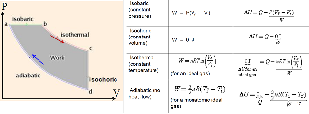
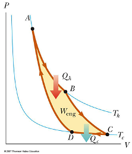
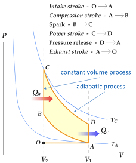
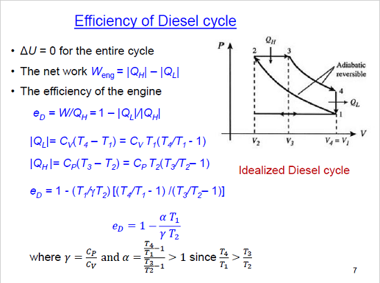
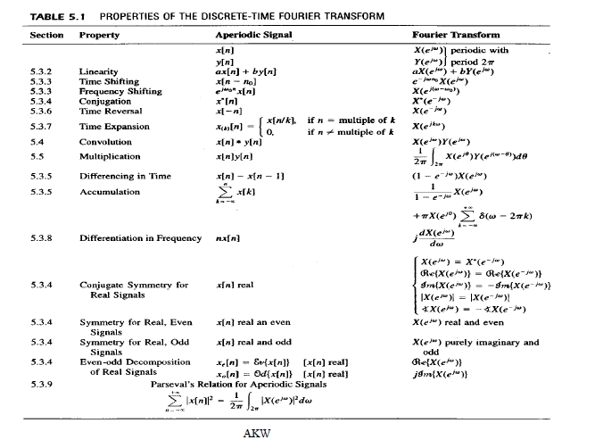

<!DOCTYPE html>
<html lang="en">
<head>
  <!-- hexo-inject:begin --><!-- hexo-inject:end --><meta charset="UTF-8">
<meta name="viewport" content="width=device-width, initial-scale=1, maximum-scale=2">
<meta name="theme-color" content="#222">
<meta name="generator" content="Hexo 4.2.0">
  <link rel="apple-touch-icon" sizes="180x180" href="/images/apple-touch-icon-next.png">
  <link rel="icon" type="image/png" sizes="32x32" href="/images/favicon-32x32-next.png">
  <link rel="icon" type="image/png" sizes="16x16" href="/images/favicon-16x16-next.png">
  <link rel="mask-icon" href="/images/logo.svg" color="#222">

<link rel="stylesheet" href="/css/main.css">


<link rel="stylesheet" href="/lib/font-awesome/css/font-awesome.min.css">
  <link rel="stylesheet" href="//cdn.jsdelivr.net/gh/fancyapps/fancybox@3/dist/jquery.fancybox.min.css">

<script id="hexo-configurations">
    var NexT = window.NexT || {};
    var CONFIG = {"hostname":"github.com","root":"/","scheme":"Mist","version":"7.7.2","exturl":false,"sidebar":{"position":"left","display":"post","padding":18,"offset":12,"onmobile":true},"copycode":{"enable":true,"show_result":false,"style":null},"back2top":{"enable":true,"sidebar":false,"scrollpercent":true},"fancybox":true,"mediumzoom":false,"lazyload":false,"pangu":false,"comments":{"style":"tabs","active":null,"storage":true,"lazyload":false,"nav":null},"algolia":{"hits":{"per_page":10},"labels":{"input_placeholder":"Search for Posts","hits_empty":"We didn't find any results for the search: ${query}","hits_stats":"${hits} results found in ${time} ms"}},"localsearch":{"enable":false,"trigger":"auto","top_n_per_article":1,"unescape":false,"preload":false},"motion":{"enable":true,"async":false,"transition":{"post_block":"fadeIn","post_header":"slideDownIn","post_body":"slideDownIn","coll_header":"slideLeftIn","sidebar":"slideUpIn"}},"path":"search.xml"};
  </script>

  <meta property="og:type" content="website">
<meta property="og:title" content="Destinxxy">
<meta property="og:url" content="http://github.com/index.html">
<meta property="og:site_name" content="Destinxxy">
<meta property="og:locale" content="en_US">
<meta property="article:author" content="Vox09">
<meta name="twitter:card" content="summary">

<link rel="canonical" href="http://github.com/">


<script id="page-configurations">
  // https://hexo.io/docs/variables.html
  CONFIG.page = {
    sidebar: "",
    isHome : true,
    isPost : false,
    lang   : 'en'
  };
</script>

  <title>Destinxxy</title>
  


  <noscript>
  <style>
  .use-motion .brand,
  .use-motion .menu-item,
  .sidebar-inner,
  .use-motion .post-block,
  .use-motion .pagination,
  .use-motion .comments,
  .use-motion .post-header,
  .use-motion .post-body,
  .use-motion .collection-header { opacity: initial; }

  .use-motion .site-title,
  .use-motion .site-subtitle {
    opacity: initial;
    top: initial;
  }

  .use-motion .logo-line-before i { left: initial; }
  .use-motion .logo-line-after i { right: initial; }
  </style>
</noscript><!-- hexo-inject:begin --><!-- hexo-inject:end -->

</head>

<body itemscope itemtype="http://schema.org/WebPage">
  <!-- hexo-inject:begin --><!-- hexo-inject:end --><div class="container use-motion">
    <div class="headband"></div>

    <header class="header" itemscope itemtype="http://schema.org/WPHeader">
      <div class="header-inner"><div class="site-brand-container">
  <div class="site-nav-toggle">
    <div class="toggle" aria-label="Toggle navigation bar">
      <span class="toggle-line toggle-line-first"></span>
      <span class="toggle-line toggle-line-middle"></span>
      <span class="toggle-line toggle-line-last"></span>
    </div>
  </div>

  <div class="site-meta">

    <div>
      <a href="/" class="brand" rel="start">
        <span class="logo-line-before"><i></i></span>
        <span class="site-title">Destinxxy</span>
        <span class="logo-line-after"><i></i></span>
      </a>
    </div>
        <p class="site-subtitle">Life should be hard</p>
  </div>

  <div class="site-nav-right">
    <div class="toggle popup-trigger">
    </div>
  </div>
</div>


<nav class="site-nav">
  
  <ul id="menu" class="menu">
        <li class="menu-item menu-item-home">

    <a href="/" rel="section"><i class="fa fa-fw fa-home"></i>Home</a>

  </li>
        <li class="menu-item menu-item-tags">

    <a href="/tags/" rel="section"><i class="fa fa-fw fa-tags"></i>Tags</a>

  </li>
        <li class="menu-item menu-item-categories">

    <a href="/categories/" rel="section"><i class="fa fa-fw fa-th"></i>Categories</a>

  </li>
        <li class="menu-item menu-item-archives">

    <a href="/archives/" rel="section"><i class="fa fa-fw fa-archive"></i>Archives</a>

  </li>
  </ul>

</nav>
</div>
    </header>

    
  <div class="back-to-top">
    <i class="fa fa-arrow-up"></i>
    <span>0%</span>
  </div>

  <a href="https://github.com/vox09" class="github-corner" title="Follow me on GitHub" aria-label="Follow me on GitHub"><svg width="80" height="80" viewBox="0 0 250 250" aria-hidden="true"><path d="M0,0 L115,115 L130,115 L142,142 L250,250 L250,0 Z"></path><path d="M128.3,109.0 C113.8,99.7 119.0,89.6 119.0,89.6 C122.0,82.7 120.5,78.6 120.5,78.6 C119.2,72.0 123.4,76.3 123.4,76.3 C127.3,80.9 125.5,87.3 125.5,87.3 C122.9,97.6 130.6,101.9 134.4,103.2" fill="currentColor" style="transform-origin: 130px 106px;" class="octo-arm"></path><path d="M115.0,115.0 C114.9,115.1 118.7,116.5 119.8,115.4 L133.7,101.6 C136.9,99.2 139.9,98.4 142.2,98.6 C133.8,88.0 127.5,74.4 143.8,58.0 C148.5,53.4 154.0,51.2 159.7,51.0 C160.3,49.4 163.2,43.6 171.4,40.1 C171.4,40.1 176.1,42.5 178.8,56.2 C183.1,58.6 187.2,61.8 190.9,65.4 C194.5,69.0 197.7,73.2 200.1,77.6 C213.8,80.2 216.3,84.9 216.3,84.9 C212.7,93.1 206.9,96.0 205.4,96.6 C205.1,102.4 203.0,107.8 198.3,112.5 C181.9,128.9 168.3,122.5 157.7,114.1 C157.9,116.9 156.7,120.9 152.7,124.9 L141.0,136.5 C139.8,137.7 141.6,141.9 141.8,141.8 Z" fill="currentColor" class="octo-body"></path></svg></a>


    <main class="main">
      <div class="main-inner">
        <div class="content-wrap">
          

          <div class="content">
            

  <div class="posts-expand">
        
  
  
  <article itemscope itemtype="http://schema.org/Article" class="post-block home" lang="en">
    <link itemprop="mainEntityOfPage" href="http://github.com/2019/10/09/Machine-Learning/">

    <span hidden itemprop="author" itemscope itemtype="http://schema.org/Person">
      <meta itemprop="image" content="/images/avatar.gif">
      <meta itemprop="name" content="Vox09">
      <meta itemprop="description" content="">
    </span>

    <span hidden itemprop="publisher" itemscope itemtype="http://schema.org/Organization">
      <meta itemprop="name" content="Destinxxy">
    </span>
      <header class="post-header">
        <h1 class="post-title" itemprop="name headline">
          
            <a href="/2019/10/09/Machine-Learning/" class="post-title-link" itemprop="url">Machine Learning</a>
        </h1>

        <div class="post-meta">
            <span class="post-meta-item">
              <span class="post-meta-item-icon">
                <i class="fa fa-calendar-o"></i>
              </span>
              <span class="post-meta-item-text">Posted on</span>

              <time title="Created: 2019-10-09 22:00:00" itemprop="dateCreated datePublished" datetime="2019-10-09T22:00:00+08:00">2019-10-09</time>
            </span>
              <span class="post-meta-item">
                <span class="post-meta-item-icon">
                  <i class="fa fa-calendar-check-o"></i>
                </span>
                <span class="post-meta-item-text">Edited on</span>
                <time title="Modified: 2020-03-21 02:30:03" itemprop="dateModified" datetime="2020-03-21T02:30:03+08:00">2020-03-21</time>
              </span>
            <span class="post-meta-item">
              <span class="post-meta-item-icon">
                <i class="fa fa-folder-o"></i>
              </span>
              <span class="post-meta-item-text">In</span>
                <span itemprop="about" itemscope itemtype="http://schema.org/Thing">
                  <a href="/categories/Artificial-Intelligence/" itemprop="url" rel="index"><span itemprop="name">Artificial Intelligence</span></a>
                </span>
            </span>

          

        </div>
      </header>

    
    
    
    <div class="post-body" itemprop="articleBody">

      
          <h1 id="basic">Basic</h1>
<h2 id="naive-bayes-classifier">Naive Bayes Classifier</h2>
<h3 id="bayes-rule">Bayes Rule</h3>
<p><span class="math inline">\(P(A|B)={P(A\and B)\over P(B)}={P(B|A)P(A)\over P(B)}\)</span></p>
<p>When <span class="math inline">\(h\)</span> stands for hypothesis, <span class="math inline">\(D\)</span> stands for data</p>
<p><span class="math inline">\(P(h|D) = {P(D|h)P(h)\over P(D)}={P(D|h)P(h)\over \sum_hP(D|h)P(h)}\)</span></p>
<ul>
<li><span class="math inline">\(P(h)\)</span> <strong>prior probability</strong> of <span class="math inline">\(h\)</span>. Initial probability before observing.</li>
<li><span class="math inline">\(P(h|D)\)</span> <strong>posterior probability</strong> of <span class="math inline">\(h\)</span> after observing the data <span class="math inline">\(D\)</span></li>
<li><span class="math inline">\(P(D|h)\)</span> <strong>likelihood</strong> of observing the data <span class="math inline">\(D\)</span> given hypothesis <span class="math inline">\(h\)</span></li>
<li><span class="math inline">\(P(D)\)</span> <strong>observed probability</strong> that training data <span class="math inline">\(D\)</span> will be observed</li>
</ul>
<h3 id="independence-and-conditional-independence">Independence and Conditional Independence</h3>
<p>Two random variables <span class="math inline">\(X\)</span> and <span class="math inline">\(Y\)</span> are independent if <span class="math inline">\(P(X|Y)=P(X)\)</span> or <span class="math inline">\(P(Y|X)=P(Y)\)</span></p>
<p>Two random variables <span class="math inline">\(X\)</span> and <span class="math inline">\(Y\)</span> are conditionally independent given <span class="math inline">\(Z\)</span> if <span class="math inline">\(P(X|Y,Z)=P(X,Z)\)</span></p>
<h3 id="naive-bayes-classifier-1">Naive Bayes Classifier</h3>
<p>Assumption: Attributes are conditionally independent of each other given the class variable Objective: Maximum the posterior probability given the data.</p>
<p><span class="math inline">\(v_{NB} = arg\ max_{v_j\in V}P(v_j)\Pi^n_{i=1}P(a_i|v_j)\)</span> where <span class="math inline">\(a\)</span> is the attribute, <span class="math inline">\(v\)</span> is the class variable.</p>
<p>What if <span class="math inline">\(P(a_i|v_j)\)</span> is zero?</p>
<h4 id="laplace-correction">Laplace correction</h4>
<p>Add a virtual count of 1 to each attribute value. change <span class="math inline">\({n_c\over n}\to{n_c+1\over n+|a|}\)</span></p>
<h2 id="overfit">Overfit</h2>
<p>hypothesis <span class="math inline">\(h\in H\)</span> overfits the training data if there is an alternative hypothesis <span class="math inline">\(h_0\in H\)</span> such that <span class="math inline">\(h\)</span> has a <strong>smaller</strong> error than <span class="math inline">\(h_0\)</span> over the <strong>training</strong> examples, <span class="math inline">\(h\)</span> has a <strong>larger</strong> error than <span class="math inline">\(h_0\)</span> over the <strong>test</strong> examples (entire distribution of instances)</p>
<p>k-fold cross-validation Divide m examples to k fold. Each time use one fold for validation, others for training. Repeat k times.</p>
<p>k-fold stratified cross-validation partition the m examples into k folds such that each class is uniformly distributed among the k folds.</p>
<h1 id="artificial-neural-network">Artificial Neural Network</h1>
<h2 id="perceptron">Perceptron</h2>
<ul>
<li>inputs <span class="math inline">\(x_1,x_2...\)</span> or <span class="math inline">\(\vec x\)</span></li>
<li>weights <span class="math inline">\(w_1,w_2....\)</span> or <span class="math inline">\(\vec w\)</span></li>
<li>bias <span class="math inline">\(b\)</span> or threshold <span class="math inline">\(t\)</span></li>
<li>activation function <span class="math inline">\(f(x)\)</span></li>
<li>output <span class="math inline">\(o = f(\vec x\vec w -b)\)</span></li>
</ul>
<h2 id="adaline">Adaline</h2>
<p>A feed-forward network with one layer of adjustable weights connected to one or more linear units (as output units)</p>
<p><span class="math inline">\(o = \sum^n_{i=0}w_ix_i = \vec x\vec w\)</span></p>
<p>target output for training data <span class="math inline">\(d: t_d\)</span> output for the training data <span class="math inline">\(d: o_d\)</span> squared training error : <span class="math inline">\(E(\vec w) = {1\over 2}\sum_{d\in D}(t_d-o_D)^2\)</span></p>
<p>Gradient Descent <span class="math inline">\(\Delta E(\vec w) = [{\part E\over\part w_0},{\part E\over\part w_1},...{\part E\over\part w_n}]\)</span></p>
<p>we update the <span class="math inline">\(\vec w\)</span> with learning rate <span class="math inline">\(\eta\)</span> by <span class="math inline">\(w\leftarrow w+\Delta w\)</span> where <span class="math inline">\(\Delta w = -\eta\nabla E(\vec w)=\eta\sum(t_d-o_d)x_d\)</span></p>
<h2 id="hidden-layer">Hidden Layer</h2>
<p>MLP Multi-layer perceptron</p>
<p>If hidden units were linear, then multi-layer is no better than a single layer. We need nonlinearity, to make the network perform better.</p>
<p>Common activation function and derivative:</p>
<ul>
<li>Sigmoid <span class="math inline">\(f = {1\over 1+e^{-x}}\)</span> derivative <span class="math inline">\(f&#39; = f(1-f)\)</span></li>
<li>Radial basis function network(RBF) <span class="math inline">\(f =exp(-{(x-w_j)^T(x-w_j)\over2\sigma_j^2})\)</span> Gaussian distribution.</li>
<li>ReLU <span class="math inline">\(f = max(0,x)\)</span> derivative <span class="math inline">\(f&#39; = (x&gt;0)?1:0\)</span></li>
<li>tanh <span class="math inline">\(f=tanh(x)\)</span> derivative <span class="math inline">\(f&#39;=1-tanh^2(x)\)</span></li>
</ul>
<h2 id="back-propagation">Back-Propagation</h2>
<p><span class="math inline">\({\part E\over \part w_i} = {\part\over\part w_i}{1\over 2}(t-o)^2 = -(t-o)({\part o\over \part w_i}) = -(t-o){\part o\over\part f_a}{\part f_a\over\part w_i}\)</span></p>
<p>where <span class="math inline">\(f_a\)</span> is the <strong>input</strong> of the activation function, and <span class="math inline">\({\part f_a\over\part w_i} = x_i\)</span></p>
<p><span class="math inline">\({\part E\over \part w_i} =-(t-o){\part o\over \part f_a}x_i = -\delta x_i\)</span> where <span class="math inline">\(\delta = (t-o){\part o \over \part f_a}\)</span></p>
<p>Weight update <span class="math inline">\(w_{ji}\leftarrow w_{ji}+\Delta w_{ji}=w+\eta\delta_jx_i\)</span> - <strong>batch</strong> gradient descent: use <strong>all</strong> examples in each iteration - <strong>stochastic</strong> gradient descent: use <strong>1</strong> example in each iteration - <strong>mini-batch</strong> gradient descent: use <strong>b</strong> examples in each iteration</p>
<p>To speed up the BP algorithm, we can use the <strong>momentum</strong> term <span class="math inline">\(\Delta w(t+1)=-\eta{\part E\over\part w}+\alpha\Delta w(t)\)</span>.</p>
<p>To avoid get in stuck in local minima, we can train multiple networks using the same data, but initialize each with different random weights.</p>
<h2 id="cnn">CNN</h2>
<ol type="1">
<li>Nonlinearity is from ReLU.</li>
<li>Zero padding each layer to avoid data shrinking.</li>
<li>Max pooling to extract features and approximately locate their location.</li>
</ol>
<h3 id="x1-convolution">1x1 Convolution</h3>
<p><span class="math inline">\(D_K\)</span> is the dimension of kernel, <span class="math inline">\(D_F\)</span> is the dimension of features, <span class="math inline">\(M\)</span> is the input data channel, <span class="math inline">\(N\)</span> is the output feature channel</p>
<p>original cost of convolution <span class="math inline">\(D_K^2MND_F^2\)</span></p>
<p>depth-wise convolution <span class="math inline">\(D_K^2M\)</span> One filter per channel. Combine information from channels. 1 x 1 convolution: <span class="math inline">\(M\)</span> a total <span class="math inline">\(D_K^2MD_F^2+MND_F^2\)</span></p>
<p>speed up <span class="math inline">\(D_K^2N/(D_K^2+N)\)</span> Empirically, 9 times less work with the same accuracy.</p>
<h2 id="rnn">RNN</h2>
<p>Hidden layers and output depend from <strong>previous</strong> states of the hidden layers and the <strong>current</strong> inputs. The same weights are used for different instances of the artificial neurons at different time stamps.</p>
<figure>
<figcaption>image-20191029162522774</figcaption>
</figure>
<p>Problems: - vanishing gradients gradient signal get so small that learning stops. - exploding gradients gradients signal is so large that it can cause learning to diverge.</p>
<h3 id="lstm">LSTM</h3>
<p>Long Short-Term Memory</p>
<figure>
<figcaption>image-20191029162412552</figcaption>
</figure>
<figure>
<figcaption>image-20191029183428636</figcaption>
</figure>
<p><span class="math inline">\(\odot\)</span> stands for element wise multifaction forget gate <span class="math inline">\(f_t=\sigma(W_f[h_{t-1},x_t]+b_f)\)</span> input gate <span class="math inline">\(i_t=\sigma(W_i[h_{t-1},x_t]+b_i)\)</span> Internal State<span class="math inline">\(\bar C_t=tanh(W_C[h_{t-1},x_t]+b_C)\quad C_t= f_t\odot C_{t-1}+i_t\odot\bar C_t\)</span> Output gate <span class="math inline">\(o_t=\sigma(W_o[h_{t-1},x_t]+b_o)\quad h_t=o_t\odot tanh(C_t)\)</span></p>
<h1 id="reinforcement-learning">Reinforcement Learning</h1>
<p>Learning Paradigms</p>
<ol type="1">
<li>Supervised earning the learner is provided with a set of inputs together with the corresponding desired outputs.</li>
<li>Unsupervised learning training examples as inputs patterns, with no associated output patterns</li>
<li>Reinforcement learning Only input and evaluative out are given</li>
</ol>
<h2 id="concept">Concept</h2>
<ul>
<li><p>Goal</p></li>
<li><p>States <span class="math inline">\(s_i\)</span></p></li>
<li><p>Actions <span class="math inline">\(a_i\)</span></p></li>
<li><p>Rewards <span class="math inline">\(r_i\)</span></p></li>
</ul>
<ol type="1">
<li>Markov Assumption: <span class="math inline">\(s_{t+1}\)</span> and <span class="math inline">\(r_t\)</span> depend only on current state and action</li>
<li>Non-Deterministic: Action may have uncertain outcomes. <span class="math inline">\(P(s,s&#39;,a)\)</span> <strong>probability</strong> of transition from <span class="math inline">\(s\)</span> to <span class="math inline">\(s&#39;\)</span> given action <span class="math inline">\(a\)</span> <span class="math inline">\(R(s,s&#39;,a)\)</span> <strong>expected</strong> reward on transition <span class="math inline">\(s\)</span> to <span class="math inline">\(s&#39;\)</span> given action <span class="math inline">\(a\)</span></li>
<li>Discounted Rewards: A reward in the future is not worth quite as much as a reward now. Introduce a <strong>discount factor</strong> for future reward discounted rewards = <span class="math inline">\(r_t+\gamma r_{t+1}+\gamma^2 r_{t+2}+...\)</span> where <span class="math inline">\(0\le\gamma\le1\)</span>. shortsighted <span class="math inline">\(0\leftarrow\gamma\to1\)</span> farsighted</li>
</ol>
<h2 id="policy">Policy</h2>
<p>Policy is denoted by <span class="math inline">\(\pi\)</span></p>
<p>Learn action policy <span class="math inline">\(\pi\)</span> that maximizes the expected future reward <span class="math inline">\(V^\pi(s)\equiv E[r_t+\gamma r_{t=1}+\gamma^2r_{t+2}+...]\)</span></p>
<h3 id="deterministic">Deterministic</h3>
<p><span class="math inline">\(V^\pi(s)\equiv E[r_t+\gamma r_{t=1}+\gamma^2r_{t+2}+...] = r_t+\gamma r_{t=1}+\gamma^2r_{t+2}+...\)</span></p>
<p>At state <span class="math inline">\(s\)</span>, take action <span class="math inline">\(a\)</span> immediate reward <span class="math inline">\(r(s,a)\)</span> value of the immediate successor state <span class="math inline">\(V^\pi(\delta(s,a))\)</span></p>
<p><span class="math inline">\(V^\pi(s) = r(s,a) +\gamma V^\pi(\delta(s,a))\)</span> (<strong>Bellman equation</strong>)</p>
<h3 id="nondeterministic">Nondeterministic</h3>
<p>At state <span class="math inline">\(s\)</span>, take action <span class="math inline">\(a\)</span> with probability <span class="math inline">\(\pi(s,a)\)</span> from <span class="math inline">\(s\)</span>, take action <span class="math inline">\(a\)</span>, probability of transition to <span class="math inline">\(s&#39;:\ P(s,s&#39;,s)\)</span> expected reward on transition given action <span class="math inline">\(a:\ R(s,s&#39;,a))\)</span></p>
<p><span class="math inline">\(V^\pi(s) = \sum_a\pi(s,a)\sum_{s&#39;}P(s,s&#39;,a)[R(s,s&#39;,a)+\gamma V^\pi(s&#39;)]\)</span></p>
<h3 id="iterative-evaluation">Iterative Evaluation</h3>
<p>Instead of solving the linear system, we can also use an iterative method!</p>
<ul>
<li>Initialize <span class="math inline">\(V_0\)</span></li>
<li><span class="math inline">\(V_0\to V_1\to V_2\to ...V_k\to V_{k+1}...\to V^\pi\)</span></li>
</ul>
<p>Update Rule: <span class="math inline">\(V_{k+1}(s) = \sum_a\pi(s,a)\sum_{s&#39;}P(s,s&#39;,a)[R(s,s&#39;,a)+\gamma V_k(s&#39;)]\)</span></p>

      
    </div>

    
    
    
      <footer class="post-footer">
        <div class="post-eof"></div>
      </footer>
  </article>
  
  
  

        
  
  
  <article itemscope itemtype="http://schema.org/Article" class="post-block home" lang="en">
    <link itemprop="mainEntityOfPage" href="http://github.com/2019/10/09/PHYS1003/">

    <span hidden itemprop="author" itemscope itemtype="http://schema.org/Person">
      <meta itemprop="image" content="/images/avatar.gif">
      <meta itemprop="name" content="Vox09">
      <meta itemprop="description" content="">
    </span>

    <span hidden itemprop="publisher" itemscope itemtype="http://schema.org/Organization">
      <meta itemprop="name" content="Destinxxy">
    </span>
      <header class="post-header">
        <h1 class="post-title" itemprop="name headline">
          
            <a href="/2019/10/09/PHYS1003/" class="post-title-link" itemprop="url">PHYS1003</a>
        </h1>

        <div class="post-meta">
            <span class="post-meta-item">
              <span class="post-meta-item-icon">
                <i class="fa fa-calendar-o"></i>
              </span>
              <span class="post-meta-item-text">Posted on</span>

              <time title="Created: 2019-10-09 15:40:00" itemprop="dateCreated datePublished" datetime="2019-10-09T15:40:00+08:00">2019-10-09</time>
            </span>
              <span class="post-meta-item">
                <span class="post-meta-item-icon">
                  <i class="fa fa-calendar-check-o"></i>
                </span>
                <span class="post-meta-item-text">Edited on</span>
                <time title="Modified: 2019-10-16 17:21:51" itemprop="dateModified" datetime="2019-10-16T17:21:51+08:00">2019-10-16</time>
              </span>
            <span class="post-meta-item">
              <span class="post-meta-item-icon">
                <i class="fa fa-folder-o"></i>
              </span>
              <span class="post-meta-item-text">In</span>
                <span itemprop="about" itemscope itemtype="http://schema.org/Thing">
                  <a href="/categories/School-Notes/" itemprop="url" rel="index"><span itemprop="name">School Notes</span></a>
                </span>
            </span>

          

        </div>
      </header>

    
    
    
    <div class="post-body" itemprop="articleBody">

      
          <h1 id="energy">Energy</h1>
<h2 id="energy-consumption-and-population-growth">Energy Consumption and Population Growth</h2>
<blockquote>
<p>I = P x A x T</p>
</blockquote>
<p>Human Impact = Population x Affluence x Technology</p>
<p>7.2 billion people now. 140 million born/year, 57 million die/year. 108 billion estimated to have ever lived.</p>
<p>doubling time 2 = e^0.7</p>
<h2 id="fossil-fuels">Fossil fuels</h2>
<p>1 manpower = 75W</p>
<p>1kWh = 3.6 x 1e6 J 1 hp = 746 J 1 toe = 42 x 1e9 J 1 Cal = 4.19 x 1e3 J 1BTU = 1055 J</p>
<h1 id="thermodynamics">Thermodynamics</h1>
<h2 id="temperature-and-heat">Temperature and heat</h2>
<p>Kelvin = Celsius + 273.15 Fahrenheit = 9/5 Celsius + 32</p>
<p>Internal Energy = Kinetic Energy(KE) + Potential Energy(PE) For gas, PE is almost zero. The internal energy of gas is the sum of kinetic energy of all molecules.</p>
<p><span class="math inline">\({1\over2}mv_{avg}^2={1\over2}jKT\)</span> where <span class="math inline">\(j\)</span> is the degree of freedom of motion.</p>
<p>For ideal gas <span class="math inline">\(pV=nRT=NkT\)</span><br />
where <span class="math inline">\(R=8.315J/mol/K\)</span> and <span class="math inline">\(k=1.38\times10^{-23}J/K\)</span> and <span class="math inline">\(N_A=6.02\times10^{23}\)</span></p>
<h2 id="laws-of-thermodynamics">Laws of thermodynamics</h2>
<ol type="1">
<li><p>The first law of thermodynamics <span class="math inline">\(\Delta U=Q-W\)</span> change in internal energy = Heat added - work done</p></li>
<li><p>2nd law: Isolated systems naturally move towards configurations of increasing probability.</p></li>
</ol>
<h2 id="ideal-gas">Ideal Gas</h2>
<p>Work done in isothermal process <span class="math inline">\(W=nRT\ ln(V_f/V_i)\)</span> Work done in adiabatic expansion <span class="math inline">\(W = \int PdV = [1/(\gamma-1)](P_iV_i-P_fV_f)\)</span> where <span class="math inline">\(\gamma=C_p/C_v\)</span></p>
<p>Thermodynamic processes in a cycle </p>
<p><span class="math inline">\(a\to b\)</span> P is constant <span class="math inline">\(\ W=P\Delta V,\Delta U=Q-W\)</span> <span class="math inline">\(b\to c\)</span> T is constant <span class="math inline">\(\ W=Q,\Delta U=0\)</span> <span class="math inline">\(c\to d\)</span> V is constant <span class="math inline">\(\ W=0,\Delta U=-W\)</span> <span class="math inline">\(d\to a\)</span> adiabatic compression <span class="math inline">\(Q=0, \Delta U=-W\)</span> For an ideal gas <span class="math inline">\(\Delta U=nC_V\Delta T\)</span> , where <span class="math inline">\(C_V\)</span> is the <strong>molar specific heat capacity</strong>. At constant volume <span class="math inline">\(C_V=(j/2)R\)</span>. At constant pressure <span class="math inline">\(C_P=C_V+R\)</span></p>
<h2 id="heat-engine">Heat Engine</h2>
<p>Heat input to the engine <span class="math inline">\(Q_h\)</span> equals to heat output from the engine <span class="math inline">\(Q_c\)</span> plus the work done <span class="math inline">\(W\)</span> <span class="math inline">\(Q_h=Q_c+W\)</span> The thermal efficiency <span class="math inline">\(e={W\over Q_h}=1-{Q_c\over Q_h}\)</span></p>
<h2 id="heat-pump">Heat Pump</h2>
<p>Heat input to the engine <span class="math inline">\(Q_c\)</span> plus the work done <span class="math inline">\(W\)</span> equals to heat output from the engine <span class="math inline">\(Q_h\)</span> <span class="math inline">\(Q_c+W=Q_h\)</span><br />
The effectiveness is described by COP, the ratio of useful heat movement per work input. Cooling mode <span class="math inline">\(COP={Q_c\over W}\le {T_c\over T_h-T_c}\)</span> Heating mode <span class="math inline">\(COP={Q_h\over W}\le {T_h\over T_h-T_c}\)</span> COP becomes most “efficient” for <strong>small temperature differences</strong></p>
<h2 id="carnot-engine">Carnot Engine</h2>
<p>If operates in an ideal, reversible Carnot cycle between two reservoirs and is the most efficient engine possible.</p>
<figure>
<figcaption>1571069346699</figcaption>
</figure>
<ol type="1">
<li><p>Isothermal expansion <span class="math inline">\(A\to B\)</span> The gas absorbs <span class="math inline">\(Q_h\)</span> from high temperature reservoir <span class="math inline">\(T_h\)</span> and do work <span class="math inline">\(W_{AB}\)</span></p></li>
<li><p>Adiabatic expansion <span class="math inline">\(B\to C\)</span> Temperature drops from <span class="math inline">\(T_h\)</span> to <span class="math inline">\(T_c\)</span>. The gas does work <span class="math inline">\(W_{BC}\gt 0\)</span></p></li>
<li><p>Isothermal compression <span class="math inline">\(C\to D\)</span> The gas expels <span class="math inline">\(Q_c\)</span> to low temperature reservoir <span class="math inline">\(T_c\)</span> and work <span class="math inline">\(W_{CD}\)</span>is done on gas</p></li>
<li><p>Adiabatic expansion <span class="math inline">\(D\to A\)</span> Temperature rises from <span class="math inline">\(T_c\)</span> to <span class="math inline">\(T_h\)</span>. The gas does work <span class="math inline">\(W_{DA}\lt 0\)</span></p></li>
</ol>
<p>The net work <span class="math inline">\(W_{eng}=|Q_h|-|Q_c|\)</span>. The efficiency <span class="math inline">\(e_C=1-{T_c\over T_h}\)</span></p>
<h2 id="entropy">Entropy</h2>
<p><span class="math inline">\(\Delta S=\Delta Q_{rev}/T \to S = \int dQ_{rev}/T\)</span></p>
<p>The effect of all naturally occurring processes is always to increase the total entropy of the universe.</p>
<p><span class="math inline">\(e_{any\ engine}\le 1-{T_c\over T_h}=e_{Carnot}\)</span></p>
<h1 id="transport-engine">Transport Engine</h1>
<h2 id="otto-gasoline-engine">Otto Gasoline Engine</h2>
<figure>
<figcaption>20191015_030857946_iOS</figcaption>
</figure>
<p>The efficiency of the Otto cycle is <span class="math inline">\(e_0=1-{1\over (V_1/V_2)^{\gamma-1}}\)</span>. Generally about 20% to 30%</p>
<p>Energy dissipation = Energy for brake + Air drag <span class="math inline">\({1\over 2}v^3(m_c/d+\rho A)\)</span> where <span class="math inline">\(A\)</span> is the cross-sectional area of the car.</p>
<h2 id="diesel-engine">Diesel Engine</h2>
<figure>
<figcaption>Diesel Engine</figcaption>
</figure>
<h2 id="jet-engine">Jet Engine</h2>
<p>Power required to overcome drag <span class="math inline">\(P_{drag}={1\over 2}\rho c_dA_pV^3\)</span> where <span class="math inline">\(A_p\)</span> is the frontal area of the plane. Power required to lift <span class="math inline">\(P_{lift}={(mg)^2\over 2\rho vA_s}\)</span> where <span class="math inline">\(A_s\)</span> is the cross-sectional area of the air cylinder. Total Power <span class="math inline">\(P_{total}=P_{drag}+P_{lift}\)</span> Thrust can be optimized <span class="math inline">\(F={P\over v}={1\over 2}\rho c_dA_pV^2+{(mg)^2\over 2\rho v^2A_s}\ge c_d\rho A_pv_{opt}^2\)</span> where <span class="math inline">\(\rho v_{opt}^2={mg\over\sqrt c_dA_pA_s}\)</span> so that <span class="math inline">\(F_{opt}=\sqrt{c_df_A}mg\)</span> where the <span class="math inline">\(f_A=A_p/A_s\)</span> is the filling factor</p>
<p>Transport cost = <span class="math inline">\({1\over\epsilon}g\sqrt{c_df_a}\quad(N/kg)\)</span> Transport efficiency = <span class="math inline">\(N_{passengers}\times\epsilon\times E/V \over thrust\)</span>(passenger-km per litre) Range = <span class="math inline">\({energy\times \epsilon\over force}\)</span></p>

      
    </div>

    
    
    
      <footer class="post-footer">
        <div class="post-eof"></div>
      </footer>
  </article>
  
  
  

        
  
  
  <article itemscope itemtype="http://schema.org/Article" class="post-block home" lang="en">
    <link itemprop="mainEntityOfPage" href="http://github.com/2019/07/07/Database/">

    <span hidden itemprop="author" itemscope itemtype="http://schema.org/Person">
      <meta itemprop="image" content="/images/avatar.gif">
      <meta itemprop="name" content="Vox09">
      <meta itemprop="description" content="">
    </span>

    <span hidden itemprop="publisher" itemscope itemtype="http://schema.org/Organization">
      <meta itemprop="name" content="Destinxxy">
    </span>
      <header class="post-header">
        <h1 class="post-title" itemprop="name headline">
          
            <a href="/2019/07/07/Database/" class="post-title-link" itemprop="url">Database</a>
        </h1>

        <div class="post-meta">
            <span class="post-meta-item">
              <span class="post-meta-item-icon">
                <i class="fa fa-calendar-o"></i>
              </span>
              <span class="post-meta-item-text">Posted on</span>

              <time title="Created: 2019-07-07 23:00:00" itemprop="dateCreated datePublished" datetime="2019-07-07T23:00:00+08:00">2019-07-07</time>
            </span>
              <span class="post-meta-item">
                <span class="post-meta-item-icon">
                  <i class="fa fa-calendar-check-o"></i>
                </span>
                <span class="post-meta-item-text">Edited on</span>
                <time title="Modified: 2019-10-09 22:23:20" itemprop="dateModified" datetime="2019-10-09T22:23:20+08:00">2019-10-09</time>
              </span>
            <span class="post-meta-item">
              <span class="post-meta-item-icon">
                <i class="fa fa-folder-o"></i>
              </span>
              <span class="post-meta-item-text">In</span>
                <span itemprop="about" itemscope itemtype="http://schema.org/Thing">
                  <a href="/categories/School-Notes/" itemprop="url" rel="index"><span itemprop="name">School Notes</span></a>
                </span>
            </span>

          

        </div>
      </header>

    
    
    
    <div class="post-body" itemprop="articleBody">

      
          <h2 id="er-model">ER Model</h2>
<h3 id="keys">Keys</h3>
<ul>
<li>If the values of some attributes can uniquely identify an entity instance then these attributes are said to be a <strong>key</strong> of the entity.</li>
<li>An entity may have <strong>more than one key</strong>.
<ul>
<li>A <strong>candidate key</strong> is a minimal set of attributes (i.e., all attributes are needed) that uniquely identifies an entity instance.</li>
</ul></li>
<li>One candidate key is selected to be the <strong>primary key</strong>.</li>
<li>A candidate/primary key can be composed of a set of attributes =&gt; <strong>composite key</strong>.</li>
</ul>
<h3 id="strong-and-weak-entity">Strong and Weak Entity</h3>
<p>Strong entity: An entity that has a primary key</p>
<p>Weak entity: An entity that does not have a primary key.</p>
<ul>
<li>A weak entity must be associated with a strong entity, called the <strong>identifying entity</strong>, to be meaningful.</li>
<li>The relationship associating the weak entity to the strong entity is called the <strong>identifying relationship</strong>.</li>
<li>A <strong>discriminator</strong>, if present, uniquely identifies a weak entity instance within its identifying relationship.</li>
<li>A <strong>surrogate key</strong> is a new attribute introduced into an entity to be the primary key of the entity. It may be useful to make weak entities strong or to replace a strong entity's key, if it consists of many attributes. (usually sequentially assigned numbers.)</li>
</ul>
<h2 id="relation-model-and-algebra">Relation Model and Algebra</h2>
<h3 id="reduce-from-er-model">Reduce from ER Model</h3>
<ul>
<li><p>Generalization, two options:</p>
<ol type="1">
<li><p>Reduce all entities to relation schema</p>
<p>Add:</p>
<ol type="1">
<li>the primary key, <span class="math inline">\(K\)</span>, of the superclass</li>
<li>a foreign key constraint, reference superclass</li>
<li>a referential integrity action: on delete cascade</li>
</ol></li>
<li><p>Reduce only subclass entities to relation schema. (Only for total, disjoint generalizations) Add:</p>
<ol type="1">
<li>all the attributes of the super class entity.</li>
</ol></li>
</ol></li>
<li><p>Composite attributes, two options:</p>
<ol type="1">
<li>Create a single attribute and pack components in it.</li>
<li>Create a separate attribute for each component.</li>
</ol></li>
<li><p>Multivalued attribute <span class="math inline">\(M\)</span> , entity <span class="math inline">\(S\)</span>:</p>
<ul>
<li>Create a relation schema <span class="math inline">\(SM(K_S,A)\)</span> where <span class="math inline">\(K_S\)</span> is the primary key of <span class="math inline">\(S\)</span>, <span class="math inline">\(A\)</span> is the <span class="math inline">\(M\)</span>.</li>
<li>The primary key of relation <span class="math inline">\(SM\)</span> is the union of <strong>all its attributes.</strong></li>
<li>Add:
<ol type="1">
<li>a foreign key constraint: foreign key <span class="math inline">\((FK_S)\)</span> reference <span class="math inline">\(S(K_S)\)</span></li>
<li>a referential integrity action: on delete cascade</li>
</ol></li>
</ul></li>
<li><p>Strong entity: Create a relation with all the attributes.</p></li>
<li><p>Weak entity <span class="math inline">\(T\)</span> that depends on strong entity <span class="math inline">\(S\)</span>:</p>
<ul>
<li>Create a relation schema <span class="math inline">\(R_T\)</span> with attributes of <span class="math inline">\(T\)</span>.</li>
<li>Include attributes <span class="math inline">\(A_R\)</span> of relationship <span class="math inline">\(R\)</span> in <span class="math inline">\(R_T\)</span></li>
<li>Include as foreign key attributes <span class="math inline">\(FK_S\)</span> in relation <span class="math inline">\(R_T\)</span></li>
<li>The primary key of relation <span class="math inline">\(R_T\)</span> is the union of the foreign key attributes <span class="math inline">\(FK_S\)</span> and the discriminator <span class="math inline">\(d_A\)</span> of the weak entity <span class="math inline">\(T\)</span>.</li>
<li>Add:
<ol type="1">
<li>a foreign key constraint: foreign key <span class="math inline">\((FK_S)\)</span> references <span class="math inline">\(S(K_S)\)</span></li>
<li>a referential integrity action: on delete cascade</li>
</ol></li>
</ul></li>
<li><p>Relation:</p>
<ul>
<li>Create a new relation schema <span class="math inline">\(R_R\)</span></li>
<li>Include as foreign key attributes in relation <span class="math inline">\(R_R\)</span> the primary key of the entities related by relationship <span class="math inline">\(R\)</span>.</li>
<li>Include attributes <span class="math inline">\(A_R\)</span> of relationship <span class="math inline">\(R\)</span></li>
</ul>
<ol type="1">
<li>For 1:1 relationship, combine the attributes in the relation to the relation schema of <strong>either entity</strong>.</li>
<li>For 1:N relationship, combine the attributes in the relation to the relation schema of <strong>either on the N-side</strong>.</li>
<li>For M:N, the relation schema of relationship cannot be combined to relation schema of entity.</li>
</ol>
<ul>
<li>Add:
<ol type="1">
<li>a foreign key constraint for the foreign key.</li>
<li>a referential integrity action: <strong>optional</strong>=on delete set null; <strong>total</strong>=on delete cascade;</li>
</ol></li>
</ul></li>
</ul>
<h3 id="relation-algebra">Relation Algebra</h3>
<ul>
<li>Selection <span class="math inline">\(\sigma_{Condition}(Relation)\)</span></li>
<li>Projection <span class="math inline">\(\pi_{List}(Relation)\)</span> result no duplicated.</li>
<li>Set operations <span class="math inline">\(\cup\)</span> union <span class="math inline">\(-\)</span> set difference <span class="math inline">\(\cap\)</span> intersection <span class="math inline">\(\times\)</span> Cartesian product</li>
<li>Join <span class="math inline">\(\Join_{Condition}\)</span> join two relation with certain condition. left/right/full outer join can create table with value <strong>null</strong></li>
</ul>
<h2 id="sql">SQL</h2>
<figure class="highlight sql"><table><tr><td class="gutter"><pre><span class="line">1</span><br><span class="line">2</span><br><span class="line">3</span><br></pre></td><td class="code"><pre><span class="line"><span class="keyword">select</span> A1, A2, ..., An</span><br><span class="line"><span class="keyword">from</span> R1, R2, ..., Rm</span><br><span class="line"><span class="keyword">where</span> P;</span><br></pre></td></tr></table></figure>
<p><code>Ai</code> are attributes. <code>Ri</code> are relations. <code>P</code> is a predicate (condition). Return a relation(may contain duplicates).</p>
<p>select clause = Projection <span class="math inline">\(\pi L(R)\)</span> from clause = Cartesian product <span class="math inline">\(A\times B\)</span> where clause = Selection <span class="math inline">\(\sigma C(R)\)</span>, natural join <span class="math inline">\(\Join_N\)</span></p>
<h3 id="nested-subqueries">Nested Subqueries</h3>
<figure class="highlight sql"><table><tr><td class="gutter"><pre><span class="line">1</span><br><span class="line">2</span><br><span class="line">3</span><br></pre></td><td class="code"><pre><span class="line"><span class="keyword">select</span> *</span><br><span class="line"><span class="keyword">from</span> R</span><br><span class="line"><span class="keyword">where</span> a &gt; (<span class="keyword">select</span> <span class="keyword">avg</span>(a) <span class="keyword">from</span> R)</span><br></pre></td></tr></table></figure>
<h3 id="aggregate-functions">Aggregate Functions</h3>
<figure class="highlight sql"><table><tr><td class="gutter"><pre><span class="line">1</span><br><span class="line">2</span><br><span class="line">3</span><br><span class="line">4</span><br></pre></td><td class="code"><pre><span class="line"><span class="keyword">select</span> <span class="keyword">name</span>, <span class="keyword">count</span>(<span class="keyword">name</span>)</span><br><span class="line"><span class="keyword">from</span> R</span><br><span class="line"><span class="keyword">group</span> <span class="keyword">by</span> <span class="keyword">name</span>, <span class="built_in">number</span></span><br><span class="line"><span class="keyword">having</span> <span class="built_in">number</span>&gt;<span class="number">100</span>;</span><br></pre></td></tr></table></figure>
<ol type="1">
<li>An attribute in the <code>select</code> clause <strong>must</strong> also appear in the <code>group by</code> clause. An attribute in the <code>group by</code> clause <strong>do not</strong> need to appear in the <code>select</code> clause.</li>
<li>Any attribute present in the <code>having</code> clause that is not being aggregated must appear in the <code>group by</code> clause.</li>
</ol>
<h3 id="temporary-subqueries">Temporary Subqueries</h3>
<figure class="highlight sql"><table><tr><td class="gutter"><pre><span class="line">1</span><br><span class="line">2</span><br><span class="line">3</span><br><span class="line">4</span><br><span class="line">5</span><br></pre></td><td class="code"><pre><span class="line"><span class="keyword">select</span> <span class="keyword">name</span>, avgAmount</span><br><span class="line"><span class="keyword">from</span> (<span class="keyword">select</span> <span class="keyword">name</span>, <span class="keyword">avg</span>(amount) <span class="keyword">as</span> avgAmount</span><br><span class="line">      <span class="keyword">from</span> R</span><br><span class="line">      <span class="keyword">group</span> <span class="keyword">by</span> <span class="keyword">name</span>)<span class="keyword">result</span></span><br><span class="line"><span class="keyword">where</span> avgAmount = (<span class="keyword">select</span> <span class="keyword">max</span>(amount) <span class="keyword">from</span> <span class="keyword">result</span>);</span><br></pre></td></tr></table></figure>
<p>In Oracle, it is expressed by the form</p>
<figure class="highlight sql"><table><tr><td class="gutter"><pre><span class="line">1</span><br><span class="line">2</span><br><span class="line">3</span><br><span class="line">4</span><br><span class="line">5</span><br><span class="line">6</span><br><span class="line">7</span><br></pre></td><td class="code"><pre><span class="line"><span class="keyword">with</span> <span class="keyword">result</span>(<span class="keyword">name</span>, <span class="keyword">avg</span>(amount) <span class="keyword">as</span> </span><br><span class="line">      <span class="keyword">select</span> <span class="keyword">name</span>, <span class="keyword">avg</span>(amount)</span><br><span class="line">      <span class="keyword">from</span> R</span><br><span class="line">      <span class="keyword">group</span> <span class="keyword">by</span> <span class="keyword">name</span>)</span><br><span class="line"><span class="keyword">select</span> <span class="keyword">name</span>, avgAmount</span><br><span class="line"><span class="keyword">from</span> <span class="keyword">result</span></span><br><span class="line"><span class="keyword">where</span> avgAmount = (<span class="keyword">select</span> <span class="keyword">max</span>(amount) <span class="keyword">from</span> <span class="keyword">result</span>);</span><br></pre></td></tr></table></figure>
<h3 id="manipulation">Manipulation</h3>
<ul>
<li>Create Relations <code>create table T(a type);</code></li>
<li>Alter and Destroy Relations add attributes <code>alter table T add b type;</code> drop attributes <code>alter table T drop column b;</code> drop table <code>drop  table T;</code></li>
<li>Integrity Constraints(IC) <code>not null</code> <code>primary key</code> <code>unique</code> <code>foreign key...references...</code> <code>check</code></li>
<li>Create views to hide certain data from certain users</li>
<li>Delete tuples <code>delete from R where name='want'</code></li>
<li>Update <code>update R set a = 0</code></li>
</ul>
<h2 id="function-dependency">Function Dependency</h2>
<p><strong>superkey</strong>: any set of attributes that determines the entire tuple.</p>
<p><strong>candidate key</strong>: any minimal set of attributes that determines the entire tuple.</p>
<p><strong>primary key</strong>: if there are multiple candidate keys, the database designer choose one of them as the primary key.</p>
<p>The set of all functional dependencies logically implied by <span class="math inline">\(F\)</span> is called the closure of <span class="math inline">\(F\)</span> denoted as <span class="math inline">\(F^+\)</span></p>
<ul>
<li>Lossless Decomposition A decomposition of <span class="math inline">\(R\)</span> into <span class="math inline">\(R_1\)</span> and <span class="math inline">\(R_2\)</span> is <strong>lossless</strong> if and only if <span class="math inline">\(R_1 \cap R_2 \to R_1\)</span> or <span class="math inline">\(R_1 \cap R_2 \to R_2\)</span></li>
<li>Preserve Functional dependencies The decomposition is dependency preserving if and only if $(F_i )^+ = F^+ $.</li>
</ul>
<p><strong>prime and non-prime attributes:</strong><br />
An attribute is a prime attribute if it is <strong>part of any candidate key</strong>.</p>
<h3 id="canonical-cover">Canonical Cover</h3>
<blockquote>
<p>Algorithm</p>
<p><span class="math inline">\(F_c\)</span> = <span class="math inline">\(F\)</span><br />
Repeat:<br />
Use the union rule to replace any FDs in <span class="math inline">\(F_c\)</span> of the form <span class="math inline">\(X\to Y\)</span> and <span class="math inline">\(X\to Z\)</span> with <span class="math inline">\(X\to YZ\)</span> Find an FD <span class="math inline">\(X\to Y\)</span> in <span class="math inline">\(F_c\)</span> with an extraneous attribute either in <span class="math inline">\(X\)</span> or in <span class="math inline">\(Y\)</span><br />
Until <span class="math inline">\(F_c\)</span> does not change</p>
</blockquote>
<h3 id="nf">1NF</h3>
<p>A relation schema is in First Normal Form (1NF) if all attributes are atomic (single-valued).</p>
<ul>
<li>There are no multi-valued or composite attributes</li>
</ul>
<p>Relation schema are always in 1NF.</p>
<h3 id="nf-1">2NF</h3>
<p>A relation schema is in Second Normal Form (2NF) if all <strong>non-prime attributes are fully functionally dependent on every candidate key.</strong></p>
<p>Relation <span class="math inline">\(R\)</span> is 2NF if and only if For each FD: <span class="math inline">\(X\to A\)</span> in <span class="math inline">\(F^+\)</span>:</p>
<ol type="1">
<li><span class="math inline">\(A\in X\)</span> (trivial) or</li>
<li><span class="math inline">\(X\)</span> is not a <strong>proper subset of a candidate key</strong> for <span class="math inline">\(R\)</span> or</li>
<li>A is a <strong>prime attribute</strong> for <span class="math inline">\(R\)</span></li>
</ol>
<h3 id="nf-2">3NF</h3>
<p>A relation schema R is in Third Normal Form (3NF) if it is in 2NF and <strong>every non-prime attribute of R is non-transitively dependent on every candidate key of R.</strong></p>
<p>Relation <span class="math inline">\(R\)</span> is 3NF if and only if: For each FD:<span class="math inline">\(X\to A\)</span> in <span class="math inline">\(F^+\)</span>:</p>
<ol type="1">
<li><span class="math inline">\(A\in X\)</span> (trivial) or</li>
<li><span class="math inline">\(X\)</span> is a <strong>superkey</strong> for <span class="math inline">\(R\)</span> or</li>
<li><span class="math inline">\(A\)</span> is a <strong>prime attribute</strong> for <span class="math inline">\(R\)</span></li>
</ol>
<blockquote>
<p>Algorithm</p>
<p>Let <span class="math inline">\(R\)</span> be the initial relation schema with FDs <span class="math inline">\(F\)</span> Compute the <strong>canonical cover</strong> <span class="math inline">\(F_c\)</span> of <span class="math inline">\(F\)</span>. <span class="math inline">\(S = \phi\)</span> For each FS <span class="math inline">\(X\to Y\)</span> in the <span class="math inline">\(F_c\)</span>: <span class="math inline">\(S=S\cup (X,Y)\)</span> If no schema contains a candidate key for <span class="math inline">\(R\)</span>, choose any candidate key <span class="math inline">\(K\)</span> , <span class="math inline">\(S =S\cup K\)</span></p>
</blockquote>
<p>The algorithm always creates a lossless-join, dependency preserving, 3NF decomposition.</p>
<h3 id="bcnf">BCNF</h3>
<p>A relation schema is in Boyce-Codd Normal Form (BCNF) if <strong>every determinant (left hand side) of its FDs is a superkey.</strong></p>
<p>Relation <span class="math inline">\(R\)</span> is BCNF if and only if: For each FD:<span class="math inline">\(X\to A\)</span> in <span class="math inline">\(F^+\)</span>:</p>
<ol type="1">
<li><span class="math inline">\(A\in X\)</span> (trivial) or</li>
<li><span class="math inline">\(X\)</span> is a <strong>superkey</strong> for <span class="math inline">\(R\)</span></li>
</ol>
<ul>
<li>There is always a lossless decomposition that generates BCNF relation schema.</li>
<li>However, all the functional dependencies may <strong>not</strong> be preserved.</li>
</ul>
<blockquote>
<p>Algorithm</p>
<p>Let <span class="math inline">\(R\)</span> be the initial relation schema with set of FDs <span class="math inline">\(F\)</span>. Compute <span class="math inline">\(F^+\)</span> <span class="math inline">\(S =R\)</span> <strong>Until</strong> all relation schemas in S are in BCNF <strong>For each</strong> <span class="math inline">\(R\)</span> in <span class="math inline">\(S\)</span> <strong>For each</strong> FD <span class="math inline">\(X\to Y\)</span> that violates BCNF for <span class="math inline">\(R\)</span> $S = (S-R)(R-Y)(X,Y) <strong>End until</strong></p>
</blockquote>
<h4 id="test-if-a-fd-violates-bcnf">Test if a FD violates BCNF</h4>
<p>EITHER</p>
<ul>
<li>test <span class="math inline">\(R_i\)</span> for BCNF with respect to the restriction of <span class="math inline">\(F^+\)</span> to R i (i.e., all FDs in <span class="math inline">\(F^+\)</span> that contain only attributes from <span class="math inline">\(R_i\)</span> ).</li>
</ul>
<p>OR</p>
<ul>
<li>use the following test.
<ul>
<li>For every set of attributes <span class="math inline">\(X \subseteq R_i\)</span>, check that the attribute closure <span class="math inline">\(X^+\)</span> either includes no attribute of <span class="math inline">\(R_i-X\)</span> or includes all attributes of <span class="math inline">\(R_i\)</span>.</li>
<li>If the condition is violated, the dependency <span class="math inline">\(X\to(X^+ -X) \cap R_i\)</span> holds on <span class="math inline">\(R_i\)</span> , and <span class="math inline">\(R_i\)</span> violates BCNF.</li>
<li>We use the BCNF-violating dependency to decompose <span class="math inline">\(R_i\)</span> .</li>
</ul></li>
</ul>
<h2 id="storage-and-file-structure">Storage and File Structure</h2>
<p><strong>seek time</strong>: Time to move the arms to position the disk head on a track. (4 to 15 ms) <strong>rotational latency</strong>: Time to wait for the page (sector) to rotate under the head. (2 to 7 ms) <strong>transfer time</strong>: Time to actually move data to/from the disk surface. (1ms/4KB)</p>
<p><strong>seek time</strong> and <strong>rotational delay</strong> dominate.</p>
<ul>
<li>File blocking Factor <span class="math inline">\(bf_r\)</span> The number if records that fit in a page and is equal to <span class="math inline">\(\lfloor\)</span> # bytes per page / # bytes per record <span class="math inline">\(\rfloor\)</span> The number of pages needed to store a file is equal to <span class="math inline">\(\lceil\)</span># records / <span class="math inline">\(bf_r\rceil\)</span></li>
</ul>
<h2 id="index">Index</h2>
<p>To reduce the cost to find a record, we build index page on certain attribute of the records. The attribute is called the <strong>search key</strong> of the index.</p>
<h3 id="ordered-index">Ordered Index</h3>
<ul>
<li>An index page is also called an index node.</li>
<li>fan-out is the number of children of an index node</li>
<li>The height of the tree is <span class="math inline">\(\lceil log_{fan-out}(\# index\ entries)\rceil\)</span></li>
</ul>
<h4 id="clustering-and-non-clustering">Clustering and Non-clustering</h4>
<ol type="1">
<li>Primary Index (Clustering Index)<br />
An index for which the file is <strong>sorted</strong> on the search key of the index.</li>
<li>Secondary Index (Non-clustering Index)<br />
An index for which the file is <strong>not sorted</strong> on the search key of the index</li>
</ol>
<h4 id="sparse-vs-dense">Sparse vs Dense</h4>
<ol type="1">
<li>Sparse Index<br />
contains an index entry for only <strong>some</strong> search key values (applicable only to primary/clustering indexes)</li>
<li>Dense Index<br />
contains an index entry for <strong>every</strong> search key values (often secondary/non-clustering indexes)</li>
</ol>
<p>To build an index on an attribute that may be the same for several records. It is not a problem if the index is primary and sparse. When secondary and dense. we have 3 way:</p>
<ol type="1">
<li>use variable length index entries. &lt;name,ptr1,ptr2&gt;</li>
<li>Use multiple index entries per name.&lt;name,ptr1&gt; &lt;name,ptr2&gt;</li>
<li>Use an extra level of indirection(most common) an index entry points to a list/bucket that contains the pointers to all the actual records with that name.</li>
</ol>
<h3 id="b-tree-index">B+ tree Index</h3>
<p>Automatically reorganizes itself to keep balance.</p>
<ul>
<li>Balanced tree<br />
All path from the root node to the leaf nodes are the same length</li>
<li>Fan-out<br />
The maximum number of pointers/children in each node, denote n.</li>
<li>B+ tree order<br />
The value <span class="math inline">\(\lceil(n-1)/2\rceil\)</span> corresponds to the <strong>minimum number of values</strong> in a leaf node.</li>
<li>Non-leaf nodes form a <strong>multi-level, sparse index</strong> on the leaf nodes</li>
</ul>
<h4 id="insertion">Insertion</h4>
<p>If the leaf node <span class="math inline">\(L\)</span> has enough space, done.<br />
Else, split the leaf node.<br />
Place first <span class="math inline">\(\lceil n/2\rceil\)</span> values in <span class="math inline">\(L\)</span>, <strong>copy up</strong> values at <span class="math inline">\(\lceil n/2\rceil +1\)</span> and place values left in <span class="math inline">\(L&#39;\)</span><br />
<strong>copy up</strong>: insert an index entry(value at <span class="math inline">\(\lceil n/2\rceil +1\)</span>), pointer to <span class="math inline">\(L&#39;\)</span>) into the parent of <span class="math inline">\(L\)</span></p>
<p>Splits can happen recursively. To split an internal index node $N $ Place first <span class="math inline">\(\lceil n/2\rceil -1\)</span> values in <span class="math inline">\(N\)</span>, <strong>push up</strong> value at <span class="math inline">\(\lceil n/2\rceil\)</span> and place values left in <span class="math inline">\(N&#39;\)</span><br />
<strong>Push up:</strong> Insert an index entry(value at <span class="math inline">\(\lceil n/2\rceil\)</span>) pointer t o<span class="math inline">\(N&#39;\)</span>) into the the parent of <span class="math inline">\(R\)</span></p>
<h4 id="deletion">Deletion</h4>
<p>If the leaf node <span class="math inline">\(L\)</span> has at least $n(-1)/2$ values, done.<br />
Else, try to re-distribute by borrowing values from a sibling node(adjacent node right or left)<br />
If re-distribution fails, merge <span class="math inline">\(L\)</span> and its sibling.</p>
<h3 id="hash-index-and-bitmap-index">Hash index and Bitmap Index</h3>
<p>Hash indexes are always secondary indexes.</p>
<p>Bitmap indexes are a special type of index designed for efficient querying on <strong>multiple search keys</strong> A bitmap is simply an array of bits.</p>
<h2 id="query-processing">Query Processing</h2>
<h3 id="selection">Selection</h3>
<p><span class="math inline">\(B_r\)</span> the number of pages that contain records of relation <span class="math inline">\(r\)</span><br />
<span class="math inline">\(HT\)</span> the height of the tree index</p>
<h4 id="file-scan">File Scan</h4>
<ol type="1">
<li>linear search
<ul>
<li>cost: <span class="math inline">\(B_r\)</span> or <span class="math inline">\(B_r/2\)</span> if selection is on a key attribute. It stops once we find one.</li>
</ul></li>
<li>binary search
<ul>
<li>selection is equality comparison on the attribute on which the file is ordered</li>
<li>cost: <span class="math inline">\(\lceil log_2(B_r)\rceil\)</span></li>
</ul></li>
</ol>
<h4 id="equality-search">Equality Search</h4>
<ol start="3" type="1">
<li>primary index on key
<ul>
<li>retrieve a single record that satisfies the equality condition</li>
<li>cost: <span class="math inline">\(HT_i +1\)</span></li>
</ul></li>
<li>primary index on non-key
<ul>
<li>retrieve multiple records that satisfy the equality condition</li>
<li>cost: <span class="math inline">\(HT_i+\#\ pages\ contain\ records\ satisfy\ the\ condition\)</span></li>
</ul></li>
<li>secondary index
<ul>
<li>retrieve a single record if the search key is a candidate key</li>
<li>cost: <span class="math inline">\(HT_i +1\)</span> for tree index <span class="math inline">\(1+1\)</span> for hash index</li>
</ul></li>
</ol>
<h4 id="comparisons">Comparisons</h4>
<p>retrieve record with condition <span class="math inline">\(A\ge V\)</span> or <span class="math inline">\(A\le V\)</span> by using linear file scan, binary search or indexes.</p>
<ol start="6" type="1">
<li>primary index
<ul>
<li><span class="math inline">\(A\ge V\)</span> use the index to find the first one, and scan from there</li>
<li><span class="math inline">\(A\le V\)</span> do not use the index. Scan from the top till the first one <span class="math inline">\(A&gt;V\)</span></li>
</ul></li>
<li>secondary index
<ul>
<li><span class="math inline">\(A\le V\)</span> scan the leaf pages of the index until the first entry <span class="math inline">\(A&gt;V\)</span></li>
</ul></li>
</ol>
<p>For conjunction(AND) <span class="math inline">\(\sigma_{\theta1\and\theta2\and...\and\theta n}(r)\)</span></p>
<ol start="8" type="1">
<li>using one index
<ul>
<li>select a combination of <span class="math inline">\(\theta_i\)</span> and all algorithms above that results in the least cost</li>
</ul></li>
<li>using composite index
<ul>
<li>If available, use an appropriate composite index</li>
</ul></li>
<li>by intersection of record pointers
<ul>
<li>If any attributes have indexes with record pointers then use them and take intersection to get the set of pointers. Then check other condition in memory.</li>
<li>cost: <span class="math inline">\(\sum\ costs\ of\ individual\ index\ scans + cost\ of\ retrieving\ the\ tuples\)</span></li>
</ul></li>
</ol>
<p>For disjunction(OR) <span class="math inline">\(\sigma_{\theta1\or\theta2\or...\or\theta n}(r)\)</span></p>
<ol start="11" type="1">
<li>by union of record pointers
<ul>
<li>If all attributes have indexes with record pointers then use them and take union of them</li>
<li>cost: <span class="math inline">\(\sum costs\ of\ individual\ index\ scans+cost\ of\ retrieving\ the\ tuples\)</span></li>
</ul></li>
</ol>
<h3 id="sorting">Sorting</h3>
<p>Let <span class="math inline">\(M\)</span> denote the memory size.</p>
<p>N-way merge (assume<span class="math inline">\(N&lt;M\)</span>):<br />
Use <span class="math inline">\(N\)</span> pages of memory to buffer input, and 1 page to buffer output.</p>
<p>If the number of input pages is greater than the memory size, several passes are needed.</p>
<p>Number of passes: <span class="math inline">\(\lceil log_{M-1}(B_r/M)\rceil+1\)</span> passes<br />
I/O cost: <span class="math inline">\(2*B_r*(\lceil log_{M-1}(B_r/M)\rceil+1)\)</span> pages</p>
<h3 id="join">Join</h3>
<p><span class="math inline">\(r, s\)</span> the relations to be joined<br />
<span class="math inline">\(n_r,n_s\)</span> the number of tuples( records) in <span class="math inline">\(r\)</span> and <span class="math inline">\(s\)</span>, respectively.<br />
<span class="math inline">\(B_r,B_s\)</span> the number of pages in <span class="math inline">\(r\)</span> and <span class="math inline">\(s\)</span>, respectively<br />
<span class="math inline">\(M\)</span> the available pages of memory.</p>
<ol type="1">
<li>nested-loop join
<ul>
<li>requires no indexes and can be used in any condition</li>
<li>Worst case <span class="math inline">\(n_r*B_s+B_r\)</span> only 1 memory page available for each relation</li>
<li>Best case <span class="math inline">\(B_r+B_s\)</span></li>
</ul></li>
<li>block nested-loop join
<ul>
<li>requires no indexes and can be used in any condition</li>
<li>Worst case <span class="math inline">\(B_r*B_s+B_r\)</span> only 1 memory page available for each relation</li>
<li>Best case <span class="math inline">\(B_r+B_s\)</span></li>
<li>With Optimizations <span class="math inline">\(\lceil B_r/(M-2)\rceil * B_s+B_r\)</span> Use <span class="math inline">\(M-2\)</span> page as the blocking unit of the outer relation.</li>
</ul></li>
<li>indexed nested-loop join
<ul>
<li>index lookups can replace file scans if the joint is equi-join or natural join and an index is available on the inner relations joint attribute.</li>
<li>cost <span class="math inline">\(B_r+n_r*c\)</span> where c is the cost of traversing the index and fetching all matching <span class="math inline">\(s\)</span> tuples for one tuple of <span class="math inline">\(r\)</span></li>
</ul></li>
<li>merge-join
<ul>
<li>Sort both relations on their join attribute an merge the sorted relations to joint them.</li>
<li>cost <span class="math inline">\(B_r+B_s+cost\ of \ sorting\)</span> the cost of sorting is 0 if the relations are sorted.</li>
</ul></li>
<li>hash-join
<ul>
<li>Applicable for equi-joins and natural joins</li>
<li>A hash function is used to partition tuples of both relations into <span class="math inline">\(n\)</span> buckets.</li>
<li>cost <span class="math inline">\(3*(B_r+B_s)\)</span> 1 read and 1 write to create partitions/buckets, 1 read to compute the join.</li>
</ul></li>
<li>complex joins</li>
</ol>
<h3 id="projection">Projection</h3>
<p><code>select distinct boatId from Reserves</code></p>
<ol type="1">
<li>sorting (standard)
<ul>
<li>Modify Pass 0 to eliminate unwanted attributes. Write &lt; Read</li>
<li>Modify merge passes to eliminate duplicates. Write &lt; Read</li>
</ul></li>
<li>hashing
<ul>
<li>Discard unwanted attributes and apply the hash function <span class="math inline">\(h1\)</span> to hash to <span class="math inline">\(M-1\)</span> partitions. Write &lt; Read</li>
<li>Read each partition and build in-memory hash table using hash function <span class="math inline">\(h2\)</span> discard duplicates</li>
</ul></li>
</ol>
<h3 id="set-operations">Set Operations</h3>
<ol type="1">
<li>sorting
<ul>
<li>sort both <span class="math inline">\(r\)</span> and <span class="math inline">\(s\)</span> on the same attribute eliminating duplicates</li>
<li>when merge
<ul>
<li>intersection: only if it is in both relations</li>
<li>Union: only once if it belongs to both relations</li>
<li>Set difference: only if its is in the first relation but not in the second one</li>
</ul></li>
</ul></li>
<li>hashing
<ul>
<li>partition relation <span class="math inline">\(r\)</span> and <span class="math inline">\(s\)</span> using hashing function <span class="math inline">\(h1\)</span> on all attributes</li>
<li>For each s-partition, build an in-memory hash table using <span class="math inline">\(h2\)</span> on all attributes while discarding duplicates. Then scan the r-partition, for each tuple of r
<ul>
<li>intersection: output <span class="math inline">\(t_r\)</span>only if it is also in <span class="math inline">\(s\)</span></li>
<li>union: output <span class="math inline">\(t_r\)</span> if it is not in <span class="math inline">\(s\)</span>. also output all tuples in <span class="math inline">\(s\)</span></li>
<li>set difference: output <span class="math inline">\(t_r\)</span> only if it is not in <span class="math inline">\(s\)</span></li>
</ul></li>
</ul></li>
</ol>
<h3 id="relation-algebra-tree-evaluation">Relation Algebra Tree Evaluation</h3>
<p>A relational algebra (operator) tree represents a relational algebra expression (an SQL query) as a tree. The Evaluation is bottom up.</p>
<h4 id="materialization">materialization</h4>
<ul>
<li>Evaluate and generate the results of one operation at a time.</li>
<li>Actually store (materialize) the result on disk for subsequent use.</li>
</ul>
<p><strong>Overall Cost</strong>: sum of costs of individual operations + cost of writing intermediate results to disk</p>
<h4 id="pipelining">pipelining</h4>
<ul>
<li><p>Evaluate several operations simultaneously, passing tuples to the next operation as they are generated.</p></li>
<li>No need to store temporary results.</li>
<li><p>Much cheaper than materialization since there is no need to store temporary relations to disk.</p></li>
</ul>
<h2 id="query-optimization">Query Optimization</h2>
<p>Query optimization is the process of selecting the most efficient query-evaluation plan from among many strategies.</p>
<ul>
<li>Cost Based Optimization
<ol type="1">
<li>Generate logically equivalent evaluation plans.</li>
<li>Estimate the cost of each plan.</li>
<li>Execute the plan with the minimum expected cost.</li>
</ol></li>
<li>Heuristic Optimization
<ol type="1">
<li>Perform the cheap operations first.</li>
<li>Try to utilize existing indexes.</li>
<li>Remove unneeded attributes early.</li>
</ol></li>
</ul>
<h3 id="transformation-of-relation-expressions">Transformation of Relation Expressions</h3>
<p>Two relational algebra expressions are equivalent if they generate the same set of tuples on every legal database instance.</p>
<ul>
<li>Cascading of projections: <span class="math inline">\(\pi_{a1}(R)=\pi_{a1}(\pi_{a2}...(\pi_{an}(R))...)\)</span></li>
<li>Cascading of selections: <span class="math inline">\(\sigma_{c1\and c2\and ...\and cn}(R)=\sigma_{c1}(\sigma_{c2}...(\sigma_{cn}(R))...)\)</span></li>
<li>Commutativity of selections: <span class="math inline">\(\sigma_{c1}(\sigma_{c2}(R))=\sigma_{c2}(\sigma_{c1}(R))\)</span></li>
<li>Commutativity of joins/Cartesian products: <span class="math inline">\(R\Join S=S\Join R\)</span></li>
<li>Associativity of joins/Cartesian products: <span class="math inline">\((R\Join S)\Join T=R\Join (S\Join T)\)</span></li>
<li>Commutativity of selections with projections: <span class="math inline">\(\pi_a(\sigma_c(R))=\sigma_c(\pi_a(R))\)</span></li>
<li>Commutativity of selections with joins/Cartesian products: <span class="math inline">\(\sigma_c(R \Join S)=(\sigma_cR) \Join S\)</span></li>
<li>Projection Distributes Over Join: <span class="math inline">\(\pi_a(R\Join S)=(\pi_a(\pi_{a1}R)\Join (\pi_{a2}S))\)</span></li>
</ul>
<p><strong>Join Order</strong>: A good ordering of join operations is important for reducing the size of intermediate results. Usually we use dynamic programming to find out the best plan with minimum cost.</p>
<p><strong>Interesting Sort Order</strong>: a particular sort order of tuples that could be useful for a later operation.</p>
<h3 id="estimating-statistics-of-express-result">Estimating Statistics of Express Result</h3>
<p>The DBMS system catalog stores the following statistics for each relation <span class="math inline">\(r\)</span>:</p>
<ul>
<li><span class="math inline">\(n_r\)</span> the number of tuples in <span class="math inline">\(r\)</span></li>
<li><span class="math inline">\(B_r\)</span> the number of pages containing tuples of <span class="math inline">\(r\)</span></li>
<li><span class="math inline">\(I_r\)</span> the size of a tuple of <span class="math inline">\(r\)</span> in bytes</li>
<li><span class="math inline">\(bf_r\)</span> the blocking factor of <span class="math inline">\(r\)</span></li>
<li><span class="math inline">\(V(A,r)\)</span> the number of distinct values that appear in <span class="math inline">\(r\)</span> for attribute <span class="math inline">\(A\)</span>.</li>
</ul>
<p>For indexes the system catalog stores the following information:</p>
<ul>
<li><span class="math inline">\(HT_i\)</span> the number of levels in the index <span class="math inline">\(i\)</span></li>
<li><span class="math inline">\(LB_i\)</span> the number of pages at the leaf level of the index</li>
</ul>
<h4 id="selection-cardinality">Selection Cardinality</h4>
<p><span class="math inline">\(SC(\theta,r)\)</span> the selection cardinality of predicate <span class="math inline">\(\theta\)</span> for relation <span class="math inline">\(r\)</span>, is the average number of tuples that satisfy the predicate <span class="math inline">\(\theta\)</span></p>
<h4 id="selectivity">Selectivity</h4>
<p><span class="math inline">\(Selectivity(\theta,r)=SC(\theta,r)/n_r\)</span> the fraction of tuples that satisfy <span class="math inline">\(\theta\)</span> . It is between 0 and 1.</p>
<h4 id="size-estimation">Size Estimation</h4>
<p>Estimates may be quite inaccurate but provide upper bounds on the sizes.</p>
<ol type="1">
<li>Join
<ul>
<li>If <span class="math inline">\(r\cap s=A\)</span> is a key for <span class="math inline">\(r\)</span><br />
The number of tuples is no greater than <span class="math inline">\(n_s\)</span><br />
</li>
<li>If <span class="math inline">\(r\cap s=A\)</span> is a (not null) foreign key for <span class="math inline">\(s\)</span> referencing <span class="math inline">\(r\)</span><br />
The number of tuples is exactly <span class="math inline">\(n_s\)</span></li>
<li>If <span class="math inline">\(r\cap s=A\)</span> is not a key for <span class="math inline">\(r\)</span> or <span class="math inline">\(s\)</span><br />
The number of tuples is the <strong>lower</strong> of <span class="math inline">\(n_r*n_s\over V(A,s)\)</span> and <span class="math inline">\(n_r*n_s\over V(A,r)\)</span></li>
</ul></li>
<li>Projection: <span class="math inline">\(V(A,r)\)</span></li>
<li>Aggregation: <span class="math inline">\(V(A,r)\)</span></li>
<li>Set operations:
<ul>
<li>Union <span class="math inline">\(r\cup s \to n_r + n_s\)</span></li>
<li>intersection <span class="math inline">\(r\cap s \to min(n_r , n_s)\)</span></li>
<li>set difference <span class="math inline">\(r-s\to r\)</span></li>
</ul></li>
</ol>
<h2 id="transactions">Transactions</h2>
<p>A transaction is a unit of program execution that accesses and possibly updates the database.</p>
<p><strong>ACID</strong> properties:</p>
<ol type="1">
<li>Atomicity<br />
Either all work or none work</li>
<li>Consistency<br />
Execution of a transaction in isolation preserves the consistency of the database.</li>
<li>Isolation<br />
Concurrently executing transactions must be unaware of other concurrently executing transactions. Intermediate transaction results must be hidden from other concurrently executing transactions</li>
<li>Durability<br />
After a transaction completes successfully, the changes it made to the database persist, even if there are system failures.</li>
</ol>
<p><strong>Transaction State</strong></p>
<ol type="1">
<li>Active</li>
<li>Partial committed</li>
<li>Failed</li>
<li>Aborted</li>
<li>Committed</li>
</ol>
<h3 id="schedules">Schedules</h3>
<p>A schedule is a sequence that indicates the chronological order in which instructions of concurrent transactions are executed.</p>
<p>Schedules must be serializable, and <strong>recoverable</strong>, for the sake of database consistency, and preferably, <strong>cascadeless</strong>.</p>
<h3 id="serial-and-serializability">Serial and Serializability</h3>
<ul>
<li>Serial<br />
The transactions are executed one after the other. A serial schedule preserves database consistency.</li>
<li>Serializable<br />
A (possibly concurrent) schedule is serializable if it is equivalent to a serial schedule.</li>
<li><strong>Conflict</strong><br />
Instruction <span class="math inline">\(I_i\)</span> and <span class="math inline">\(I_j\)</span> of transaction <span class="math inline">\(T_i\)</span> and <span class="math inline">\(T_j\)</span> conflict if and only if <strong>at least one of them writes</strong>.</li>
<li>Conflict Equivalent<br />
A schedule <span class="math inline">\(S\)</span> that can be transformed into a schedule <span class="math inline">\(S′\)</span> by a series of swaps of non-conflicting instructions.</li>
<li>Conflict Serializable<br />
A schedule S that is conflict equivalent to a serial schedule.</li>
</ul>
<h3 id="recoverability">Recoverability</h3>
<p>A schedule is recoverable if a transaction, <span class="math inline">\(T_j\)</span> , that reads a data item previously written by a transaction <span class="math inline">\(T_i\)</span>, commits <strong>after</strong> <span class="math inline">\(T_i\)</span>.</p>
<ul>
<li>Cascading Rollback<br />
when a single transaction failure leads to a series of transaction rollbacks.</li>
<li><strong>Cascadeless Schedules </strong><br />
Schedules where cascading rollback cannot occur.</li>
</ul>
<p>A schedule is cascadeless if, for each pair of transactions <span class="math inline">\(T_i\)</span> and <span class="math inline">\(T_j\)</span> where <span class="math inline">\(T_j\)</span> reads a data item previously written by <span class="math inline">\(T_i\)</span>, the read operation of <span class="math inline">\(T_j\)</span> appears before the commit operation of <span class="math inline">\(T_i\)</span>.</p>
<p>Every cascadeless schedule is also recoverable.</p>
<h2 id="concurrency-control">Concurrency Control</h2>
<h3 id="lock-based-protocols">Lock-based Protocols</h3>
<p><strong>Lock</strong> a mechanism to control concurrent access to a data item.</p>
<p>A data item Q can be locked in one of two modes:</p>
<ol type="1">
<li>shared-mode(shared lock) can only read Q. Any number of Transactions can hold lock-s.</li>
<li>exclusive-mode (exclusive lock) can both read and write Q. Only one transaction can hold lock-x.</li>
</ol>
<p>A transaction must make a lock request to the concurrency-control manager <strong>before</strong> accessing a data item. A transaction can proceed only <strong>after</strong> a request is granted</p>
<p>The concurrency control manager should allow only <strong>conflict-serializable</strong> schedules.</p>
<ul>
<li>starvation<br />
an lock -x waits forever because a sequence of lock-s are reading the data</li>
</ul>
<h4 id="two-phase-locking-2pl-protocol">Two-phase locking (2PL) protocol</h4>
<p>Phase 1: Growing Phase<br />
A transaction may obtain or upgrade locks, but may not release any locks.</p>
<p>Phase 2: Shrinking Phase<br />
A transaction may release or downgrade locks, but may not obtain any new locks</p>
<p>Only <strong>part</strong> of the <strong>conflict serializable</strong> schedule can be executed by <strong>2PL</strong></p>
<ol type="1">
<li>Strict 2PL<br />
all lock-x held until a transaction commits.</li>
<li>Rigorous 2PL<br />
all locks held until a transaction commits.</li>
</ol>
<p>Strict and rigorous 2PL schedules are <strong>cascadeless</strong>.</p>
<h4 id="deadlock">Deadlock</h4>
<p>Every transaction is waiting for another transaction.</p>
<p>To handle a deadlock, some transactions must be rolled back and its locks released.</p>
<ul>
<li>Deadlock prevention
<ol type="1">
<li>Order lock requests</li>
<li>Preemption and/or rollback
<ul>
<li>wait-die scheme (non-preemptive): older wait, younger die</li>
<li>wound-wait scheme (preemptive): older kill, younger waits</li>
<li>time-based scheme: wait a pre-defined time and roll back</li>
</ul></li>
</ol></li>
<li>Deadlock detection<br />
A wait-for graph is the opposite direction of precedence graph.<br />
If there is a cycle in the graph, a deadlock will happen.</li>
<li>Deadlock recovery<br />
select a transaction with the minimum cost as the victim to rollback total or partial.</li>
</ul>
<h4 id="tree-protocol">Tree Protocol</h4>
<ol type="1">
<li>Only lock-x instructions are allowed.</li>
<li>The first lock by <span class="math inline">\(T_i\)</span> may be on any data item.</li>
<li>Subsequently, a data item Q can be locked by <span class="math inline">\(T_i\)</span> only if the parent of Q is currently locked by <span class="math inline">\(T_i\)</span>.</li>
<li>Data items may be unlocked at anytime.</li>
<li>A data item that has been unlocked by <span class="math inline">\(T_i\)</span> cannot be locked again by <span class="math inline">\(T_i\)</span>.</li>
</ol>
<p>All legal schedules under the tree protocol are <strong>conflict serializable.</strong></p>
<h3 id="timestamp-based-protocols">Timestamp-Based Protocols</h3>
<p>The timestamps determine the serializability order.<br />
Two timestamps values are associated with each data item Q:<br />
write timestamp WTS(Q) and read timestamp RTS(Q)</p>
<ul>
<li><p>Read<br />
If $TS(T_i) &lt; WTS(Q) $ rollback<br />
If <span class="math inline">\(TS(T_i) ≥ WTS(Q)\)</span><br />
<span class="math inline">\(RTS(Q) = max(TS(T_i), RTS(Q))\)</span></p></li>
<li><p>Write<br />
If <span class="math inline">\(TS(T_i) &lt; RTS(Q)\)</span> rollback<br />
If <span class="math inline">\(TS(T_i) &lt; WTS(Q)\)</span> rollback/ignore<br />
Otherwise $WTS(Q) = TS(T_i) $</p></li>
</ul>
<h4 id="validation-based-protocols">Validation-based Protocols</h4>
<p>Most transactions are read-only.</p>
<p>The system maintains three timestamps for each transaction:</p>
<ol type="1">
<li>start(<span class="math inline">\(T_i\)</span>)</li>
<li>validation<span class="math inline">\((T_i\)</span>)</li>
<li>finish(<span class="math inline">\(T_i\)</span>)</li>
</ol>
<p>For all transactions <span class="math inline">\(T_k\)</span> with <span class="math inline">\(TS(T_k)&lt;TS(T_i)\)</span> one of the following must hold:</p>
<ol type="1">
<li>finish(<span class="math inline">\(T_k\)</span>) &lt; start(<span class="math inline">\(T_i\)</span>)</li>
<li>data items read(<span class="math inline">\(T_k\)</span>) <span class="math inline">\(\cap\)</span> data items read(<span class="math inline">\(T_i\)</span>) = <span class="math inline">\(\phi\)</span> and<br />
start(<span class="math inline">\(T_i\)</span>) &lt; finish(<span class="math inline">\(T_k\)</span>) &lt; validation(<span class="math inline">\(T_i\)</span>)</li>
</ol>
<h4 id="multi-version-timestamp-ordering">Multi-version Timestamp Ordering</h4>
<ul>
<li><p>Read<br />
Always succeed. set <span class="math inline">\(RTS(Q)=TS(T_i)\)</span></p></li>
<li><p>Write<br />
If <span class="math inline">\(TS(T_i) &lt; RTS(Q)\)</span> rollback<br />
If <span class="math inline">\(TS(T_i) = WTS(Q)\)</span> overwrite contents<br />
If <span class="math inline">\(TS(T_i) &gt; WTS(Q)\)</span> create new version. set <span class="math inline">\(R/WTS(Q′)=TS(T_i)\)</span></p></li>
</ul>
<h4 id="snapshot-isolation">Snapshot Isolation</h4>
<p>Each transaction works on its own private copy (snapshot) of the data items it reads and writes.</p>
<ul>
<li>First committer wins</li>
<li>First updater wins</li>
</ul>
<p>Snapshot isolation does not ensure <strong>serializability</strong>!</p>
<h2 id="recovery-system">Recovery System</h2>
<ul>
<li><p>log-based recovery<br />
A log is a sequence of log records that maintains a record of all the update activities on the database. A log kept on the <strong>stable</strong> storage. may use log record buffer to output from memory to disk when the buffer is full.</p></li>
<li><p>deferred database modification<br />
All modifications are recorded to the log, but all the writes are deferred until after partial commit. The old value is not needed in this scheme.</p></li>
<li><p>immediate database modification<br />
Database updates of an uncommitted transaction are allowed to be made as the writes are issued. Since undoing may be needed, update logs must have both the old value and the new value.</p></li>
<li><p>checkpoints<br />
redo transactions commit before failure undo transactions not yet commit</p></li>
<li><p>shadow paging<br />
Maintain two page tables during the lifetime of a transaction, The current page table is used for database item accesses during execution of the transaction. The shadow page table is stored in nonvolatile storage for recovery.</p></li>
</ul>

      
    </div>

    
    
    
      <footer class="post-footer">
        <div class="post-eof"></div>
      </footer>
  </article>
  
  
  

        
  
  
  <article itemscope itemtype="http://schema.org/Article" class="post-block home" lang="en">
    <link itemprop="mainEntityOfPage" href="http://github.com/2019/04/10/Differential-Equation/">

    <span hidden itemprop="author" itemscope itemtype="http://schema.org/Person">
      <meta itemprop="image" content="/images/avatar.gif">
      <meta itemprop="name" content="Vox09">
      <meta itemprop="description" content="">
    </span>

    <span hidden itemprop="publisher" itemscope itemtype="http://schema.org/Organization">
      <meta itemprop="name" content="Destinxxy">
    </span>
      <header class="post-header">
        <h1 class="post-title" itemprop="name headline">
          
            <a href="/2019/04/10/Differential-Equation/" class="post-title-link" itemprop="url">Differential Equation</a>
        </h1>

        <div class="post-meta">
            <span class="post-meta-item">
              <span class="post-meta-item-icon">
                <i class="fa fa-calendar-o"></i>
              </span>
              <span class="post-meta-item-text">Posted on</span>

              <time title="Created: 2019-04-10 23:00:00" itemprop="dateCreated datePublished" datetime="2019-04-10T23:00:00+08:00">2019-04-10</time>
            </span>
              <span class="post-meta-item">
                <span class="post-meta-item-icon">
                  <i class="fa fa-calendar-check-o"></i>
                </span>
                <span class="post-meta-item-text">Edited on</span>
                <time title="Modified: 2019-05-22 12:11:33" itemprop="dateModified" datetime="2019-05-22T12:11:33+08:00">2019-05-22</time>
              </span>
            <span class="post-meta-item">
              <span class="post-meta-item-icon">
                <i class="fa fa-folder-o"></i>
              </span>
              <span class="post-meta-item-text">In</span>
                <span itemprop="about" itemscope itemtype="http://schema.org/Thing">
                  <a href="/categories/Matters-All-THings/" itemprop="url" rel="index"><span itemprop="name">Matters All THings</span></a>
                </span>
            </span>

          

        </div>
      </header>

    
    
    
    <div class="post-body" itemprop="articleBody">

      
          <h2 id="first-order">First Order</h2>
<h3 id="linear">Linear</h3>
<p><strong>first order linear equation</strong> standard form:</p>
<p><span class="math display">\[{dy\over dt}+p(t)y=g(t)\]</span></p>
<p>In some cases it is possible to solve a first order linear equation immediately by integrating the equation. Unfortunately, most of them should use a method called <strong>integrating factor</strong>.</p>
<p><span class="math display">\[\mu(t){dy\over dt}+\mu(t)p(t)y=\mu(t)g(t)\]</span></p>
<p>where <span class="math inline">\({d\mu\over dt}=p(t)\mu(t)\)</span> so that <span class="math inline">\(\mu(t)=ce^{G(t)}\)</span> where <span class="math inline">\(G(t) = \int g(t)\)</span></p>
<h3 id="separable">Separable</h3>
<p><span class="math display">\[M(x)dx+N(y)dy=0\]</span></p>
<p>We can directly integral both sides to get the solution.</p>
<h2 id="second-order-linear">Second Order Linear</h2>
<p><span class="math display">\[{d^2y\over dt^2}=f(t,y,{dy\over dt})\]</span></p>
<p><strong>Linear</strong> if <span class="math inline">\(f(t,y,{dy\over dt})=g(t)-p(t){dy\over dt} -q(t)y\)</span></p>
<h3 id="homogenous-equation">Homogenous Equation</h3>
<p>When <span class="math inline">\(g(t)=0\)</span> the second order linear equation is said to be homogenous <span class="math display">\[y&#39;&#39;+p(t)y&#39;+q(t)y=0\]</span></p>
<h4 id="constant-coefficients">Constant Coefficients</h4>
<p>A second order <strong>linear homogenous</strong> equation with constant <span class="math display">\[ay’’+by’+cy=0\]</span></p>
<p>has <strong>characteristic equation</strong></p>
<p><span class="math display">\[ar^2+br+c=0\]</span></p>
<p>The roots <span class="math inline">\(r_1\)</span> and <span class="math inline">\(r_2\)</span> correspond to <span class="math inline">\(y_1=e^{r_1}\)</span> and <span class="math inline">\(y_2=e^{r_2}\)</span> Any linear combination of <span class="math inline">\(y_1\)</span> and <span class="math inline">\(y_2\)</span> is a solution.</p>
<p>The distribution of the roots have three conditions 1. Two distinct real roots. Just exponential function 2. Two distinct complex roots. By, Euler’s formula, exponential of complex number is Sinusoids. - Its real part <span class="math inline">\(u\)</span> and its imaginary part <span class="math inline">\(v\)</span> are also solutions of it. We need to express <span class="math inline">\(y=c_1u+c_2v\)</span> 3. Two identical real roots<span class="math inline">\(r_0\)</span>. Then the solution is <span class="math inline">\(y_1=e^{r_0t}\quad y_t=te^{r_0t}\)</span>. We can get this result by assume <span class="math inline">\(y_2=v(t)y_1\)</span> and finally we can find <span class="math inline">\(v(t)=c_1+c_2t\)</span></p>
<h4 id="wronskian">Wronskian</h4>
<p>When given a initial point <span class="math inline">\(y_0\)</span>, we have the equations: <span class="math display">\[c_1y_1(t_0)+c_2y_2(t_0)=y_0\\ c_1y_1’(t_0)+c_2y_2’(t_0)=y_0’\]</span></p>
<p>The <em>Wronskian determinant</em> is defined as <span class="math display">\[W=\begin{vmatrix}y_1&amp;y_2\\y_1’&amp;y_2’\end{vmatrix} = y_1y_2’+y_1’y_2\]</span> It is a function of independent variable t. Thus, different t correspond to different W.</p>
<p>If at a point <span class="math inline">\(t=t_0\quad W(t_0)\ne0\)</span> the solution is unique. The constants are <span class="math display">\[c_1={\begin{vmatrix}y_0&amp;y_2(t_0)\\y_0’&amp;y_2’(t_0)\end{vmatrix} \over W(t_0)} \quad c_2={-\begin{vmatrix}y_0&amp;y_1(t_0)\\y_0’&amp;y_1’(t_0)\end{vmatrix}\over W(t_0)}\]</span> For the equation <span class="math inline">\(y_0=c_1y_1+c_2y_2\)</span></p>
<p>If at a point <span class="math inline">\(t=t_0\quad W(t_0)=0\)</span> the initial conditions cannot be satisfied not matter how <span class="math inline">\(c_1\)</span> and <span class="math inline">\(c_2\)</span> are chosen.</p>
<p><span class="math inline">\(y=c_1y_1(t)+c_2y_2(t)\)</span> is called the <strong>general solution</strong>.<span class="math inline">\(y_1\)</span> and <span class="math inline">\(y_2\)</span> are said to form a <strong>fundamental set of solutions</strong> if <em>Wronskian</em> is nonzero.</p>
<h4 id="abel-theorem">Abel Theorem</h4>
<p>If <span class="math inline">\(y_1\)</span> and <span class="math inline">\(y_2\)</span> are solutions of <span class="math display">\[L[y]=y’’+p(t)y’+q(t)y=0\]</span> Where p and q are <strong>continuous</strong> on an open interval <span class="math inline">\(I\)</span>, then the Wronskian is given by <span class="math display">\[W(y_1,y_2)(t)=c e^{-\int p(t)dt}\]</span> Therefore, <span class="math inline">\(W(y_1,y_2)(t)\)</span> is either zero or else is never zero for all t in the interval.</p>
<h3 id="nonhomogeneous-equations">Nonhomogeneous Equations</h3>
<p>A nonhomogenous equation is <span class="math display">\[ L[y]=y’’+p(t)y’+q(t)y=g(t)\ne 0\]</span></p>
<p>We can solve it by thee steps: 1. Find the general solution <span class="math inline">\(c_1y_1(t) +c_2y_2(t)\)</span> of the corresponding homogenous equation. 2. Find some single solution <span class="math inline">\(Y(t)\)</span> of the nonhomogenous equation. Often this solution is referred to as a particular solution. 3. Form the sum of the functions found in steps 1 and 2.</p>
<h4 id="method-of-undetermined-coefficients">Method of Undetermined Coefficients</h4>
<p>Make an initial assumption about the form of the particular solution <span class="math inline">\(Y(t)\)</span>. But with the coefficients left unspecified. e.g. for <span class="math inline">\(y&#39;&#39;-3y&#39;-4y=3e^{2t}\)</span> we guess that <span class="math inline">\(Y(t)=Ae^{2t}\)</span> and finally obtain <span class="math inline">\(A=-{1\over 2}\)</span></p>
<ul>
<li>==<strong>VERY IMPORTANT</strong>== If one of the terms of our first guess <span class="math inline">\(Y(t)\)</span> is included in the general solution to the corresponding homogeneous equation, try <span class="math inline">\(tY,t^2Y,...\)</span> and so on.</li>
</ul>
<h2 id="series-solutions-of-second-order-linear-equation">Series Solutions of Second Order Linear Equation</h2>
<p>We now consider the second order linear equations when the coefficients are functions of the independent variable. <span class="math display">\[P(x){d^2y \over dx^2 }+ Q(x){dy\over dx} +R(x)y =0\]</span></p>
<p>A point <span class="math inline">\(x_0\)</span> where <span class="math inline">\(Q(x_0)\over P(x_0)\)</span> is analytic is called an <strong>ordinary point</strong>, otherwise is called <strong>singular point.</strong></p>
<h3 id="solutions-near-ordinary-point">Solutions near ordinary point</h3>
<ol type="1">
<li>set <span class="math inline">\(y=\sum_{n=0}^\infty a_nx^n\)</span> Then we have the kth derivative <span class="math inline">\(y^{(k)}=\sum_{n=k}^\infty n(n-1)...(n-k+1)a_nx^{n-k}\)</span></li>
<li>substitute the series for the original function to get the <strong>recurrence relation</strong> of the coefficients <span class="math inline">\(a_n\)</span>
<ul>
<li>Usually we need to shift the index of summation by replacing <span class="math inline">\(n\)</span> by <span class="math inline">\(n-sth\)</span></li>
</ul></li>
<li>The two initial items are the arbitrary coefficients <span class="math display">\[y=a_0y_1+a_1y_2=a_0\sum...+a_1\sum...\]</span> where <span class="math inline">\(y_1,y_2\)</span>are two power series solutions that are analytic at <span class="math inline">\(x_0\)</span>. The radius of convergence for each of the series solutions <span class="math inline">\(y_1\)</span> and <span class="math inline">\(y_2\)</span> is at least as the minimum of the <strong>radii of convergence</strong> of the series for <span class="math inline">\(Q\over P\)</span> and <span class="math inline">\(R \over P\)</span></li>
</ol>
<h3 id="solutions-near-singular-point">Solutions near singular point</h3>
<p>We first consider a relatively simple differential equation that has a singular point, Euler equation, singular point at <span class="math inline">\(x=0\)</span>.</p>
<h4 id="euler-equation">Euler equation</h4>
<p><span class="math display">\[L[y]=x^2y&#39;&#39;+\alpha xy&#39; +\beta y = 0\]</span></p>
<p>set <span class="math inline">\(y=x^r\)</span> we can obtain <span class="math inline">\(r_1,r_2={-(\alpha-1)\pm\sqrt{(\alpha-1)^2-4\beta}\over 2}\)</span> Three possibilities:</p>
<ol type="1">
<li>Real, distinct roots <span class="math inline">\(y=c_1x^{r_1}+c_2x^{r_2}\)</span></li>
<li>Equal roots <span class="math inline">\(y=(c_1+c_2lnx)x^{r_1}\)</span></li>
<li>Complex roots <span class="math inline">\(y=c_1x^\lambda cos(\mu lnx)+c_2x^\lambda sin(\mu lnx)\)</span></li>
</ol>
<h4 id="regular-singular-point">Regular singular point</h4>
<p><span class="math display">\[P(x)y&#39;&#39; +Q(x)y&#39; +R(x)y=0\]</span></p>
<p>where <span class="math inline">\(x_0\)</span> is a singular point. This means that <span class="math inline">\(P(x_0)=0\)</span> and that at least one of <span class="math inline">\(Q\)</span> and <span class="math inline">\(R\)</span> is not zero at <span class="math inline">\(a_0\)</span></p>
<ul>
<li>weak singularities <span class="math inline">\(\lim_{x\to x_0}(x-x_0){Q(x)\over P(x)}\)</span> is finite and <span class="math inline">\(\lim_{x\to x_0}(x-x_0)^2{R(x)\over P(x)}\)</span> is finite</li>
</ul>
<p>This means the singularity in <span class="math inline">\(Q/P\)</span> can be no worse than <span class="math inline">\((x-x_0)^{-1}\)</span> and the singularity in <span class="math inline">\(R/P\)</span> can be no worse than <span class="math inline">\((x-x_0)^{-2}\)</span>. Such a point is called a <strong>regular singular point</strong>. Otherwise, called <strong>irregular singular point</strong>.</p>
<h2 id="laplace-transform"><strong>Laplace Transform</strong></h2>
<p>Among the tools that are very useful for solving linear differential equations are <strong>integral transforms</strong>. An integral transform is a relation of the form</p>
<p><span class="math display">\[F(s)=\int_\alpha^\beta K(s,t)f(t)dy\]</span></p>
<p>where <span class="math inline">\(K(s,t)\)</span> is given function, called the <strong>kernel</strong> of the transformation.</p>
<p>When <span class="math inline">\(K(s,t)=e^{-st}\)</span> the transform is called <strong>Laplace transforms</strong>.</p>
<p><span class="math display">\[\mathcal L\{f^{(n)}(t)\}=s^n\mathcal L\{f(t)\}-s^{n-1}f(0)-...-sf^{(n-2)}(0)-f^{(n-1)}(0)\]</span></p>
<h3 id="procedure">Procedure</h3>
<p>To solve a second order linear equation with constant coefficients</p>
<p><span class="math display">\[ay&#39;&#39;+by&#39;+cy=f(t)\]</span></p>
<p>By Laplace transform, we have <span class="math inline">\(a[s^2Y(s)-sy(0)-y&#39;(0)]+b[sY(s)-y(0)]+cY(s)=F(x)\)</span> where the <span class="math inline">\(F(s)\)</span> is the transform of <span class="math inline">\(f(t)\)</span>. Then we find that</p>
<p><span class="math inline">\(Y(s)={(as+b)y(0)+ay&#39;(0)+F(s)\over as^2+bs+c}\)</span></p>
<p>Then the <span class="math inline">\(y(t)\)</span> whose LT is <span class="math inline">\(Y(t)\)</span> is the solution</p>
<h3 id="unit-step-function">Unit step function</h3>
<p><span class="math display">\[\mathcal L\{u(t-c)\}=\int_c^\infty e^{-st}dt={e^{-cs}\over s}\quad s&gt;0\]</span></p>
<p>If <span class="math inline">\(F(s)=\mathcal L\{f(t)\}\)</span> exists for <span class="math inline">\(s&gt;a\ge0\)</span>, and if <span class="math inline">\(c\)</span> is a constant, then</p>
<p><span class="math display">\[\mathcal L\{e^{ct}f(t)\}=F(s-c), \quad s&gt;a+c\]</span></p>
<p>Conversely, if <span class="math inline">\(f(t)=\mathcal L^{-1}\{F(s-c\}\)</span>, then <span class="math inline">\(e^{ct}f(t)=\mathcal L^{-1}\{F(s-c)\}\)</span></p>
<h2 id="systems-of-first-order-linear-equations">Systems of First Order Linear Equations</h2>
<p>Systems of a homogeneous linear equations with constant coefficients are of the form <span class="math inline">\(\boldsymbol{x}&#39;=A\boldsymbol x\)</span> where <span class="math inline">\(A\)</span> is a constant <span class="math inline">\(n \times n\)</span> matrix.</p>
<h3 id="solution">Solution</h3>
<ol type="1">
<li>By setting <span class="math inline">\(\boldsymbol x =\xi e^{rt}\)</span>, we can get <span class="math inline">\(r\xi e^{rt}=A\xi e^{rt}\)</span>. Therefore, <span class="math inline">\((A-r\boldsymbol I)\xi=0\)</span>. where <span class="math inline">\(\boldsymbol I\)</span> is the <span class="math inline">\(n\times n\)</span> identity matrix.</li>
<li><p>Solve $det(A-rI) = 0 $ We got <span class="math inline">\(r\)</span>, the <strong>eigenvalues</strong> of <span class="math inline">\(A\)</span>. Each one correspond to a constant <strong>eigenvectors</strong> <span class="math inline">\(\xi^{(i)}\)</span></p>
<ul>
<li>For <em>phase portrait</em>, <span class="math inline">\(r&lt;0\)</span> means toward vector <span class="math inline">\(\xi^{(i)}\)</span>, <span class="math inline">\(r&gt;0\)</span> means outward direction.</li>
</ul></li>
<li><p>Possibilities of eigenvalues</p>
<ol type="1">
<li><p>All eigenvalues are real and different from each other. <span class="math inline">\(\boldsymbol x = c_1\xi^{(1)}e^{r_1t}+...+c_n\xi^{(n)}e^{r_nt}\)</span></p></li>
<li><p>Some eigenvalues occur in complex conjugate pairs. <span class="math inline">\(\boldsymbol x^{(1)}(t)=\xi^{(1)}e^{r_1t}\quad \boldsymbol x^{(2)}(t)=\bar\xi^{(1)}e^{\bar r_1t}\)</span></p>
<p>if <span class="math inline">\(r_1 = \lambda +\mu \quad\xi = \boldsymbol a +i\boldsymbol b\)</span>, we can write <span class="math inline">\(\boldsymbol x^{(1)}(t)=\boldsymbol u(t) + i\boldsymbol v(t)\)</span> <span class="math inline">\(\boldsymbol u(t) = e^{\lambda t}(\boldsymbol a cos \mu t-\boldsymbol b sin \mu t)\\\boldsymbol v(t) = e^{\lambda t}(\boldsymbol a sin\mu t+\boldsymbol b cos\mu t)\)</span></p>
<p>Then the general solution is <span class="math inline">\(\boldsymbol x= c_1\boldsymbol u(t) +c_2\boldsymbol v(t) +c_3\xi^{(3)}e^{r_3t}+...+c_n\xi^{(n)}e^{r_nt}\)</span></p></li>
<li><p>Some eigenvalues, either real or complex, are repeated. TBC...</p></li>
</ol></li>
</ol>

      
    </div>

    
    
    
      <footer class="post-footer">
        <div class="post-eof"></div>
      </footer>
  </article>
  
  
  

        
  
  
  <article itemscope itemtype="http://schema.org/Article" class="post-block home" lang="en">
    <link itemprop="mainEntityOfPage" href="http://github.com/2019/03/21/Probability/">

    <span hidden itemprop="author" itemscope itemtype="http://schema.org/Person">
      <meta itemprop="image" content="/images/avatar.gif">
      <meta itemprop="name" content="Vox09">
      <meta itemprop="description" content="">
    </span>

    <span hidden itemprop="publisher" itemscope itemtype="http://schema.org/Organization">
      <meta itemprop="name" content="Destinxxy">
    </span>
      <header class="post-header">
        <h1 class="post-title" itemprop="name headline">
          
            <a href="/2019/03/21/Probability/" class="post-title-link" itemprop="url">Probability</a>
        </h1>

        <div class="post-meta">
            <span class="post-meta-item">
              <span class="post-meta-item-icon">
                <i class="fa fa-calendar-o"></i>
              </span>
              <span class="post-meta-item-text">Posted on</span>

              <time title="Created: 2019-03-21 23:00:00" itemprop="dateCreated datePublished" datetime="2019-03-21T23:00:00+08:00">2019-03-21</time>
            </span>
              <span class="post-meta-item">
                <span class="post-meta-item-icon">
                  <i class="fa fa-calendar-check-o"></i>
                </span>
                <span class="post-meta-item-text">Edited on</span>
                <time title="Modified: 2019-05-27 00:01:03" itemprop="dateModified" datetime="2019-05-27T00:01:03+08:00">2019-05-27</time>
              </span>
            <span class="post-meta-item">
              <span class="post-meta-item-icon">
                <i class="fa fa-folder-o"></i>
              </span>
              <span class="post-meta-item-text">In</span>
                <span itemprop="about" itemscope itemtype="http://schema.org/Thing">
                  <a href="/categories/Matters-All-THings/" itemprop="url" rel="index"><span itemprop="name">Matters All THings</span></a>
                </span>
            </span>

          

        </div>
      </header>

    
    
    
    <div class="post-body" itemprop="articleBody">

      
          <h1 id="basic-concepts">Basic Concepts</h1>
<ol type="1">
<li><strong>random experiment</strong> an experimental procedure and one or more measurements or observations.</li>
<li><strong>sample space</strong> the set of all possible outcomes.
<ul>
<li>discrete sample space if the number of outcomes is countable</li>
<li>continuous sample space if not countable</li>
</ul></li>
<li><strong>event</strong> certain conditions for an outcome. A <em>subset</em> A of the <em>sample space</em> S
<ul>
<li>An event A <em>occurs</em> if the outcome is a member of A.</li>
<li>the <em>certain event</em>, S, consists of all outcomes.</li>
<li>the <em>null event</em>, <span class="math inline">\(\phi\)</span>, contains no outcomes.</li>
<li>An <em>elementary event</em> contains only one outcome.</li>
</ul></li>
</ol>
<h2 id="replacement-and-ordering">Replacement and Ordering</h2>
<p>We can choose <span class="math inline">\(k\)</span> objects from a set <span class="math inline">\(A\)</span> that has <span class="math inline">\(n\)</span> members in different ways</p>
<p>Replacement:</p>
<ul>
<li><p><em>With replacement</em> After selecting an object and noting its identity, the object is put back before the next selection.</p></li>
<li><p><em>Without replacement</em> The object is not put back before the next selection.</p></li>
</ul>
<p>Ordering:</p>
<ul>
<li><p><em>With ordering</em> The order in which we draw the objects is recorded</p></li>
<li><p><em>Without ordering</em> Only the identity and number of times each object is drawn is important</p></li>
</ul>
<table>
<thead>
<tr class="header">
<th>Replacement</th>
<th>ordering</th>
<th>number of outcomes</th>
</tr>
</thead>
<tbody>
<tr class="odd">
<td>Y</td>
<td>N</td>
<td>-</td>
</tr>
<tr class="even">
<td>Y</td>
<td>Y</td>
<td><span class="math inline">\(n^k\)</span></td>
</tr>
<tr class="odd">
<td>N</td>
<td>N</td>
<td><span class="math inline">\({n\choose k}={n!\over (n-k)! k!}\)</span></td>
</tr>
<tr class="even">
<td>N</td>
<td>Y</td>
<td><span class="math inline">\({n\choose k}k!={n!\over(n-k)!}\)</span></td>
</tr>
</tbody>
</table>
<p>Note: when with replacement and without ordering, outcomes are <strong>NOT</strong> equally probable. There are two ways to choose a same object. But they counts the same outcome.</p>
<h2 id="conditional-probability">Conditional Probability</h2>
<ul>
<li><p><strong>Independence</strong> <span class="math inline">\(P[A\cap B]=P[A]P[B]\)</span> also <span class="math inline">\(P[A|B] = P[A]\)</span> <span class="math display">\[P[A_1A_2...A_n]=\prod_{i=1}^n P[A_i]\]</span></p></li>
<li><p><strong>Exclusive</strong> <span class="math display">\[P[A\cup B]=P[A]+P[B]-P[A\cap B] = P[A]+P[B]\]</span> <span class="math display">\[P[A_1A_2...A_n] = 0\]</span></p></li>
<li><p>Conditional probability <span class="math inline">\(P[A|B]={p[A\cap B]\over p[B]}\)</span> where we assume that <span class="math inline">\(P[B]&gt;0\)</span></p></li>
<li><p>Total Probability Theorem <span class="math display">\[P[A]=\sum_{i=1}^n P[A|B_i]P[B_i]\]</span> </p></li>
<li><p>Bayes' Rule <span class="math display">\[P[B_j|A]={P[AB_j]\over P[A]}={P[A|B_j]P[B_j]\over\sum_{k=1}^n P[A|B_k]P[B_k]}\]</span> </p></li>
</ul>
<h2 id="sequential-experiments">Sequential Experiments</h2>
<p>Experiments that involve <strong>repetitions</strong> or <strong>multiple participants</strong> can often be viewed as a sequence of sub-experiments.</p>
<ul>
<li>The sub-experiments can be <strong>identical</strong> or <strong>non-identical</strong>, <strong>dependent</strong> or <strong>independent</strong>. The individual sample spaces can be identical or non-identical.</li>
<li>If the experiments are identical, the individual sample spaces are identical but not vice versa.</li>
</ul>
<blockquote>
<ol type="1">
<li>Tossing a coin <em>n</em> times:</li>
</ol>
<ul>
<li>repetition</li>
<li>independent</li>
<li>identical sub-experiments</li>
<li>identical individual sample spaces</li>
</ul>
<ol start="2" type="1">
<li>Checking the number of students sleeping in class:</li>
</ol>
<ul>
<li>multiple participants</li>
<li>independent? (maybe not. Others sleep then I sleep)</li>
<li>identical individual sample spaces</li>
<li>non-identical sub-experiments (Dalaos do not sleep but I do)</li>
</ul>
</blockquote>
<ol type="1">
<li><p>Bernoulli trials an experiment once with two possible outcomes</p></li>
<li><p>Binomial probability law n independent Bernoulli trials <span class="math display">\[p_n(k)={n\choose k}p^k(1-p)^{n-k}\]</span></p></li>
<li><p>Multinomial probability law M partition of sample space, so <span class="math inline">\(p_1...p_M\)</span> mutual exclusive <span class="math display">\[P[(k_1,k_2,...,k_M)]={n!\over k_1!k_2!...k_M!}p_1^{K_1}p_2^{K_2}...p_M^{K_M}\]</span></p></li>
<li>Geometric probability law
<ul>
<li>M be the time <strong>until</strong> the first success <span class="math display">\[p_M(m)=p(1-p)^{m-1}\]</span></li>
<li>N be the time <strong>before</strong> the first success <span class="math display">\[p_N(n)=p(1-p)^n\]</span></li>
<li>Sequences of dependent experiments Referred to as a <a href="https://zh.wikipedia.org/wiki/马尔可夫链" target="_blank" rel="noopener">Markov Chain</a></li>
</ul></li>
</ol>
<h1 id="single-random-variables">Single Random Variables</h1>
<p>A random variable <span class="math inline">\(X\)</span> is a <strong>function</strong> that assigns a number to every outcome <span class="math inline">\(\xi\)</span> of an experiment.</p>
<p>Underlying sample space <span class="math inline">\(S\)</span> is called the <strong>domain</strong> of the RV. <span class="math inline">\(\xi\in S\)</span> Set of all possible values of <span class="math inline">\(X\)</span> called the <strong>range</strong> of the RV. <span class="math inline">\(X(\xi)\in S_X\)</span></p>
<ul>
<li>Equivalent Event <span class="math inline">\(A=\{\xi:X(\xi)\in B\}\)</span> </li>
</ul>
<h2 id="characteristic">Characteristic</h2>
<h3 id="pmf">PMF</h3>
<p>probability mass function <span class="math display">\[p_X(x)=P[X=x]=P[\{\xi:X(\xi)=x\}]\]</span></p>
<p>For continuous RV, <span class="math inline">\(P[X=x]=0\)</span>.</p>
<ul>
<li><span class="math inline">\(p_X(x)&gt;0\)</span></li>
<li><span class="math inline">\(\sum_{x\in S_x}p_X(x)=1\)</span></li>
<li><span class="math inline">\(P[X\ in\ B]=\sum_{x\in B}p_X(x)\)</span> where <span class="math inline">\(B\in S_X\)</span></li>
</ul>
<h3 id="cdf">CDF</h3>
<p>cumulative distribution function The summation of <strong>PMF</strong>, the integral of <strong>PDF</strong>, is the cumulative distribution(<strong>CDF</strong>). <span class="math display">\[F_X(x)=P[X\le x]\\=\sum_{n=-\infty}^x p_X(n)=\int_{-\infty}^xf_X(s)ds\]</span></p>
<ul>
<li>Discrete RV: like a series of stairs jumping up.</li>
<li>Continuous RV: a continuous increasing function.</li>
<li><strong>Mixed RV</strong>: continuous function with discrete jumps where <span class="math inline">\(P[X=x_j]=c\)</span></li>
</ul>
<h3 id="pdf">PDF</h3>
<p>probability density function. The value is not a probability! <span class="math display">\[P[a\le X\le b]=\int_a^bf_X(x)dx\\f_X(x)={d\over dx}F_X(x)\]</span></p>
<p>For discrete RV: PMF multiply an impulse <span class="math inline">\(\delta(x-x_k)\)</span>.</p>
<h3 id="mean">Mean</h3>
<p>Expectation/Mean of a RV (if the sum/integral converges absolutely) <span class="math display">\[m_X = E[X]=\sum_{x\in S_x}xp_X(x) \\E[X]=\int_{-\infty}^\infty xf_X(x)dx\]</span></p>
<p>Expectation/Mean of a function of a RV <span class="math inline">\(Y=g(x)\)</span> <span class="math display">\[E[Y]=\sum_k g(x_k)p_X(x_k)\\E[Y] = \int_{-\infty}^\infty g(x)f_X(x)dx\]</span></p>
<p><strong>Linearity of Expectation</strong> Generally <span class="math inline">\(E[\sum_i a_ig_i(X)]=\sum_i a_iE[g_i(X)] \ne \sum a_ig_i(E[X])\)</span> if <span class="math inline">\(g_i\)</span> are <strong>all linear</strong>, the the tree above equal.</p>
<h3 id="variance">Variance</h3>
<p><span class="math display">\[Var[X] = E[D^2]=E[(X-E[X])^2]\\Std[X]=\sqrt {Var[X]}\]</span></p>
<p>Useful formula <span class="math inline">\(Var[X] = E[X^2]-(E[X])^2 \\Var[cX] = c^2Var[X]\)</span></p>
<h3 id="moments">Moments</h3>
<p>The <em>Mean</em> and <em>variance</em> are examples of the moments of a RV.</p>
<p>The <span class="math inline">\(n^{th}\)</span> <strong>moment</strong> of a RV <span class="math display">\[E[X^n] = \sum_kx_k^np_X(x_k)\\E[X^n] = \int_{-\infty}^\infty x^nf_X(x)\]</span></p>
<p>The <span class="math inline">\(n^{th}\)</span> <strong>central moment</strong> of a RV <span class="math display">\[E[(X-E[X])^n] = \sum_k(x_k-E[X])^np_X(x_k)\\E[(X-E[X])^n] = \int_{-\infty}^\infty(x-E[X])^nf_X(x_k)\]</span></p>
<p>Important moments: 1st moment, <span class="math inline">\(E[X]\)</span> is the <em>Mean</em> 2nd central moment, <span class="math inline">\(E[(x-E[x])^2]\)</span> is the <em>variance</em></p>
<h3 id="minimum-mean-squared-error-estimation">Minimum Mean Squared Error Estimation</h3>
<p><span class="math display">\[MSE(c) = E[(X-c)^2]=\int_{-\infty}^\infty(x-c)^2f_X(x)dx\]</span></p>
<p>Thus, the best guess is <span class="math inline">\(c=E[X]\)</span>! Also, the variance is ten the <em>minimum</em> mean squared error associated with the best guess.</p>
<h2 id="discrete-rv">Discrete RV</h2>
<p>A <strong>discrete random variable</strong> assumes values from a countable set. <span class="math inline">\(S_X=\{x_1,x_2,...\}\)</span></p>
<p>A discrete random variable is <strong>finite</strong> if its range is finite.<span class="math inline">\(S_X=\{x_1,x_2,...,x_n\}\)</span></p>
<h3 id="bernoulli">Bernoulli</h3>
<p>X only take two values, either 1 or 0. <span class="math display">\[P_X[0] = 1-p\quad P_X[1] = p\]</span></p>
<p>Mean <span class="math inline">\(E[X]=p\)</span> Variance <span class="math inline">\(Var[X] = p(1-p)\)</span></p>
<blockquote>
<ul>
<li>Single coin toss</li>
<li>Occurrence of an event of interest</li>
</ul>
</blockquote>
<h3 id="binomial">Binomial</h3>
<p>The number of times that an event occurs. <span class="math display">\[P_X[k]={n\choose k} p^k(1-p)^{n-k}\quad\text{for k = 0,1,2...}\]</span></p>
<p>Mean <span class="math inline">\(E[X] = np\)</span> Variance <span class="math inline">\(Var[X]=np(1-p)\)</span></p>
<blockquote>
<ul>
<li>Multiple coin flips</li>
<li>Occurrence of a property in individuals of a population(e.g. bit errors in a transmission)</li>
</ul>
</blockquote>
<p>When <span class="math inline">\(n\to\infty\)</span> , turn to <a href="#Poisson">Poisson RV</a></p>
<h3 id="geometric">Geometric</h3>
<p>Suppose a random experiment is repeated, In each repeat, it occurs independently and with probability <span class="math inline">\(p\)</span></p>
<h4 id="trials">Trials</h4>
<p>The number of trials <strong>until</strong> the first success occurs. <span class="math display">\[P_X[k]=(1-p)^{k-1}p\quad\text{for k = 1,2,...}\]</span></p>
<p>Mean <span class="math inline">\(E[X]={1 \over p}\)</span> Variance <span class="math inline">\(Var[X] = {1-p\over p^2}\)</span></p>
<h4 id="failures">Failures</h4>
<p>The number of failures <strong>before</strong> the first success, <span class="math inline">\(X’ = X-1\)</span> is also a geometric RV. <span class="math display">\[P_{X’}[k]=(1-p)^kp\quad\text{for k = 0,1,2...}\]</span></p>
<p>Mean <span class="math inline">\(E[X‘]={1-p \over p}\)</span> Variance <span class="math inline">\(Var[M’]={1-p\over p^2}\)</span></p>
<blockquote>
<ul>
<li>Number of transmissions required until an error free transmission.</li>
</ul>
</blockquote>
<ul>
<li><strong>Memoryless property</strong> No matter how hard you ever tried, the probability to succeed remains the same.</li>
</ul>
<h3 id="uniformdiscrete">Uniform(discrete)</h3>
<p>Values in a set of integers are with equal probability. <span class="math display">\[S_X=\{0,1,2...,M-1\}\\ P_X[k]={1\over M}\quad \text{for k }\in S_x\]</span></p>
<p>Mean <span class="math inline">\(E[X] = {M-1\over 2}={a+b\over 2}\)</span> Variance <span class="math inline">\(Var[X]={M^2-1\over 12}={(b-a+1)^2-1\over12}\)</span></p>
<h3 id="poisson">Poisson</h3>
<p>The number of occurrences of an event in a certain interval of time or space. <span class="math display">\[P_X[k]={\alpha^k \over k!}e^{-\alpha}\quad \text{for k=0,1,2...}\]</span> The parameter <span class="math inline">\(\alpha\)</span> is the average number of events in the interval.</p>
<p>Mean <span class="math inline">\(E[N]=\alpha\)</span> Variance <span class="math inline">\(Var[N]=\alpha\)</span></p>
<blockquote>
<ul>
<li><p>Number of hits on a website in one hour</p></li>
<li><p>number of particles emitted by a radioactive mass in a fixed time period</p></li>
</ul>
</blockquote>
<ul>
<li>Relationship with <a href="#Binomial">Binomial RV</a>: For a Binomial random variable with <span class="math inline">\(p = {\alpha\over n}\)</span>: <span class="math inline">\(p_0=(1-p)^n = (1-{\alpha\over n})^n \to e^{-\alpha} \quad\text{as}\ n\to\infty\)</span> <span class="math inline">\({p_{k+1}\over p_k} = {(n-k)p\over(k+1)(1-p)}={(1-k/n)\alpha\over(k+1)(1-\alpha/n)}\)</span> when<span class="math inline">\(n\to\infty\quad{p_{k+1}\over p_k}={\alpha\over k+1}\)</span></li>
</ul>
<h2 id="continuous-rv">Continuous RV</h2>
<h3 id="uniformcontinuous">Uniform(continuous)</h3>
<p>Intervals of the same length on the domain have the same probability. <span class="math display">\[S_X=[a,b]\\ f_X(x)={1\over {b-a}}\quad \text{for x }\in S_x\\ F_X(x)={x-a\over {b-a}}\quad \text{for x }\in S_x\]</span></p>
<p>Mean <span class="math inline">\(E[X] = {a+b\over 2}\)</span> Variance <span class="math inline">\(Var[X]={(b-a)^2\over 12}\)</span></p>
<h3 id="exponential">Exponential</h3>
<p>The length of time that wait next train. <span class="math inline">\(\lambda\)</span> is the occurrence time per unit time. <span class="math display">\[f_X(x)=\lambda e^{-\lambda x}\quad\text{when }x\gt 0\\ F_X(x)=1-e^{-\lambda x}\quad\text{when }x\gt 0\]</span></p>
<p>Mean <span class="math inline">\(E[X]={1\over\lambda}\)</span> Variance <span class="math inline">\(Var[X] = {1\over \lambda^2}\)</span></p>
<ul>
<li><strong>Memoryless property</strong> No matter how hard you ever wait, the probability to meet the right one remains the same.</li>
</ul>
<h3 id="gaussiannormal">Gaussian(Normal)</h3>
<p>Variables that tend to occur around a certain value,m , the mean. <span class="math display">\[f_X= {1\over \sqrt{2\pi}\sigma}e^{-(x-m)^2\over 2\sigma^2}\ \]</span> we define the CDF of the&quot;normalized&quot; Gaussian with mean m=0 and standard deviation <span class="math inline">\(\sigma=1\)</span> as <span class="math display">\[\Phi(x)={1\over \sqrt{2\pi}}\int_{-\infty}^x e^{-t^2 \over 2}dt\]</span> Then the CDF of a Gaussian RV, <span class="math inline">\(X\)</span>, with mean <span class="math inline">\(m\)</span> and standard deviation <span class="math inline">\(\sigma\)</span> is <span class="math display">\[F_X(x)=\Phi({x-m\over \sigma})={1\over \sqrt{2\pi}}\int_{-\infty}^{x-m\over\sigma} e^{-t^2 \over 2}dt\]</span></p>
<ul>
<li><strong>Q-function</strong> <span class="math inline">\(Q(x) = 1-\Phi(x)=P[X&gt;x]\)</span> By symmetry, <span class="math inline">\(Q(0)={1\over 2}\)</span> and <span class="math inline">\(Q(x)=\Phi(-x)\)</span></li>
</ul>
<h2 id="conditional">Conditional</h2>
<ul>
<li><p>Conditional PMF/CDF/PDF <span class="math display">\[p_X(x_K|C)={P[\{X=x_k\}\cap C]\over P[C]}\\F_X(x|C)={P[\{X\le x\}\cap C]\over P[C]}\\f_X(x|C)={d\over dx}F_X(x|C)\]</span></p></li>
<li><p>Total probability <span class="math display">\[p_X(x)=\sum_i p_X(x|B_i)P[B_i]\]</span> </p></li>
<li><p>Conditional expected value <span class="math display">\[m_{X|B}=E[X|B]=\sum_{x\in S_X}xp_X(x|B)\]</span></p></li>
<li><p>Conditional variance <span class="math display">\[VAR[X|B]=E[(X-m_{X|B})^2|B]=E[X^2|B]-m_{X|B}^2\]</span></p></li>
<li><p><strong>Compute Everything by Conditioning</strong> <span class="math display">\[f_X(x)=\sum_i f_X(x|b_i)P[B_i]\\E[X]=\sum_i E[X|B_i]P[B_i]\]</span></p></li>
</ul>
<h2 id="transformation">Transformation</h2>
<p>Given a random variable <span class="math inline">\(X\)</span> with known distribution and a real valued function <span class="math inline">\(g(x)\)</span>, such that <span class="math inline">\(Y = g(X)\)</span> is also a random variable. Find the distribution of <span class="math inline">\(Y\)</span>.</p>
<ul>
<li><strong>Type of Y</strong>
<ul>
<li>If X is discrete, Y <strong>must</strong> be discrete.</li>
<li>If X is continuous, Y can be all three types, depends on <span class="math inline">\(g(x)\)</span></li>
</ul></li>
<li>Key idea To find <strong>equivalent</strong> events in X for suitably defined events in Y.</li>
</ul>
<h3 id="approaches">Approaches</h3>
<ol type="1">
<li><p>If Y is <em>Discrete</em>, find the <strong>PMF</strong> at the possible values of Y <span class="math inline">\(p_Y(k) = P[Y=k]=P[\{X:g(X)=k\}]\)</span></p></li>
<li>If Y is <em>continuous</em>, there are two appsroaches:
<ul>
<li>Find the <strong>CDF</strong> of Y <span class="math inline">\(F_Y(y)=P[Y\le y]=P[\{X:g(X)\le y\}]\)</span><br />
</li>
<li>Find the <strong>PDF</strong> of Y <span class="math inline">\(f_Y(y_0)=\sum_{x:g(x)=y}{f_X(x_)\over |g&#39;(x)|}\)</span><br />
<strong>VERY USEFUL</strong> <span class="math inline">\(\uparrow\uparrow\uparrow\uparrow\uparrow\)</span></li>
</ul></li>
</ol>
<h1 id="multiple-random-variables">Multiple Random Variables</h1>
<ul>
<li><strong>vector random variable</strong> A vector random variable <span class="math inline">\(\vec X\)</span> is a function that assigns a vector of real numbers to every outcome of an experiment.</li>
</ul>
<p>One random variable can be considered as a mapping from the sample space to the real line. Two random variables can be considered as a mapping from the sample space to the plane.</p>
<ul>
<li>scattergrams visualize the joint behavior of two RVs.</li>
</ul>
<h2 id="pairs">Pairs</h2>
<h3 id="dt-case">DT case</h3>
<ul>
<li><p>Joint PMF <span class="math display">\[p_{X,Y}(j,k)=P[\{X=j\}\cap \{Y=k\}]\]</span></p></li>
<li><p>Marginal PMF <span class="math display">\[p_X(j)=P[X=j,Y=anything]\]</span> The function of <span class="math inline">\(X\)</span> is the sum of all <span class="math inline">\(Y\)</span> along y-axis.</p></li>
<li><p>PMF of Function Suppose that <span class="math inline">\(Z=g(X,Y)\)</span>, is an <strong>integer valued function</strong> <span class="math display">\[p_Z(k)=P[\{Z=k\}]=\sum_{(i,j):g(i,j)=k}p_{X,Y}(j,l)\]</span></p></li>
</ul>
<h3 id="ct-case">CT case</h3>
<ul>
<li><p>Joint CDF <span class="math display">\[F_{X,Y}(x,y)=P[\{X&lt;x\}\cap \{Y&lt;y\}]\]</span></p></li>
<li><p>Joint PDF <span class="math display">\[f_{X,Y}=\frac {\partial ^2 F_{X,Y}(x,y)}{\partial x\partial y}\]</span></p></li>
<li><p>Marginal PDF <span class="math display">\[f_X(x)={dF_X(x)\over dx}={dF_{X,Y}(x,\infty)\over dx}=\int_{-\infty}^\infty f_{X,Y}(x,\alpha)d\alpha\]</span> The function of <span class="math inline">\(X\)</span> is the integral of all <span class="math inline">\(Y\)</span> along y-axis.</p></li>
<li><p>PDF of Function For <span class="math inline">\(Z=g(X,Y)\)</span>. To find the <span class="math inline">\(f_Z(z)\)</span></p>
<ol type="1">
<li>Pick a real number z</li>
<li>Find the region <span class="math inline">\(D_z=\{(x,y):g(x,y)\le z\}\)</span></li>
<li>Evaluate <span class="math inline">\(F_Z(z)=\int\int_{D_z}f(x,y)dxdy\)</span></li>
<li>Differentiate <span class="math inline">\(f_z(z)={d\over dz}F_Z(z)\)</span></li>
</ol>
<p>If <span class="math inline">\(X\)</span> and <span class="math inline">\(Y\)</span> are <strong>independent</strong>, the PDF of <span class="math inline">\(Z=X+Y\)</span> is <span class="math inline">\(f_Z=\int_{-\infty}^\infty f_X(x)f_Y(z-x)dx\)</span> The <strong>convolution integral</strong></p></li>
</ul>
<h2 id="characteristic-1">Characteristic</h2>
<h3 id="mean-1">Mean</h3>
<p>for a function <span class="math inline">\(Z=g(X,Y)\)</span> <span class="math display">\[E[Z]=\sum_j \sum_k g(j,k)p_{X,Y}(j,k)\\E[Z] = \int_{-\infty}^\infty \int_{-\infty}^\infty g(x,y)f_{X,Y}(x,y)dxdy\]</span></p>
<ol type="1">
<li><p>The mean of sum is the sum of mean. <span class="math display">\[E[X_1+X_2+...+X_n]=E[X_1]+E[X_2]+...+E[X_n]\]</span></p></li>
<li><p>If <span class="math inline">\(X\)</span> and <span class="math inline">\(Y\)</span> are <strong>independent</strong> <span class="math display">\[E[g_1(X)g_2(Y)]=E[g_1(X)]E[g_2(Y)]\]</span></p></li>
</ol>
<h3 id="moments-1">Moments</h3>
<p>The <span class="math inline">\(j^{th},k^{th}\)</span> <strong>moment</strong> of a pair <span class="math display">\[E[X^jY^k]=\int_{-\infty}^\infty\int_{-\infty}^\infty x^jy^kf(x,y)dxdy\]</span></p>
<p>The <span class="math inline">\(j^{th},k^{th}\)</span> <strong>central moment</strong> of a pair <span class="math display">\[E[(X-E[X])^j(Y-E[Y])^k]\]</span></p>
<p>For <span class="math inline">\(Z=X+Y\)</span> <span class="math inline">\(VAR[Z]=VAR[X]+2COV(X,Y)+VAR[Y]\)</span> If <span class="math inline">\(X\)</span> and <span class="math inline">\(Y\)</span> are uncorrelated, then <span class="math inline">\(VAR[Z]=VAR[X]+VAR[Y]\)</span></p>
<h3 id="covariance">Covariance</h3>
<p>The covariance indicates how <span class="math inline">\(X\)</span> and <span class="math inline">\(Y\)</span> <strong>vary together</strong>. <span class="math display">\[E[(X-E[X])(Y-E[Y])]=COV(X,Y)\]</span></p>
<ul>
<li><p>Positive <span class="math inline">\(X\)</span> smaller, <span class="math inline">\(Y\)</span> smaller</p></li>
<li><p>Negative <span class="math inline">\(X\)</span> larger, <span class="math inline">\(Y\)</span> larger</p></li>
<li><p>Magnitude is not a good measure of their relationship.</p></li>
</ul>
<p>Useful formula <span class="math inline">\(COV[X,Y]=E[XY]-E[X]E[Y]\)</span> If either <span class="math inline">\(X\)</span> or <span class="math inline">\(Y\)</span> is zero mean, the covariance and correlation are identical <span class="math inline">\(COV[X,Y]=E[XY]\)</span></p>
<h3 id="correlation">Correlation</h3>
<p><span class="math inline">\(X\)</span> and <span class="math inline">\(Y\)</span> are <strong>uncorrelated</strong> if <span class="math inline">\(COV[X,Y]=0\)</span> thus <span class="math inline">\(E[XY]=E[X]E[Y]\)</span> </p>
<h4 id="correlation-coefficient">correlation coefficient</h4>
<p><span class="math inline">\(\rho_{X,Y}={COV[X,Y]\over \sigma_X\sigma_Y}=\rho_{Y,X}\)</span> where <span class="math inline">\(\sigma_x^2 = VAR(X)\)</span></p>
<ul>
<li><span class="math inline">\(|\rho_{X,Y}|\le 1\)</span></li>
<li><p>Positive <span class="math inline">\(X\)</span> larger, <span class="math inline">\(Y\)</span> larger</p></li>
<li><p>Negative <span class="math inline">\(X\)</span> larger, <span class="math inline">\(Y\)</span> smaller</p></li>
</ul>
<h2 id="conditional-probability-1">Conditional Probability</h2>
<ul>
<li><p>Conditional PMF/CDF/PDF <span class="math display">\[p_{Y|X}(k|j)={p_{X,Y}(j,k)\over p_X(j)}\\F_{Y|X}(y|x)={\int_{-\infty}^yf_{X,Y}(x,\beta)d\beta \over f_X(x)}\\f_{Y|X}(y|x)={f_{X,Y}(x,y)\over f_X(x)}\]</span> All functions above are a cross-plane parallel to y-axis of original 2D function.</p></li>
<li><p>Total probability theorem <span class="math display">\[f_Y(y)=\int_{-\infty}^\infty f_{Y|X}(y|x)f_X(x)dx\]</span></p></li>
<li><p>Bayes theorem <span class="math display">\[f_{X|Y}(x|y)={f_{Y|X}(y|x)f_x(x)\over\int_{-\infty}^\infty f_{Y|X}(y|x)f_X(x)dx}\]</span></p></li>
<li><p><strong>Independence</strong> <span class="math display">\[P[\{X\in A_X\}\cap \{Y\in A_Y\}]=P[X\in A_X]P[Y\in A_Y]\]</span> If <span class="math inline">\(X\)</span> and <span class="math inline">\(Y\)</span> are independent then <span class="math display">\[p_{Y|X}(k|j) = p_Y(k)\]</span></p></li>
</ul>
<h3 id="conditional-mean">Conditional Mean</h3>
<p><span class="math display">\[E[Y|x]=\int_{-\infty}^\infty yf_{Y|X}(y|x)dy\]</span> The conditional expected value of <span class="math inline">\(Y\)</span> is a <strong>function of</strong> <span class="math inline">\(X\)</span>. More general, <span class="math inline">\(E[g(Y)|x]=\int_{-\infty}^\infty g(y)f_{Y|X}(y|x)dy\)</span></p>
<p>Since <span class="math inline">\(E[Y|X]\)</span> is a function of <span class="math inline">\(X\)</span>, it is also a RV. Taking the expectation over <span class="math inline">\(X\)</span>, the conditioning disappears! <span class="math display">\[E[E[Y|X]] = E[Y]\]</span> more generally, <span class="math inline">\(E[g(Y)]=E[E[g(Y)|X]]\)</span> This is an <strong>expectation</strong> version of the total probability theorem</p>
<h2 id="more-than-two-rvs">More than two RVs</h2>
<p>An <span class="math inline">\(N\)</span> dimensional random vector is a mapping from a probability space <span class="math inline">\(S\)</span> to <span class="math inline">\(R^N\)</span>. Often we think <span class="math inline">\(n\)</span> RVs as a single n-dimensional <strong>random vector</strong>.</p>
<h3 id="cdfpdfpmf">CDF/PDF/PMF</h3>
<p><span class="math inline">\(F_{X_1,X_2,...X_n}(x_1,x_2,...x_n) = P[X_1\le x_1,X_2\le x_2,...X_n\le x_n]\)</span> <span class="math inline">\(f_{X_1,X_2,...X_n}(x_1,x_2,...x_n)={\partial^n\over\partial x_1...\partial x_n}F_{X_1,X_2,...X_n}(x_1,x_2,...x_n)\)</span> <span class="math inline">\(p_{X_1,X_2,...X_n}(x_1,x_2,...x_n)=P[X_1= x_1,X_2= x_2,...X_n= x_n]\)</span></p>
<h3 id="multinomial-distribution">Multinomial Distribution</h3>
<p>A generalization of the binomial distribution. An experiment consists of <span class="math inline">\(n\)</span> independent trials of a sub-experiment with <span class="math inline">\(m\)</span> possible outcomes. <span class="math inline">\(\sum p_i=1\)</span> and <span class="math inline">\(\sum X_i=n\)</span>.</p>
<p><span class="math display">\[p_{X_1,X_2,...X_n}(k_1,k_2,...k_n)={n!\over k_1!k_2!...k_m!}p_1^{k_1}p_2^{k_2}...p_m^{k_m}\]</span> if <span class="math inline">\(k_1+k_2+...+k_m=n\)</span> and <span class="math inline">\(k_i\ge 0\)</span> for all <span class="math inline">\(i\)</span>, and zero other wise.</p>
<h3 id="marginal-statistics">Marginal Statistics</h3>
<p>Eliminate variable from a PDF/PMF by integrating/summing <span class="math inline">\(f_{X_1,X_2,...X_{n-1}}(x_1,x_2,...x_{n-1})=\\\int_{-\infty}^\infty f_{X_1,X_2,...X_n}(x_1,x_2,...x_n)dx_n\)</span> <span class="math inline">\(p_{X_1,X_2,...X_{n-1}}(x_1,x_2,...x_{n-1})=\\\sum_{-\infty}^\infty p_{X_1,X_2,...X_n}(k_1,k_2,...k_n)\)</span></p>
<h3 id="conditional-1">Conditional</h3>
<p>Conditional PDF <span class="math inline">\(f_{X_1X_2X_3}(x_1,x_2|x_3)={f_{X_1X_2X_3}(x_1,x_2,x_3)\over f_{X_3}(x_3)}\\f_{X_1X_2X_3}(x_1|x_2,x_3)={f_{X_1X_2X_3}(x_1,x_2,x_3)\over f_{X_2X_3}(x_2,x_3)}\)</span></p>
<p>Conditional PMF <span class="math inline">\(p_{X_1X_2X_3}(k_1,k_2|k_3)={p_{X_1X_2X_3}(k_1,k_2,k_3)\over p_{X_3}(x_3)}\\p_{X_1X_2X_3}(k_1|k_2,k_3)={p_{X_1X_2X_3}(k_1,k_2,k_3)\over p_{X_2X_3}(k_2,k_3)}\)</span></p>
<h3 id="correlation-matrix">Correlation Matrix</h3>
<figure>
<figcaption>1558864122035</figcaption>
</figure>
<h3 id="covariance-matrix">Covariance Matrix</h3>
<figure>
<figcaption>1558864243712</figcaption>
</figure>
<ul>
<li><p><strong>Relationship between Correlation and Covariance</strong> <span class="math display">\[\boldsymbol C=\boldsymbol  R-E[\vec X]E[\vec Y]\]</span> if the mean vector is zero, then <span class="math inline">\(\boldsymbol C=\boldsymbol R\)</span></p></li>
<li>Symmetric</li>
<li><p>Diagonal if and only if the elements of the random vector are <strong>uncorrelated</strong></p></li>
</ul>
<h1 id="sample-and-stochastic-process">Sample and Stochastic Process</h1>
<h2 id="sample">Sample</h2>
<p>Suppose <span class="math inline">\(X_1,X_2,...,X_n\)</span> are <strong>independent and identically distributed(i.i.d.)</strong>, i.e. they all have the same distribution. Let <span class="math inline">\(\mu=E[X_i]\)</span> and <span class="math inline">\(\sigma^2=VAR(X_i)\)</span> and <span class="math inline">\(S=\sum_{i=1}^nX_i\)</span></p>
<p><span class="math inline">\(E[S]=n\mu\\VAR(S)=n\sigma^2\)</span></p>
<h3 id="sample-mean">Sample Mean</h3>
<p><span class="math inline">\(M_n={1\over n}\sum_{j=1}^nX_j\)</span></p>
<p>Then we can get imply <span class="math inline">\(E[M_n] = m\quad VAR[M_n]={\sigma^2\over n}\)</span> The <span class="math inline">\(M_n\)</span> is getting closer and closer to the exact value.</p>
<h4 id="markov-inequality">Markov Inequality</h4>
<p><span class="math inline">\(X\)</span> non-negative RV <span class="math inline">\(P[X\ge a]\le {E[X]\over a}\)</span> Based on the mean ONLY!</p>
<h4 id="chebyshev-inequality">Chebyshev Inequality</h4>
<p><span class="math inline">\(P[|X-m|\ge a]\le{\sigma^2\over a^2}\)</span></p>
<h3 id="laws-of-large-numbers">Laws of Large Numbers</h3>
<p>Let <span class="math inline">\(X_1,X_2,...\)</span> be a sequence of i.i.d. RV with finite mean <span class="math inline">\(\mu\)</span>. Weak version <span class="math inline">\(\lim_{n\to\infty}P[|M_n-\mu|&lt;\epsilon]=1\)</span> Strong version <span class="math inline">\(P[\lim_{n\to\infty}M_n=\mu]=1\)</span></p>
<h3 id="central-limit">Central Limit</h3>
<p>Let <span class="math inline">\(X_i\)</span> for <span class="math inline">\(i\in\{1,2,...,n\}\)</span> are i.i.d. with mean and variance <span class="math inline">\(\mu, \sigma^2\)</span>. Define <span class="math inline">\(S_n\)</span> to be the sum of <span class="math inline">\(X_i\)</span> If we define <span class="math inline">\(Z_n={S_n-n\mu\over\sigma\sqrt n}\)</span> <span class="math inline">\(\lim_{n\to\infty}P[Z_n&lt;z]={1\over \sqrt{2\pi}}\int_{-\infty}^ze^{-x^2\over 2}dx\)</span></p>
<p>In other words, the distribution of <span class="math inline">\(Z_n\)</span> approaches the distribution of a <strong>Gaussian</strong> with zero mean and unit variance. <span class="math inline">\(P[\{X&gt;x\}]=Q(x)\quad P[|X|&lt;\epsilon=1-2Q[(\epsilon)]\)</span></p>
<p><span class="math inline">\(\lim_{n\to\infty}P[Z_n&lt;z]={1\over \sqrt{2\pi}}\int_{-\infty}^ze^{-x^2\over 2}dx\)</span></p>
<h2 id="stochastic-process">Stochastic Process</h2>
<h3 id="definition">Definition</h3>
<p>A random process or stochastic process maps a <strong>probability space</strong> <span class="math inline">\(S\)</span> to <strong>a set of functions</strong>, <span class="math inline">\(X(t,\xi)\)</span></p>
<p>It assign to every outcome <span class="math inline">\(\xi \in S\)</span> a <strong>time</strong> function <span class="math inline">\(X(t,\xi)\)</span> for $ tI$,where <span class="math inline">\(I\)</span> is a discrete or continuous index set.</p>
<p>A random process is <strong>discrete-time</strong> if the time index set <span class="math inline">\(I\)</span> is a countable set. Otherwise it is <strong>continuous</strong>.</p>
<table>
<thead>
<tr class="header">
<th><span class="math inline">\(t\)</span></th>
<th><span class="math inline">\(\xi\)</span></th>
<th><span class="math inline">\(X(t,\xi)\)</span></th>
</tr>
</thead>
<tbody>
<tr class="odd">
<td>vary</td>
<td>vary</td>
<td>ensemble/family of functions</td>
</tr>
<tr class="even">
<td>vary</td>
<td>fixed</td>
<td>realization/ sample functions</td>
</tr>
<tr class="odd">
<td>fixed</td>
<td>vary</td>
<td>random variable</td>
</tr>
<tr class="even">
<td>fixed</td>
<td>fixed</td>
<td>number</td>
</tr>
</tbody>
</table>
<p>A random process is uniquely specified by the <strong>collection</strong> of all n-th order distribution or density functions. <span class="math inline">\(F_{X(t_1)X(t_2)...X(t_n)}(x_1,x_2,...,x_n)=P[\bigcap_{i=1}^nX(t_i)\le x_i]\)</span> <span class="math inline">\(f_{X(t_1)X(t_2)...X(t_n)}(x_1,x_2,...,x_n)={\partial^n\over\partial x_1\partial x_2...\partial x_n}F_X\)</span></p>
<h3 id="characteristics">Characteristics</h3>
<h4 id="mean-function">Mean function</h4>
<p><span class="math inline">\(m_X(t)=E[X(t)]\)</span></p>
<ul>
<li>function of time</li>
<li>mean of i.i.d. is constant</li>
<li>mean of i.s.i. grow linearly</li>
</ul>
<h4 id="variance-function">Variance function</h4>
<p><span class="math inline">\(VAR[X(t)]=E[(X(t)-m_X(t))^2]\)</span></p>
<ul>
<li>function of time</li>
<li>mean of i.i.d. is constant</li>
<li>mean of i.s.i. grow linearly</li>
</ul>
<h4 id="autocorrelation">Autocorrelation</h4>
<p><span class="math inline">\(R_X(t_1,t_2)=E[X(t_1)X(t_2)]=\iint xyf_{X(t_1),X(t_2)}(x,y)dxdy\)</span></p>
<h4 id="covariance-1">Covariance</h4>
<p><span class="math inline">\(C_X(t_1,t_2)=Cov(X(t_1),X(t_2))=R_X(t_1,t_2)-m_X(t_1)m_X(t_2)\)</span></p>
<ul>
<li><p>covariance of i.i.d. is a delta function <span class="math inline">\(C_X(n_1,n_2)=\sigma^2\delta(n_1,n_2)\)</span></p></li>
<li><p>covariance of i.s.i. <span class="math inline">\(C_S(m,n)=\sigma^2min(m,n)\)</span></p></li>
</ul>
<h4 id="correlation-coefficient-1">Correlation coefficient</h4>
<p><span class="math inline">\(\rho_x(t_1,t_2)={C_X(t_1,t_2)\over \sqrt{C_X(t_2,t_2)}\sqrt{C_X(t_2,t_2)}}\)</span></p>
<ul>
<li>correlation of i.i.d. is <span class="math inline">\(R_X(n_1,n_2)=\sigma^2\delta(n_1,n_2)+m^2\)</span></li>
</ul>
<h4 id="stationary">Stationary</h4>
<p>The joint distribution of any set of samples does not depend on the placement of the time origin.</p>
<ul>
<li>i.id. random process is stationary.</li>
<li>The mean and variance of stationary processes are constant.</li>
<li>The autocorrelation and covariance functions of a stationary process depend only upon the <strong>time difference</strong> <span class="math inline">\(t1 - t2\)</span>.</li>
</ul>
<h4 id="wide-sense-stationarywss">Wide Sense Stationary(WSS)</h4>
<p><span class="math inline">\(m_X(t)=m\)</span> for all <span class="math inline">\(t\)</span> <span class="math inline">\(R_X(t_1,t_2)=R_X(t_1-t_2)\)</span> for all <span class="math inline">\(t_1,t_2\)</span> <span class="math inline">\(C_X(t_1,t_2)=C_X(t_1-t_2)\)</span> for all <span class="math inline">\(t_1,t_2\)</span></p>
<ul>
<li><span class="math inline">\(R_X(0)\)</span> is the <em>average power</em> of the process, <span class="math inline">\(E[X(t)^2]\)</span></li>
<li><span class="math inline">\(R_X(\tau)\)</span> is an even function of <span class="math inline">\(\tau\)</span></li>
<li><span class="math inline">\(R_X(\tau)\le R_X(0)\)</span></li>
<li>If <span class="math inline">\(X(t)\)</span> is Gaussian, it is also stationary</li>
</ul>
<h3 id="processes">Processes</h3>
<h4 id="independent-and-identically-distributed-process">Independent and Identically Distributed Process</h4>
<p>A <strong>discrete-time</strong> process <span class="math inline">\(X_n\)</span> is said to be independent and identically distributed or i.i.d. if all vectors formed by a finite number of samples of the process are i.i.d.</p>
<p><span class="math display">\[F_{X_1,X_2,...,X_k}(x_1,x_2,...,x_k)=\prod_{i=1}^kF(x_i)\]</span></p>
<p>Thus, an i.i.d. process is completely specified by a <strong>single</strong> marginal distribution (density or mass) function.</p>
<h4 id="sum-process">Sum Process</h4>
<p>A sum process <span class="math inline">\(Sn\)</span> is a discrete-time random process obtained by taking the <strong>sum of all past values</strong> of an i.i.d. random process <span class="math inline">\(X_n\)</span>.</p>
<p><span class="math inline">\(S_n=\sum_{i=1}^nX_i\)</span></p>
<blockquote>
<p>One-dimensional random walk:</p>
<p>Let <span class="math inline">\(D_n = 2I_n - 1\)</span>. Then <span class="math inline">\(S_n=2k-n\)</span> for <span class="math inline">\(0\le k\le n\)</span> <span class="math inline">\(P[S_n=2k-n]={n\choose k}p^k(1-p)^{n-k}\)</span></p>
</blockquote>
<ul>
<li>Sum Processes are <a href="#independent-stationary-increment-process">i.s.i</a></li>
</ul>
<h4 id="independent-stationary-increment-process">Independent Stationary Increment Process</h4>
<ol start="0" type="1">
<li>An <strong>increment</strong> of a random process is the difference between the values of the random process at two different points in time.</li>
<li>A process X(t) has <strong>independent increments</strong> if for any <span class="math inline">\(k \ge 3\)</span> time points, <span class="math inline">\(t_1 &lt; t_2 &lt; … &lt; t_k\)</span>, the increment random variables $X(t_2) - X(t_1), X(t_3) - X(t_2),… $and <span class="math inline">\(X(t_k) -X(t_{k-1})\)</span> are independent.
<ul>
<li>Only non-overlapping intervals are independent</li>
</ul></li>
<li>A process X(t) has <strong>stationary increments</strong> if the increments over any two intervals with the same length have the same distribution.
<ul>
<li>The increments may overlap</li>
</ul></li>
</ol>
<p>A process is said to be an <strong>independent stationary increment (i.s.i.)</strong> process if its non-overlapping increments are both independent and stationary.</p>
<ul>
<li>Any discrete-time i.s.i. process can be expressed as a <a href="#sum-process">sum process</a>. <span class="math inline">\(p_{S_mS_n}(j,k)=p_{S_m}(j)\times p_{S_{n-m}}(k-j)\)</span></li>
</ul>
<h4 id="poisson-process">Poisson Process</h4>
<p>Divide each unit interval of the real line into <span class="math inline">\(m\)</span> <strong>equal sub intervals</strong>. At each sub interval, we toss a coin with probability of heads <span class="math inline">\(p=\lambda/m\)</span>.((The average number of heads in each unit interval is <span class="math inline">\(\lambda\)</span>.) If heads appears, step forward by 1. If tails appears, stay.</p>
<p><span class="math inline">\(N_m(t)=\sum_{i=1}^{\lfloor mt\rfloor}X_i\)</span> where <span class="math inline">\(X_i\)</span> is a Bernoulli random process with parameter <span class="math inline">\(p\)</span></p>
<p>Denote <span class="math inline">\(n=\lfloor mt\rfloor\)</span></p>
<ul>
<li><p>The underlying discrete-time process is i.s.i. <span class="math inline">\(N_m(n)=\sum_{i=0}^nX_i\)</span></p></li>
<li>For fixed <span class="math inline">\(t\)</span> and <span class="math inline">\(m\)</span>, the distribution of <span class="math inline">\(N_m(t)\)</span> is binomial with parameters <span class="math inline">\(n=\lfloor mt\rfloor\)</span> and <span class="math inline">\(p=\lambda/m\)</span></li>
<li><p>The distribution of <span class="math inline">\(N_m(t)\)</span> approaches a Poisson distribution with mean <span class="math inline">\(np=\lfloor mt\rfloor{\lambda\over m}\to\lambda t\)</span></p></li>
</ul>
<h4 id="counting-process">Counting Process</h4>
<figure>
<figcaption>1558880242820</figcaption>
</figure>
<h5 id="binomial-counting-process">Binomial Counting Process</h5>
<p><span class="math inline">\(X_n\)</span> is a sequence of i.i.d. Bernoulli RV with parameter <span class="math inline">\(p\)</span>. <span class="math inline">\(S_n\)</span> is the number of 1's in the first <span class="math inline">\(n\)</span> trials.</p>
<p><span class="math inline">\(p_{S_n}(k)={n\choose k}p^k(1-p)^{n-k}\)</span> for <span class="math inline">\(k=0,1,...,n\)</span></p>
<h5 id="poisson-counting-process">Poisson Counting Process</h5>
<p><span class="math inline">\(N(t)\)</span> is the continuous time non-negative integer valued i.s.i. process whose first order density is Poisson.</p>
<p><span class="math inline">\(P_{N(t)}(k)= {(\lambda t)^k\over k!}e^{-\lambda t}\)</span> for <span class="math inline">\(k=1,2,...\)</span></p>
<p><strong>Interpretation</strong> The number of events that have occurred up to time <span class="math inline">\(t\)</span>, where events occur at random instants in time at an average rate of $$ per unit time.</p>
<ul>
<li>The time interval between adjacent events is exponentially distributed with parameter <span class="math inline">\(\lambda\)</span></li>
<li>The inter-arrival times are independent.</li>
<li>The time to the mth event an m-Erlang random ariable</li>
<li>Suppose exactly one event occurs in[0,t]. the time the event occurs, <span class="math inline">\(X\)</span>, is uniformly distributed on [0,t]</li>
<li>If exactly <span class="math inline">\(n\)</span> events occur in an interval, the <span class="math inline">\(n\)</span> arrival times are independent and uniformly distributed.</li>
</ul>

      
    </div>

    
    
    
      <footer class="post-footer">
        <div class="post-eof"></div>
      </footer>
  </article>
  
  
  

        
  
  
  <article itemscope itemtype="http://schema.org/Article" class="post-block home" lang="en">
    <link itemprop="mainEntityOfPage" href="http://github.com/2019/03/21/Fourier-Transform/">

    <span hidden itemprop="author" itemscope itemtype="http://schema.org/Person">
      <meta itemprop="image" content="/images/avatar.gif">
      <meta itemprop="name" content="Vox09">
      <meta itemprop="description" content="">
    </span>

    <span hidden itemprop="publisher" itemscope itemtype="http://schema.org/Organization">
      <meta itemprop="name" content="Destinxxy">
    </span>
      <header class="post-header">
        <h1 class="post-title" itemprop="name headline">
          
            <a href="/2019/03/21/Fourier-Transform/" class="post-title-link" itemprop="url">Fourier Transform</a>
        </h1>

        <div class="post-meta">
            <span class="post-meta-item">
              <span class="post-meta-item-icon">
                <i class="fa fa-calendar-o"></i>
              </span>
              <span class="post-meta-item-text">Posted on</span>

              <time title="Created: 2019-03-21 23:00:00" itemprop="dateCreated datePublished" datetime="2019-03-21T23:00:00+08:00">2019-03-21</time>
            </span>
              <span class="post-meta-item">
                <span class="post-meta-item-icon">
                  <i class="fa fa-calendar-check-o"></i>
                </span>
                <span class="post-meta-item-text">Edited on</span>
                <time title="Modified: 2019-05-24 23:03:18" itemprop="dateModified" datetime="2019-05-24T23:03:18+08:00">2019-05-24</time>
              </span>
            <span class="post-meta-item">
              <span class="post-meta-item-icon">
                <i class="fa fa-folder-o"></i>
              </span>
              <span class="post-meta-item-text">In</span>
                <span itemprop="about" itemscope itemtype="http://schema.org/Thing">
                  <a href="/categories/Matters-All-THings/" itemprop="url" rel="index"><span itemprop="name">Matters All THings</span></a>
                </span>
            </span>

          

        </div>
      </header>

    
    
    
    <div class="post-body" itemprop="articleBody">

      
          <h2 id="fourier-series">Fourier Series</h2>
<h3 id="ctfs">CTFS</h3>
<p>any <strong>T-periodic</strong> functions can be expressed by many <em>Sinusoids</em></p>
<p><span class="math inline">\(\omega_0 = {2\pi\over T}\)</span> is the <em>fundamental frequency</em> <span class="math inline">\(f_0 = {1 \over T}\)</span> is the <em>fundamental frequency in ordinary frequency</em></p>
<ul>
<li>Synthesis Equation A weighted sum of infinite Sinusoids <span class="math display">\[x(t) =\sum_{k=-\infty}^{\infty} a_ke^{jk\omega_0t}\]</span></li>
<li>Analysis Equation CT calculate the coefficients of each <em>Sinusoids</em> <span class="math display">\[a_k = {1\over T}\int_0^Tx(t)e^{-jk\omega_0t}dt\]</span> The coefficient <span class="math inline">\(a_k\)</span> is aperiodic.</li>
<li>Intuition the analysis equation is a <strong>normalized inner product</strong> that computes a <strong>projection coefficient</strong> that specifies how much <span class="math inline">\(x(t)\)</span> projecting on <span class="math inline">\(e^{jk\omega_0t}\)</span> .</li>
<li>The Projection is </li>
<li><p>The normalization process is </p></li>
<li><p>Tricks</p>
<blockquote>
<p><span class="math inline">\(2Acos\omega t\to a_{\omega\over\omega_0}=A\quad a_{-\omega\over\omega_0}=A\)</span> <span class="math inline">\(2Asin\omega t\to a_{\omega\over\omega_0}=-jA\quad a_{-\omega\over\omega_0}=jA\)</span></p>
</blockquote></li>
</ul>
<h3 id="dtfs">DTFS</h3>
<p>any <strong>N-periodic</strong> signal can be expressed by N distinct harmonics.</p>
<p><span class="math inline">\(\omega_0 = {2\pi\over N}\)</span> is the <em>fundamental frequency</em>, <strong>must contain</strong> <span class="math inline">\(\pi\)</span> otherwise not periodic <span class="math inline">\(f_0 = {1 \over N}\)</span> is the <em>fundamental frequency in ordinary frequency</em></p>
<ul>
<li><p>Synthesis Equation a weighted sum of N complex sinusoids. <span class="math display">\[ x[n] = \sum_{k=0}^{N-1} a_ke^{jk\omega_0n}\]</span></p></li>
<li><p>Analysis Equation DT calculates the FS coefficients which are the weights for the harmonics. <span class="math display">\[a_k = {1 \over  N}\sum_{n=0}^{N-1}x[n]e^{-jk\omega_0n}\]</span></p>
<p><strong>The coefficient <span class="math inline">\(a_k\)</span> is <span class="math inline">\(N\)</span> periodic</strong></p></li>
</ul>
<p>==<strong>IMPORTANT NOTE</strong>==: <em>for N is even, $a_{N2} $ is definitely <strong>real</strong>. It has no conjugates.</em></p>
<blockquote>
<p>i.e. <span class="math inline">\(N=4\)</span> The DTFS of <span class="math inline">\(2cos({2\pi\over4}n)+2cos({2\pi\over2}n)\)</span> is <span class="math inline">\(a_{-1}=1,a_0=0,a_1=1,a_2=2\)</span></p>
</blockquote>
<h3 id="properties">Properties</h3>
<figure>
<figcaption>1553176610644</figcaption>
</figure>
<h2 id="fourier-transform">Fourier Transform</h2>
<p><strong>Regarding aperiodic signals as periodic signals in the limit of period T going to infinity.</strong></p>
<h2 id="ctft">CTFT</h2>
<p>Recall that <span class="math inline">\(a_k = {1\over T}\int_{t\in T}x(t)e^{-jk\omega_0t}dt\)</span> is the <strong>projection coefficient</strong> that <span class="math inline">\(x(t)\)</span> on <span class="math inline">\(e^{-jk\omega_0t}\)</span>. However, when <span class="math inline">\(T\to\infty\quad a_k\to0\)</span>, so we define <span class="math inline">\(X_T(j\omega)=\int_{-T/2}^{T/2}x(t)e^{-j\omega t}dt\)</span>. Therefore, <span class="math inline">\(X_T(j{k2\pi\over T}) = Ta_k\)</span> . We rewrite the Synthesis Equation with <span class="math inline">\(\omega_0={2\pi\over T}\)</span> : <span class="math display">\[ x(t) = \sum_{k=-\infty}^{\infty}{\omega_0\over 2\pi}X_T(jk\omega_0) e^{jk\omega_0t}\]</span></p>
<p>as <span class="math inline">\(T\to\infty\quad \omega_0\to0\)</span>, we can rewrite it in integral form.</p>
<ul>
<li><p>Synthesis Equation consider the signal as a superposition of complex sinusoids with <em>density</em> <span class="math display">\[x(t) = {1\over 2\pi}\int_{-\infty}^\infty X(j\omega)e^{j\omega t}d\omega = \mathcal{F}^{-1}\{X(j\omega)\} \]</span></p></li>
<li><p>Analysis Equation calculate the <em>density</em> of complex sinusoids with different frequency <span class="math display">\[X(j\omega)=\int_{-\infty}^{\infty}x(t)e^{-j\omega t}dt = \mathcal{F}\{x(t)\}\]</span></p></li>
<li><p>Duality property There is symmetry in the FT(Fourier Transform) and IFT(Inverse Fourier Transform) integrals. They are identical except for a factor <span class="math inline">\(2\pi\)</span> and a change in sign.</p></li>
<li><p>Examples</p></li>
</ul>
<blockquote>
<ul>
<li><p>Window <span class="math inline">\(x(t) = \text{window width }2T_1 \iff X(j\omega) = {2sin\omega T_1\over \omega}\)</span></p></li>
<li><p>Complex Sinusoid <span class="math inline">\(x(t) = e^{j\omega_0t} \iff X(j\omega) = 2\pi\delta(\omega-\omega_0)\)</span></p></li>
</ul>
</blockquote>
<ul>
<li><p>Periodic Signal FT integral of a FS sum equals the sum of a FT integral. <span class="math display">\[X(j\omega) = \int_{-\infty}^{\infty}(\sum_{k=-\infty}^\infty a_ke^{jk\omega_0t})e^{-j\omega t}dt \\= \sum_{k=-\infty}^\infty a_k\int_{-\infty}^{\infty}e^{jk\omega_0t}e^{-j\omega t}dt \\=2\pi \sum_{k=-\infty}^\infty a_k\delta(\omega-k\omega_0)\\=2\pi a_{\omega\over\omega_0}\]</span></p>
<ul>
<li><p>It is discrete(including <span class="math inline">\(\delta()\)</span> )</p></li>
<li><p>The value is <span class="math inline">\(2\pi\)</span> the CTFS</p></li>
</ul></li>
<li><p>Periodic Extension FS coefficients of the <em>periodic extension</em> of a signal are the sample values of the signal's FT (scaled by <span class="math inline">\(1/T\)</span>) <span class="math inline">\(a_k={1\over T}X(jk\omega_0)\)</span></p></li>
</ul>
<h2 id="dtft">DTFT</h2>
<p><strong>DTFT must be <span class="math inline">\(2\pi\)</span>-periodic</strong></p>
<ul>
<li>Synthesis Equation consider the signal as a superposition of complex sinusoids with <em>density</em> <span class="math display">\[x[n] = {1\over 2\pi}\int_{2\pi} X(e^{j\omega})e^{j\omega n}d\omega = \mathcal{F}^{-1}\{X(e^{j\omega})\} \]</span></li>
<li>Analysis Equation calculate the <em>density</em> of complex sinusoids with different frequency <span class="math display">\[X(e^{j\omega})=\sum_{n=-\infty}^{\infty}x[n]e^{-j\omega n}dt = \mathcal{F}\{x[n]\}\]</span></li>
<li>Periodic Signal <span class="math inline">\(X(e^{j\omega})=2\pi\delta(\omega-\omega_0)\)</span> for <span class="math inline">\(0\le\omega&lt;2\pi\)</span></li>
</ul>
<h2 id="dft">DFT</h2>
<p><strong>DFT is the same as DTFS</strong>, except for a scaling factor</p>
<p>DTFS <span class="math display">\[a_k = {1 \over  N}\sum_{n=0}^{N-1}x[n]e^{-jk\omega_0n}\]</span> <span class="math display">\[ x[n] = \sum_{k=0}^{N-1} a_ke^{jk\omega_0n}\]</span></p>
<p>DFT <span class="math display">\[X[k] = \sum_{n=0}^{N-1}x[n]e^{-jk\omega_0n}\]</span> <span class="math display">\[ x[n] = {1 \over  N}\sum_{k=0}^{N-1} X[k]e^{jk\omega_0n}\]</span></p>
<h2 id="property">Property</h2>
<p>For CTFT</p>
<p>For DTFT</p>

      
    </div>

    
    
    
      <footer class="post-footer">
        <div class="post-eof"></div>
      </footer>
  </article>
  
  
  

        
  
  
  <article itemscope itemtype="http://schema.org/Article" class="post-block home" lang="en">
    <link itemprop="mainEntityOfPage" href="http://github.com/2019/03/19/Signal-and-System/">

    <span hidden itemprop="author" itemscope itemtype="http://schema.org/Person">
      <meta itemprop="image" content="/images/avatar.gif">
      <meta itemprop="name" content="Vox09">
      <meta itemprop="description" content="">
    </span>

    <span hidden itemprop="publisher" itemscope itemtype="http://schema.org/Organization">
      <meta itemprop="name" content="Destinxxy">
    </span>
      <header class="post-header">
        <h1 class="post-title" itemprop="name headline">
          
            <a href="/2019/03/19/Signal-and-System/" class="post-title-link" itemprop="url">Signal and System</a>
        </h1>

        <div class="post-meta">
            <span class="post-meta-item">
              <span class="post-meta-item-icon">
                <i class="fa fa-calendar-o"></i>
              </span>
              <span class="post-meta-item-text">Posted on</span>

              <time title="Created: 2019-03-19 23:00:00" itemprop="dateCreated datePublished" datetime="2019-03-19T23:00:00+08:00">2019-03-19</time>
            </span>
              <span class="post-meta-item">
                <span class="post-meta-item-icon">
                  <i class="fa fa-calendar-check-o"></i>
                </span>
                <span class="post-meta-item-text">Edited on</span>
                <time title="Modified: 2019-05-23 21:34:47" itemprop="dateModified" datetime="2019-05-23T21:34:47+08:00">2019-05-23</time>
              </span>
            <span class="post-meta-item">
              <span class="post-meta-item-icon">
                <i class="fa fa-folder-o"></i>
              </span>
              <span class="post-meta-item-text">In</span>
                <span itemprop="about" itemscope itemtype="http://schema.org/Thing">
                  <a href="/categories/Signal-is-Everything/" itemprop="url" rel="index"><span itemprop="name">Signal is Everything</span></a>
                </span>
            </span>

          

        </div>
      </header>

    
    
    
    <div class="post-body" itemprop="articleBody">

      
          <h1 id="signals">Signals</h1>
<ul>
<li>What is signal? A signal is some measurable <strong>quantity</strong> that varies over <strong>time</strong> and/or <strong>space</strong>.</li>
<li>What are systems? We define system to be anything that takes input signals and produces output signals.</li>
</ul>
<h2 id="basic-characterization-and-manipulation">Basic Characterization and Manipulation</h2>
<h3 id="manipulation">Manipulation</h3>
<ol type="1">
<li>multiplying signal by constant</li>
<li>adding/multiplying signals together
<ul>
<li>Multiplying two straight line segments produces a quadratic curve</li>
</ul></li>
<li>transformation of the independent variable
<ol type="1">
<li>time shifting <span class="math inline">\(x(t)\to x(t-t_0)\)</span> Minus = Left = Delay</li>
<li>time reflection/reversal <span class="math inline">\(x(t)\to x(-t)\)</span></li>
<li>time scaling <span class="math inline">\(x(t)\to x(at)\)</span></li>
</ol></li>
</ol>
<p>Combination of shifting and time scaling Shift first and scale is easier. First scale requires we also scale the shift.</p>
<h3 id="characterization">Characterization</h3>
<ol type="1">
<li>Even signal <span class="math inline">\(x(-t)=-x(t)\)</span> Odd signal <span class="math inline">\(x(-t)=x(t)\)</span> Any signal can be viewed as the sum of an even part and an odd part <span class="math inline">\(x_{even}={x(t)+x(-t)\over 2}\quad x_{odd}={x(t)-x(-t)\over 2}\)</span></li>
<li>infinite duration &amp; finite duration
<ul>
<li>A finite duration DT signal is a sequence of N complex numbers. We can treat it as a complex N-vector.</li>
</ul></li>
<li>right-sided &amp; left-sided right-sided <span class="math inline">\(u(t-c)\)</span> left-sided <span class="math inline">\(u(-t-c)\)</span></li>
</ol>
<h2 id="fundamental-signals">Fundamental Signals</h2>
<h3 id="ct">CT</h3>
<h4 id="complex-exponential">Complex Exponential</h4>
<p><span class="math display">\[e^{st} = e^{(\sigma+j\omega)t} = e^{\sigma t}e^{j\omega t}\]</span> Where <span class="math inline">\(e^{\sigma t}\)</span> is purely real. <span class="math inline">\(\sigma&gt;0\)</span> amplitude grows, <span class="math inline">\(\sigma&lt;0\)</span> amplitude decays. <span class="math inline">\(e^{j\omega t}\)</span> is purely imaginary and called Complex Sinusoids</p>
<h4 id="complex-sinusoids">Complex Sinusoids</h4>
<p><span class="math inline">\(e^{j\omega t} = cos\omega t +j sin\omega t\)</span></p>
<h4 id="unit-function">Unit Function</h4>
<p>$ u(t) = 1$ when <span class="math inline">\(t\ge 0\)</span> $ u(t) = 0$ when <span class="math inline">\(t\lt 0\)</span></p>
<h4 id="impulse-signal">Impulse Signal</h4>
<p>Denoted by <span class="math inline">\(\delta(t)\)</span> <span class="math display">\[ u(t) = \int_{-\infty}^{t} \delta(\tau)d\tau \\ \delta(t) = {du(t)\over dt}\]</span></p>
<ol type="1">
<li>Zero everywhere else, infinite at <span class="math inline">\(t=0\)</span></li>
<li>Unit total area <span class="math inline">\(\int_{-\infty}^{\infty} \delta(t)dt = 1\)</span></li>
<li>Integral is the unit step <span class="math inline">\(u(t) = \int_{-\infty}^{\infty} \delta(\tau)d\tau\)</span></li>
<li>Scaled impulse k<span class="math inline">\(\delta(t)\)</span> has total area k. $<em>{-}^{} k(t)dt = k</em>{-}^{}(t)dt = k $</li>
<li>Sampling property <span class="math inline">\(x(t)\delta(t-t_0) = x(t_0)\delta(t-t_0)\)</span> <strong>a scaled delta function</strong></li>
<li>Sifting property <span class="math inline">\(\int_{-\infty}^{\infty}x(t)\delta(t-t_0)dt = x(t_0)\)</span> <strong>a value at t<sub>0</sub></strong></li>
<li>Infinite energy. Therefore <span class="math inline">\(\delta(t)\)</span> is an idealization that cannot physically exist.</li>
<li>Time Scaling corresponds to Magnitude Scaling <span class="math inline">\(\delta(\alpha t) = {\delta(t)\over \left|{\alpha}\right|}\)</span></li>
</ol>
<h3 id="dt">DT</h3>
<h4 id="real-exponential">Real Exponential</h4>
<p>$ ^n = e^{an} $ where <span class="math inline">\(\alpha = e^a\)</span></p>
<p><span class="math inline">\(\alpha&gt;1\)</span> growing exponential <span class="math inline">\(0&lt;\alpha&lt;1\)</span> decaying exponential <span class="math inline">\(-1&lt;\alpha&lt;0\)</span> decaying oscillating <span class="math inline">\(\alpha&lt;-1\)</span> growing oscillating</p>
<h4 id="real-sinusoids">Real Sinusoids</h4>
<p><span class="math inline">\(cos(\omega n) = cos(2\pi fn)\)</span></p>
<ol type="1">
<li>Periodic only if its ordinary frequency <span class="math inline">\(f\)</span> is rational number</li>
<li><span class="math inline">\(f\)</span> and <span class="math inline">\(f\pm m(integer)\)</span> are the same frequency. <span class="math inline">\(\omega\)</span> and <span class="math inline">\(\omega\pm m2\pi\)</span> are the same frequency</li>
<li><em>The fastest rate at which a DT signal can oscillate is at an ordinary frequency of <span class="math inline">\(f={1\over2}\)</span> or angular frequency of <span class="math inline">\(\omega = \pi\)</span></em> #### Complex Exponential</li>
</ol>
<p><span class="math inline">\(z^n\)</span> where <span class="math inline">\(z = e^s = e^{\sigma + j\omega} = e^\sigma e^{j\omega}\)</span></p>
<p><span class="math inline">\(z^n = \left|z\right|^n e^{j\omega n}\)</span> <span class="math inline">\(\left|z\right|^n\)</span>is real exponential $ e^{jn}$ is complex sinusoid</p>
<h4 id="complex-sinusoid">Complex Sinusoid</h4>
<p><span class="math inline">\(x[n] = e^{j\omega n} = cos \omega n + j sin \omega n\)</span></p>
<ol type="1">
<li>Periodic <strong>iff</strong> <span class="math inline">\(\omega = {m2\pi \over N}\)</span></li>
<li><span class="math inline">\(e^{j\omega n} = e^{j(\omega +2k\pi)n}\)</span> frequency is periodic for DT signal, and the highest angular frequency is <span class="math inline">\(\pi\)</span></li>
</ol>
<h4 id="unit-step">Unit Step</h4>
<p><span class="math inline">\(u[n] = 1\)</span> when <span class="math inline">\(n\ge 0\)</span> <span class="math inline">\(u[n] = 0\)</span> when <span class="math inline">\(n\lt 0\)</span></p>
<h4 id="unit-impulse">Unit Impulse</h4>
<p><span class="math inline">\(\delta[0] = 1\)</span> other place 0. Property same as CT.</p>
<p>Relations with Unit step</p>
<ol type="1">
<li>the first difference between two unit step signals. <span class="math inline">\(\delta[n] = u[n]-u[n-1]\)</span></li>
<li>unit step can be expressed as a sum of impulse by two ways
<ol type="1">
<li><span class="math inline">\(u[n]\sum_{m=-\infty} ^n \delta[m]\)</span></li>
<li><span class="math inline">\(u[n]\sum_{k=0}^\infty \delta[n-k]\)</span></li>
</ol></li>
<li>the sampling property for <span class="math inline">\(\delta[n]\)</span> when multiply <span class="math inline">\(x[n]\)</span> and <span class="math inline">\(\delta[n]\)</span>, only one sampled value, not a continuous function anymore.</li>
</ol>
<h3 id="complex-frequency">Complex Frequency</h3>
<p>CT and DT Complex Frequency <span class="math inline">\(z = e^s = e^{\sigma+ j\omega}\)</span></p>
<table>
<thead>
<tr class="header">
<th></th>
<th>DT</th>
<th>CT</th>
</tr>
</thead>
<tbody>
<tr class="odd">
<td>Growing</td>
<td><span class="math inline">\(|z|&gt;1\)</span></td>
<td><span class="math inline">\(\sigma&gt;0\)</span></td>
</tr>
<tr class="even">
<td>Decaying</td>
<td><span class="math inline">\(|z|&lt;1\)</span></td>
<td><span class="math inline">\(\sigma&lt;0\)</span></td>
</tr>
<tr class="odd">
<td>Oscillatory frequency</td>
<td><span class="math inline">\(\ang z\)</span></td>
<td><span class="math inline">\(\omega\)</span></td>
</tr>
</tbody>
</table>
<h1 id="system">System</h1>
<h2 id="basic-system-characterization">Basic System Characterization</h2>
<ol type="1">
<li><strong>Memoryless</strong>: instantaneous</li>
<li><strong>Causality</strong>: does not depend on future</li>
<li><strong>Stability</strong>: BIBO(Bounded-Input Bounded Output)</li>
<li><strong>Invertibility</strong>: distinct inputs lead to distinct outputs</li>
<li><a href="#time-invariance">Time-invariant</a></li>
<li><a href="#linearity">Linearity</a></li>
</ol>
<h3 id="time-invariance">Time Invariance</h3>
<p>Shifted input shifted output.</p>
<p>Operation of time does not depends on time.</p>
<p>$ y(t) = <em>{t-3}^{t+2} x()d$ <strong>YES</strong> : 3 time before and 2 later $ y(t) = </em>{0}^{t} x()d$ <strong>NO</strong>: has a beginning point 0</p>
<h3 id="linearity">Linearity</h3>
<p>superposition property can be decomposed into two</p>
<ol type="1">
<li>Additive property: <span class="math inline">\(x_1(t) \to x_2(t) = y_1(t) \to y_2(t)\)</span></li>
<li>Homogeneity (scaling): <span class="math inline">\(ax_1(t) \to ay_1(t)\)</span></li>
</ol>
<p>LTI must satisfy <em>zero-input/zero-output</em></p>
<p><strong>Elementary Linear Operation:</strong></p>
<ol type="1">
<li><em>Differentiation and integration:</em> <span class="math inline">\(x^{(k)}(t)\)</span> ( LTI! )</li>
<li><em>Time shifting:</em><span class="math inline">\(x(t-\tau)\)</span> ( LTI! )</li>
<li>Multiply by a function: <span class="math inline">\(g(t)x(t)\)</span> (not TI unless <span class="math inline">\(g(t)\)</span> is constant)</li>
<li>time reversal, time scaling ( not TI because there is a origin)</li>
</ol>
<h2 id="impulse-response">Impulse Response</h2>
<p>Denoted by <span class="math inline">\(h(t)\)</span> or <span class="math inline">\(h[n]\)</span>, is the output of <span class="math inline">\(\delta(t)/\delta[t]\)</span> in a LTI system.</p>
<p>If the output of a system is given by convolving the input with a <span class="math inline">\(h[n]\)</span>, then the system is LTI! <strong>Convolution is LTI</strong></p>
<p>Typical Examples: 1. <span class="math inline">\(h[n] = \delta[n]\)</span> identity function. Do nothing. 2. <span class="math inline">\(h[n] = \delta[n-m]\)</span> delay system. Delay the input by m. 3. <span class="math inline">\(h[n] = \delta[n]+0.3\delta[n-4]\)</span> echo system. With echo volume 0.3. 4. <span class="math inline">\(h[n] = u[n]\)</span> first sum system. <span class="math inline">\(y[n] = \sum_{-\infty}^n x[k]\)</span> 5. <span class="math inline">\(h[n] = {1\over 3} (u[n] - u[n-3]) = {1\over 3}(h[n] + h[h-1] + h[n-2])\)</span> window smoother. 6. <span class="math inline">\(h[n] = \delta[n] -\delta[n-1]\)</span> first difference system.</p>
<h2 id="lti-systems">LTI Systems</h2>
<p><strong>Linearity</strong> ensure that<br />
If <span class="math inline">\(\delta[n-k]\to h_k[n]\)</span> we can imply <span class="math inline">\(x[n] = \sum_{k=-\infty}^{\infty} x[k]\delta[n-k]\to y[n] = \sum_{k=-\infty}^{\infty} x[k]h_k[n-k]\)</span></p>
<p><strong>Time Invariance</strong> ensure that In fact <span class="math inline">\(h_k[n]=h[n-k]\)</span> <span class="math inline">\(x[n] = \sum_{k=-\infty}^{\infty} x[k]\delta[n-k]\quad y[n] = \sum_{k=-\infty}^{\infty} x[k]h[n-k]\)</span></p>
<p>For CT case <span class="math inline">\(x(t) = \int_{-\infty}^{\infty}x(\tau)\delta(t-\tau)d\tau\quad y(t) = \int_{-\infty}^{\infty}x(\tau)h(t-\tau)d\tau\)</span> we use <span class="math inline">\(*\)</span> to denote it. <span class="math inline">\(y(t)=x(t)*h(t)\)</span></p>
<p>Convolution/LTI properties: 1. commutative <span class="math inline">\(x(t) \ast h(t) = h(t) \ast x(t)\)</span> 2. distributive <span class="math inline">\(x(t) \ast\{h_1(t) + h_2(t)\} = x(t)\ast h_1(t) +x(t) \ast h_2(t)\)</span> 3. associative<span class="math inline">\(\{x(t)\ast h_1(t)\}\ast h_2(t) = x(t)*\{h_1(t)*h_2(t)\}\)</span></p>
<p>Charactering LTI system by Impulse Responses: 1. Memoryless &lt;=&gt; $h[n] = 0 $ for <span class="math inline">\(n\ne0\)</span> 2. Causality &lt;=&gt; <span class="math inline">\(h[n] =0\)</span> for <span class="math inline">\(n\lt0\)</span> 3. Stability &lt;=&gt;impulse response is <em>absolute integrable/summable</em> <span class="math inline">\(\int_{-\infty}^{\infty}\left|h(t)\right|dt \lt \infty\)</span> or <span class="math inline">\(\sum_{n=-\infty}^{\infty}\left|h(t)\right|dt \lt \infty\)</span></p>
<p>If the impulse response of the system is a unit step function, the system is a integral/first sum system.</p>
<h3 id="conceptually-computing">Conceptually computing</h3>
<p>For the DT convolution <span class="math inline">\(y[n]=x[n]*h[n]=\sum_{k=-\infty}^\infty x[k]h[n-k]\)</span></p>
<ol type="1">
<li>draw the original <span class="math inline">\(x[k]\)</span> and <span class="math inline">\(h[k]\)</span> with variable <span class="math inline">\(k\)</span></li>
<li>flip <span class="math inline">\(h[k]\)</span> to get <span class="math inline">\(h[-k]\)</span>, the <strong>convolution kernel</strong></li>
<li>shift <span class="math inline">\(h[-k]\)</span> right by <span class="math inline">\(n\)</span> to obtain <span class="math inline">\(h[n-k]\)</span></li>
<li>Multiple <span class="math inline">\(x[k]\)</span> by <span class="math inline">\(h[n-k]\)</span> and sum over all results</li>
</ol>
<h2 id="system-function-and-frequency-response">System Function and Frequency Response</h2>
<h3 id="system-function">System Function</h3>
<p><span class="math display">\[y[n] = \sum_{k=-\infty}^\infty h[k]x[n-k] = H(z)x[n] \\ H(z) = \sum_{k=-\infty}^{\infty} h[k]z^{-k}\]</span> <span class="math display">\[y(t) = \int_{\tau=-\infty}^\infty h(\tau)x(t-\tau) = H(s)x(t) \\H(s) = \int_{-\infty}^{\infty}h(\tau)e^{-s\tau}d\tau\]</span></p>
<p>$z^n <span class="math inline">\(/\)</span> e^{sn}$ is an <strong>eigenfunction</strong> of DT/CT LTI systems. <span class="math inline">\(H(z)\)</span> or <span class="math inline">\(H(s)\)</span> is the <strong>eigenvalue</strong> that depends on the complex frequency <span class="math inline">\(z\)</span>. They are also called <strong>system function</strong> of CT/DT LTI systems.</p>
<p><span class="math inline">\(H(s)\)</span> is a <em>Laplace Transform</em> of the CT impulse response <span class="math inline">\(h(t)\)</span> <span class="math inline">\(H(z)\)</span> is a <em>z-transform</em> of the DT impulse response <span class="math inline">\(h[n]\)</span></p>
<h3 id="frequency-response">Frequency Response</h3>
<p>For LTI System, the eigenvalue at different oscillation frequency <span class="math inline">\(\omega\)</span> is called <strong>frequency response</strong>.</p>
<p><span class="math inline">\(H(s)e^{st} = H(j\omega)e^{j\omega t}\)</span> when <span class="math inline">\(s=\sigma + j\omega\)</span> and <span class="math inline">\(\sigma=0\)</span> where <span class="math inline">\(H(j\omega)\)</span> is the cross-section of <span class="math inline">\(H(s)\)</span> along <span class="math inline">\(j\omega\)</span> axis.</p>
<p><span class="math inline">\(H(z)z^{n} = H(e^{j\omega})e^{j\omega n}\)</span> when <span class="math inline">\(|z|= 1\)</span> and <span class="math inline">\(\ang z=\omega\)</span> where <span class="math inline">\(H(e^{j\omega})\)</span>is the value of system function <span class="math inline">\(H(z)\)</span> along the unit circle <span class="math inline">\(z=e^{j\omega}\)</span></p>
<p><span class="math inline">\(H(j\omega)=H(s)\)</span> given that <span class="math inline">\(s=j\omega\)</span> <span class="math inline">\(H(e^{j\omega})=H(z)\)</span> given that <span class="math inline">\(|z|=1;z=e^{j\omega}\)</span></p>

      
    </div>

    
    
    
      <footer class="post-footer">
        <div class="post-eof"></div>
      </footer>
  </article>
  
  
  

        
  
  
  <article itemscope itemtype="http://schema.org/Article" class="post-block home" lang="en">
    <link itemprop="mainEntityOfPage" href="http://github.com/2019/01/30/Micro-Economics/">

    <span hidden itemprop="author" itemscope itemtype="http://schema.org/Person">
      <meta itemprop="image" content="/images/avatar.gif">
      <meta itemprop="name" content="Vox09">
      <meta itemprop="description" content="">
    </span>

    <span hidden itemprop="publisher" itemscope itemtype="http://schema.org/Organization">
      <meta itemprop="name" content="Destinxxy">
    </span>
      <header class="post-header">
        <h1 class="post-title" itemprop="name headline">
          
            <a href="/2019/01/30/Micro-Economics/" class="post-title-link" itemprop="url">Micro Economics</a>
        </h1>

        <div class="post-meta">
            <span class="post-meta-item">
              <span class="post-meta-item-icon">
                <i class="fa fa-calendar-o"></i>
              </span>
              <span class="post-meta-item-text">Posted on</span>

              <time title="Created: 2019-01-30 16:46:57" itemprop="dateCreated datePublished" datetime="2019-01-30T16:46:57+08:00">2019-01-30</time>
            </span>
              <span class="post-meta-item">
                <span class="post-meta-item-icon">
                  <i class="fa fa-calendar-check-o"></i>
                </span>
                <span class="post-meta-item-text">Edited on</span>
                <time title="Modified: 2019-05-19 22:12:08" itemprop="dateModified" datetime="2019-05-19T22:12:08+08:00">2019-05-19</time>
              </span>
            <span class="post-meta-item">
              <span class="post-meta-item-icon">
                <i class="fa fa-folder-o"></i>
              </span>
              <span class="post-meta-item-text">In</span>
                <span itemprop="about" itemscope itemtype="http://schema.org/Thing">
                  <a href="/categories/School-Notes/" itemprop="url" rel="index"><span itemprop="name">School Notes</span></a>
                </span>
            </span>

          

        </div>
      </header>

    
    
    
    <div class="post-body" itemprop="articleBody">

      
          <p>[TOC]</p>
<h1 id="ten-principles">Ten Principles</h1>
<p><strong>How people make decisions</strong></p>
<ol type="1">
<li>People Face Trade-offs</li>
<li>The Cost of Something Is What You Give Up to Get It</li>
<li>Rational People Think at the Margin</li>
<li>People Respond to Incentives</li>
</ol>
<p><strong>How people interact</strong></p>
<ol type="1">
<li>Trade Can Make Everyone Better Off</li>
<li>Markets Are Usually a Good Way to Organize Economic Activity</li>
<li>Governments Can Sometimes Improve Market Outcomes</li>
</ol>
<p><strong>How the Economy as a whole works</strong></p>
<ol type="1">
<li>A Country’s Standard of Living Depends on Its Ability to Produce Goods and Services</li>
<li>Prices Rise When the Government Prints Too Much Money</li>
<li>Society Faces a Short-Run Trade-off between Inflation and Unemployment</li>
</ol>
<h1 id="think-like-an-economist">Think like an Economist</h1>
<ol type="1">
<li>Scientist:
<ol type="1">
<li>Observation Theory and More Obeservation</li>
<li>Assumption</li>
<li>Model: <em>Circular-Flow Diagram</em> and <em>Production Possibilities Frontier</em></li>
</ol></li>
<li>Police advisor:
<ol type="1">
<li>Positive vs Normative Statement</li>
<li>Two hands</li>
<li>Not accepted</li>
</ol></li>
<li>Disagree with each other
<ol type="1">
<li>Scientific Judgement</li>
<li>Value</li>
<li>Perception vs Reality</li>
</ol></li>
</ol>
<h1 id="interdependence-and-gains-from-trade">Interdependence and Gains from Trade</h1>
<ul>
<li><p><strong>Absolute advantage</strong> the ability to produce a good using fewer inputs than another producer.</p></li>
<li><p><strong>Opportunity cost</strong> whatever must be given up to obtain some item.</p></li>
<li><p><strong>Comparative advantage</strong> the ability to produce a good at a lower opportunity cost than another producer. <em>One should do what he has lower comparative advantage and export them.</em></p></li>
</ul>
<p><strong>Price</strong> of the trade is between the two opportunity costs.</p>
<h1 id="market-forces-of-supply-and-demand">Market Forces of Supply and Demand</h1>
<p>Distinguish between <em>demand</em> and <em>quantity demanded</em>, <em>supply</em> and <em>quantity supplied</em>. For both curve, increase means a shift to right, decrease means a shift to left.</p>
<h2 id="shifts-in-the-demand-curve">Shifts in the Demand Curve</h2>
<p>Determinants: 1. Income - <strong>normal good</strong> low income low demand - <strong>inferior good</strong> low income high demand. 2. Prices of Related Goods - <strong>substitutes</strong> one price increase, quantity decrease. another <em>demand</em> increase. <em>Both price and quantity increase.</em> - <strong>complements</strong> one price increase, another <em>demand</em> decrease. <em>Both price and quantity decrease.</em> 3. Tastes 4. Expectations 5. Number of Buyers: more means more demand.</p>
<h2 id="shifts-in-the-supply-curve">Shifts in the Supply Curve</h2>
<p>Determinants: 1. Input Prices Input price rise, supply decrease. 2. Technology Increase supply. 3. Expectations: 4. Number of Sellers: more means more supply.</p>
<h1 id="elasticity">Elasticity</h1>
<p>A measure of the responsiveness of quantity demanded or quantity supplied to a change in one of its determinants.</p>
<h2 id="demand">Demand</h2>
<p><strong>The Price Elasticity of Demand</strong> A measure of how much the quantity demanded of a good responds to a change in the price.</p>
<ol type="1">
<li>Determinants for Price Elasticity of Demand:
<ol type="1">
<li>Availability of Close Substitutes: goods with close substitutes are more elastic.</li>
<li>Necessities vs Luxuries: Necessities tend to have inelastic demands.</li>
<li>Definition of the Market: Narrowly defined markets tend to have more elastic demand than broadly defined markets because it is easier to find close substitutes.</li>
<li>Time Horizon: Goods tend to have more elastic demand over longer time horizons.</li>
</ol></li>
<li>Computing <span class="math inline">\(E_d=\Delta Q_d/\Delta P\)</span> Price elasticity = Percentage change in quantity demanded / Percentage change in price Percentage change are often calculated by midpoint method.</li>
<li>Variety In Demand Curve, flatter(horizontal) means elastic, steeper (vertical) means inelastic.</li>
<li>Linear demand curve points with a low price and high quantity(right) are inelastic, while points with a high price and low quantity(left) are elastic.</li>
<li>Other Demand Elasticities
<ul>
<li><span class="math inline">\(E_i=\Delta Q_d/\Delta I\)</span> The Income Elasticity of Demand = Percentage change in quantity demanded / Percentage change in income.</li>
<li><span class="math inline">\(E_c=\Delta Q_{d,a}/\Delta P_b\)</span> The Cross-Price Elasticity of Demand = Percentage change in quantity demanded of good A / Percentage change in the price of good B</li>
</ul></li>
</ol>
<h2 id="total-revenue">Total Revenue</h2>
<ul>
<li>Total Revenue = Price x Quantity. <span class="math inline">\(TR = P \times Q\)</span></li>
<li>elasticity &lt; unit elasticity = 1: P up R up. <span class="math inline">\(E&lt;1\quad P\uparrow R\uparrow\)</span></li>
<li>elasticity &gt; unity elasticity = 1: P up R down. <span class="math inline">\(E&gt;1\quad P\uparrow R\downarrow\)</span></li>
</ul>
<h2 id="supply">Supply</h2>
<p><strong>The Price elasticity of supply</strong> A measure of how much the quantity supplied of a good responds to a change in the price.</p>
<ol type="1">
<li>Determinants for Price Elasticity of Supply:
<ol type="1">
<li>Flexibility of sellers to change the amount of good.</li>
<li>Time period considered.(Most markets)</li>
</ol></li>
<li>Computing <span class="math inline">\(E_s=\Delta Q_s/\Delta P\)</span> Price elasticity of supply = Percentage change in quantity supplied / Percentage change in price</li>
<li>Variety In Supply. Curve, flatter(horizontal) means elastic, steeper (vertical) means inelastic.</li>
</ol>
<h2 id="example-and-application">Example and Application</h2>
<blockquote>
<p>Good farming news may harm farmers:</p>
<ul>
<li>Supply shifts right, demand remain the same, elasticity greater than 1, total revenue decrease.</li>
</ul>
<p>OPEC fall to keep oil price high:</p>
<ul>
<li>Supply is elastic over long period. Curve becomes flatter and flatter.</li>
</ul>
<p>Drug interdiction may increase drug-related crime:</p>
<ul>
<li>Supply shifts left, demand remain the same, elasticity less than 1, total revenue increase. Instead, to avoid drug-related crime, we should spend resource on demand side, like drug education.</li>
</ul>
</blockquote>
<h1 id="supply-demand-and-government-policies">Supply Demand and Government Policies</h1>
<h2 id="price-control">price control</h2>
<ol type="1">
<li><strong>price ceiling</strong> a binding price ceiling causes a shortage.</li>
</ol>
<blockquote>
<p>Gas Pump.</p>
<ul>
<li>A long lines.</li>
</ul>
<p>Rent Control.</p>
<ul>
<li>the initial shortage caused by rent control is small.</li>
<li>landlords use various mechanisms to ration housing. waiting list, preference, discrimination, under-the-table payments.</li>
</ul>
</blockquote>
<ol start="2" type="1">
<li><strong>price floor</strong> a binding price floor causes a surplus.</li>
</ol>
<blockquote>
<p>The Minimum Wage:</p>
<ul>
<li>unemployment.</li>
<li>great impact on teenage labor. More of them tend to work instead of study.</li>
</ul>
</blockquote>
<h2 id="tax">Tax</h2>
<p>When the government levies a tax on a good, the equilibrium quantity of the good falls. That is, a tax on a market shrinks the size of the market.</p>
<p>Taxes levied on sellers and taxes levied on buyers are equivalent.</p>
<blockquote>
<p>Can Congress Distribute the Burden of a Payroll Tax?</p>
<ul>
<li>Doesn't matter...Tax incidence depends on the forces of supply and demand</li>
</ul>
</blockquote>
<p>A tax burden falls more heavily on the side of the market that is <strong>less elastic(inelastic)</strong>.</p>
<blockquote>
<p>Who Pays the Luxury Tax?</p>
<ul>
<li>Producer!</li>
</ul>
</blockquote>
<h1 id="cs-ps-and-efficiency-of-markets">CS PS and Efficiency of Markets</h1>
<h2 id="consumer">Consumer</h2>
<ul>
<li><p>Willingness to Pay the maximum amount that a buyer will pay for a good</p></li>
<li>Consumer Surplus
<ul>
<li>the amount a buyer is willing to pay for a good minus the amount the buyer actually pays for it.</li>
<li><em>The area below the demand curve and above the price measures the consumer surplus in a market</em></li>
<li>lower price raises CS(consumer surplus).</li>
<li>it measures the benefit that buyers receive from a good as the buyers themselves perceive it.</li>
</ul></li>
</ul>
<h2 id="producer">Producer</h2>
<ul>
<li>Cost
<ul>
<li>the value of everything a seller must give up to produce a good.</li>
<li>A measure of producer's willingness to sell.</li>
</ul></li>
<li>Producer Surplus
<ul>
<li>the amount a seller is paid for a good minus the seller’s cost of providing it.</li>
<li><em>The area below the price and above the supply curve measures the producer surplus in a market.</em></li>
<li>higher price raises PS(producer surplus)</li>
</ul></li>
</ul>
<h2 id="market">Market</h2>
<ul>
<li><p>Total Surplus CS+PS. the sum of consumer and producer surplus.</p></li>
<li><p>Efficiency the property of a resource allocation of maximizing the total surplus received by all members of society</p></li>
<li><p>Equality the property of distributing economic prosperity uniformly among the members of society.</p></li>
</ul>
<blockquote>
<p>Market in Organs</p>
<ul>
<li>Not fair</li>
</ul>
</blockquote>
<h3 id="market-failure">Market Failure</h3>
<p>the inability of some unregulated markets to allocate resources efficiently.</p>
<h1 id="the-costs-of-taxation">The Costs of Taxation</h1>
<h2 id="deadweight-loss">Deadweight Loss</h2>
<p>the fall in total surplus that results from a market distortion, such as a tax.</p>
<p>the <strong>elasticities</strong> of supply and demand determine the size of the deadweight loss from a tax. the greater the elasticities of supply and demand, the greater the deadweight loss of a tax.</p>
<blockquote>
<p>The Deadweight Loss Debate</p>
<ul>
<li>Some economists believe deadweight loss is small because labor supply is fairly inelastic.</li>
<li>Some economists believe deadweight loss is large because labor supply is more elastic.
<ul>
<li>adjust number of hours they work</li>
<li>second earners</li>
<li>elderly can choose when to retire</li>
<li>consider engaging in <em>underground economy</em></li>
</ul></li>
</ul>
</blockquote>
<h2 id="when-taxes-vary">When Taxes Vary</h2>
<p>Deadweight loss increase as <span class="math inline">\(x^2\)</span></p>
<p>Tax revenue change as <span class="math inline">\(max-(x-optimal)^2\)</span></p>
<blockquote>
<p>Laffer Curve and supply-side economics</p>
<ul>
<li>Economists debates whether tax rates had in fact reached such extreme levels.</li>
<li>Because the cut in tax rates was intended to encourage people to increase the quantity of labor they supplied, the views of Laffer and Reagan became known as <em>supply-side economics.</em></li>
</ul>
</blockquote>
<h1 id="the-costs-of-production">The Costs of Production</h1>
<ul>
<li>total revenue(<strong>TR</strong>) <span class="math inline">\(TR=P\times Q\)</span> the amount a firm receives for the sale of its output.</li>
</ul>
<h2 id="cost">Cost</h2>
<ul>
<li><p>total cost(<strong>TC</strong>) <span class="math inline">\(TC= FC+VC\)</span> the market value of the inputs a firm uses in production.</p></li>
<li><p>explicit costs input costs that require an outlay of money by the firm. Both economists and accountants care.</p></li>
<li><p>implicit costs input costs that do not require an outlay of money by the firm. Only economists care.</p></li>
</ul>
<h2 id="profit">Profit</h2>
<p>total revenue minus total cost <span class="math inline">\(TR-TC\)</span></p>
<ul>
<li><p>economic profit total revenue minus total cost, including both explicit and implicit costs</p></li>
<li><p>accounting profit total revenue minus total explicit cost. usually larger than economic profit.</p></li>
</ul>
<h2 id="production-and-cost">Production and Cost</h2>
<ul>
<li><p>production function the relationship between quantity of inputs used to make a good and the quantity of output produced.</p></li>
<li><p>marginal product the increase in output that arises from an additional unit of input</p></li>
<li><p>diminishing marginal product the property whereby the marginal product of an input declines as the quantity of the input increases</p></li>
</ul>
<h2 id="various-measures-of-cost">Various Measures of Cost</h2>
<ul>
<li><p>fixed costs(<strong>FC</strong>) costs that do not vary with the quantity of output produced</p></li>
<li><p>variable costs(<strong>VC</strong>) costs that vary with the quantity of output produced</p></li>
</ul>
<h2 id="average-cost">Average Cost</h2>
<ul>
<li><p>average total cost(<strong>ATC</strong>) <span class="math inline">\(ATC=TC/Q\)</span> total cost divided by the quantity of output. usually <strong>U-shaped</strong>. decrease because of AFC, increase because of AVC.</p></li>
<li><p>average fixed cost(<strong>AFC</strong>) <span class="math inline">\(AFC=FC/Q\)</span> fixed cost divided by the quantity of output. shape like <span class="math inline">\(1\over x\)</span>.</p></li>
<li><p>average variable cost(<strong>AVC</strong>) <span class="math inline">\(AVC=VC/Q\)</span> variable cost divided by the quantity of output. Usually <em>rise as the quantity produced increases.</em></p></li>
</ul>
<h2 id="marginal-costmc">Marginal Cost(MC)</h2>
<p>The increase in total cost(TC) that arises from an extra unit of production(Q).</p>
<p><span class="math display">\[ MC = \Delta TC/\Delta Q\]</span></p>
<p><strong>eventually rise as the quantity produced increases.</strong> reflect the property of <a href="#production-and-cost">diminishing marginal product</a></p>
<p><strong>Relationship with ATC</strong></p>
<ol type="1">
<li>Whenever marginal cost is less than average total cost, average total cost is falling.</li>
<li>Whenever marginal cost is greater than average total cost, average total cost is rising.</li>
<li><strong>The marginal-cost curve crosses the average-total-cost curve at its minimum.</strong></li>
</ol>
<h2 id="long-run-short-run">Long Run Short Run</h2>
<ul>
<li><p>economies of scale the property whereby long-run average total cost (ATC) <strong>falls</strong> as the quantity of output increases</p></li>
<li><p>diseconomies of scale the property whereby long-run average total cost (ATC) <strong>rises</strong> as the quantity of output increases</p></li>
<li><p>constant returns to scale the property whereby long-run average total cost (ATC) <strong>stays</strong> the same as the quantity of output changes</p></li>
</ul>
<h1 id="firms-in-competitive-markets">Firms in Competitive Markets</h1>
<h2 id="competition">Competition</h2>
<ul>
<li>competitive market
<ul>
<li>There are many buyers and many sellers in the market.</li>
<li>The goods offered by the various sellers are largely the same.</li>
<li>Firms can freely enter or exit the market.(perfectly competitive markets)</li>
</ul></li>
<li>Average Revenue(<strong>AR</strong>) <span class="math inline">\(AR=TR/Q\)</span> total revenue divided by the quantity sold.</li>
</ul>
<p><strong><em>For all types of firms, average revenue equals the price of the good</em></strong></p>
<ul>
<li>marginal revenue(<strong>MR</strong>) <span class="math inline">\(MR=\Delta TR/\Delta Q\)</span> the change in total revenue from an additional unit sold.</li>
</ul>
<p><strong><em>For competitive firms, marginal revenue equals the price of the good.</em></strong></p>
<h2 id="profit-maximization">Profit Maximization</h2>
<h3 id="supply-decision">supply decision</h3>
<ul>
<li>If marginal revenue is greater than marginal cost, the firm should increase its output.</li>
<li>If marginal cost is greater than marginal revenue, the firm should decrease its output.</li>
<li>At the profit-maximizing level of output, marginal revenue and marginal cost are exactly equal.</li>
</ul>
<p><em>In essence, because the firm’s marginal-cost curve determines the quantity of the good the firm is willing to supply at any price, the <strong>marginal-cost curve</strong> is also the competitive firm’s <strong>supply curve</strong>,precisely, the portion lies above AVC.</em></p>
<h3 id="short-run-shut-down">short run shut down</h3>
<p>temporary shut down if</p>
<p><span class="math display">\[TR&lt;VC\\TR/Q&lt;VC/Q\\P&lt;AVC\]</span></p>
<p>price is below the whole curve of AVC. producing any good lose money.</p>
<p><em>The competitive firm’s short-run supply curve is the portion of its marginal-cost curve that lies above average variable cost.</em></p>
<h3 id="sunk-costs">sunk costs</h3>
<p>A cost that has already been committed and cannot be recovered.</p>
<p><em>The firm’s short-run supply curve is the part of the marginal-cost curve that lies above average variable cost, and the size of the <strong>fixed cost</strong> does not matter for this supply decision.</em></p>
<blockquote>
<p>Near-Empty Restaurants</p>
<ul>
<li>the rent, kitchen equipment, tables, plates, silverware, and so on are fixed cost. They are sunk cost. Even empty why not open...</li>
</ul>
<p>Off-Season Miniature Golf</p>
<ul>
<li>fixed costs are irrelevant in making this short-run decision. Only open when its revenue exceeds its variable costs.</li>
</ul>
</blockquote>
<h3 id="long-run-shut-down">long run shut down</h3>
<p>permanent exit the market if</p>
<p><span class="math display">\[TR&lt;TC\\TR/Q&lt;TC/Q\\P&lt;ATC\]</span></p>
<p>enter market if <span class="math inline">\(P&gt;ATC\)</span></p>
<p><em>The competitive firm’s long-run supply curve is the portion of its marginal-cost curve that lies above average total cost.</em></p>
<h3 id="measure-profit">measure profit</h3>
<p><span class="math display">\[Profit = TR-TC\\ Profit=(TR/Q-TC/Q)\times Q \\ Profit = (P-ATC)\times Q\]</span></p>
<h2 id="the-supply-curve-in-a-competitive-market">The Supply Curve in a Competitive Market</h2>
<ul>
<li><p>short run supply curve inelastic because few firms enter or exit the market</p></li>
<li><p>long run supply curve elastic because many firms enter or exit the market.</p></li>
</ul>
<p><em>At the end of this process of entry and exit, firms that remain in the market must be <strong>making zero economic profit</strong>.</em></p>
<p><em>The process of entry and exit ends only when price and average total cost are driven to equality.</em></p>
<ul>
<li>A shift in demand curve
<ul>
<li>in the short run create more profit.</li>
<li>in the long run attract more firms to enter and supply curve shift to let every firm make zero economic profit.</li>
</ul></li>
<li>why long run supply cure slope upward
<ol type="1">
<li>resources limited. market of resources is inelastic.</li>
<li>firms have different costs. Some have lower costs than others.</li>
</ol></li>
</ul>
<h1 id="monopoly">Monopoly</h1>
<p>A firm that is the sole seller of a product without close substitutes.</p>
<p><strong>barriers to entry</strong> is the fundamental cause of monopoly. It has three main sources: 1. <em>Monopoly resources</em>: A key resource for production is owned by a single firm. 2. <em>Government regulation</em>: The government gives a single firm the exclusive right to produce some good or service. 3. <em>The production process</em>: A single firm can produce output at a lower cost than can a larger number of firms.</p>
<p><strong>natural monopoly</strong>: a monopoly that arises because a single firm can supply a good or service to an entire market at a smaller cost than could two or more firms.</p>
<h2 id="production-and-price-decision">Production and Price Decision</h2>
<p><em>A monopolist’s marginal revenue is always less than the price of its good.</em></p>
<ul>
<li>Price effect on total revenue (P X Q):
<ul>
<li>The output effect: Q higher, which tends to increase total revenue.</li>
<li>The price effect: P lower, which tends to decrease total revenue.</li>
</ul></li>
<li><p>Price decision to maximize profit</p>
<ol type="1">
<li><p>Choose the quantity where the Marginal Revenue = Average Total Cost <span class="math inline">\(MR=MC\)</span>.</p></li>
<li><p><strong>Then use demand curve to find the correspond price of that quantity.</strong><span class="math inline">\(Q_P=Q_{MR=MC}\)</span></p></li>
</ol></li>
<li>Difference between competitive an monopoly firms
<ul>
<li>For a competitive firm: <span class="math inline">\(P=MR=MC\)</span></li>
<li>For a monopoly firm: <span class="math inline">\(P&gt;MR=MC\)</span></li>
</ul></li>
</ul>
<p>A monopoly’s profit <span class="math inline">\(Profit = TR-TC=(TR/Q-TC/Q)Q=(P-ATC)Q\)</span></p>
<blockquote>
<p>Monopoly Drugs vs generic Drugs - After patent expires, other companies quickly enter and begin selling so-called generic products that are identical to original product. - Even when patent expires, consumers may not be convinced generic are identical, so the price of original product may still remain higher that market price.</p>
</blockquote>
<h2 id="the-welfare-cost">The Welfare Cost</h2>
<ul>
<li><strong>socially efficient quantity</strong> where the <strong>demand curve</strong> and the marginal cost(<strong>MC</strong>) curve intersect.</li>
<li><strong>monopoly quantity</strong> where the marginal revenue(<strong>MR</strong>) curve and the marginal cost(<strong>MC</strong>) curve intersect</li>
</ul>
<p>The monopolist produces <strong>less than</strong> the socially efficient quantity of output.</p>
<ul>
<li>Deadweight Loss The deadweight loss triangle is similar to the one caused by a tax. The difference between the two cases is that the government gets the revenue from a tax, whereas a private firm gets the monopoly profit.</li>
</ul>
<p>Welfare in monopolized market includes the welfare of both consumers and producers. While the consumers are worse off, the producers are better off.</p>
<p>The problem in a monopolized market arises because the firm produces and sells a quantity of output below the level that maximizes total surplus.</p>
<h2 id="price-discrimination">Price Discrimination</h2>
<p>The business practice of selling the same good at different prices to different customers.</p>
<ol type="1">
<li>It is a rational strategy for a profit-maximizing monopolist.</li>
<li>It requires the ability to separate customers according to their willingness to pay.
<ul>
<li>some certain market force can prevent price discrimination, like <em>arbitrage</em></li>
</ul></li>
<li><strong>It can raise economic welfare.</strong></li>
</ol>
<blockquote>
<p>Movie Tickets - Low price for children and senior</p>
<p>Airline Prices - Lower price for a round-trip if the traveler stays over a Saturday night, because they are likely to be leisure travelers.</p>
<p>Discount Coupons - The poor has low willingness to purchase but high willingness to clip coupons.</p>
<p>Financial Aid - Many college and universities give financial aid to needy students. One can view this policy as a type of price discrimination.</p>
<p>Quantity Discount</p>
<ul>
<li>Lower price for customers who buy large quantities.</li>
</ul>
</blockquote>
<h2 id="public-policy">Public Policy</h2>
<ol type="1">
<li>Increase Competition with Antitrust Laws
<ul>
<li>some merges are to lower costs. These benefits are called <em>synergies</em></li>
</ul></li>
<li>Regulation.
<ul>
<li>price at MC have two problems
<ol type="1">
<li>ATC &gt; MC. The company lose the fixed cost.</li>
<li>it gives monopolies no incentive to reduce costs.</li>
</ol></li>
</ul></li>
<li>Public Ownership But Economists prefer private ownership.</li>
<li>Doing nothing Some Economists argue that this is the best.</li>
</ol>
<h1 id="monopolistic-competition">Monopolistic Competition</h1>
<h2 id="between-monopoly-and-perfect-competition">Between Monopoly and Perfect Competition</h2>
<p>In reality, many industries fall somewhere between the polar cases of perfect competition and monopoly. Economists call this situation <em>imperfect competition.</em> There are two types of imperfect competition:</p>
<ol type="1">
<li><strong>oligopoly</strong>: a market with only a few sellers, each offering a product that is similar or identical to the products offered by other sellers in the market.
<ul>
<li>Economists measure a market's domination by a small number of firms with a statistic called the <em>concentration ratio</em>, which is the percentage of total output in the market supplied by the four largest firms.</li>
</ul></li>
<li><strong>monopolistic competition</strong>: a market structure in which many firms sell products that are similar but not identical. Attributes:
<ul>
<li><em>Many sellers</em>: There are many firms competing for the same group of customers,</li>
<li><em>Product differentiation</em>: Each firm produces a product that is at least slightly different from those of other firms. Thus, rather than being a price taker, each firm faces a downward-sloping demand curve.</li>
<li><em>Free entry and exit</em>: Firms can enter or exit the market without restriction. Thus, the numbers of firms in the market adjusts until economic profits are driven to zero.</li>
</ul></li>
</ol>
<table>
<thead>
<tr class="header">
<th>NO. of Firms</th>
<th>Type</th>
<th>Example</th>
</tr>
</thead>
<tbody>
<tr class="odd">
<td>One</td>
<td>Monopoly</td>
<td>Tap water. Cable TV.</td>
</tr>
<tr class="even">
<td>Few</td>
<td>Oligopoly</td>
<td>Tennis balls. Cigarettes.</td>
</tr>
<tr class="odd">
<td>Many</td>
<td>Monopolistic Competition</td>
<td>Novels. Movie.</td>
</tr>
<tr class="even">
<td>Many</td>
<td>Perfect Competition</td>
<td>Wheat. Milk.</td>
</tr>
</tbody>
</table>
<h2 id="competition-with-differentiated-products">Competition with Differentiated Products</h2>
<p>To understand monopolistically competitive markets, there are four aspects. ### Firm in the Short Run</p>
<p>A firm chooses its quantity and price just as monopoly does. The quantity is at which MR = MC and then use demand curve to find the price.</p>
<h3 id="long-run-equilibrium">Long Run Equilibrium</h3>
<p>Profit encourage entry and loss encourage exit. Finally the demand curve and ATC curve is tangent at the quantity where MR curve intersects MC. - as in a monopoly market, price exceeds MC. - as in a competitive market, price equals ATC.</p>
<h3 id="monopolistic-vs-perfect-competition">Monopolistic vs Perfect Competition</h3>
<p>Two noteworthy differences. 1. Excess Capacity Perfectly competitive firms produce at the efficient scale,whereas monopolistically competitive firms produce below this level, called to have excess capacity under monopolistic competition. 2. Markup over Marginal Cost The difference between the price and the MR=MC point.</p>
<h3 id="the-welfare-of-society">the Welfare of Society</h3>
<p>One source of inefficiency is the markup of price over MC. Thus, a monopolistically competitive market has the normal deadweight loss of monopoly pricing.</p>
<p>Another way is the externalities associated with entry. - The product-variety externality: Because consumers get some consumer surplus from the introduction of a new product, entry of a new firm conveys a positive externality on consumers. - The business-stealing externality: Because other firms lose customers and profits from the entry of a new competitor, entry of a new firm imposes a negative externality on existing firms.</p>
<p>In the end, we can conclude only that monopolistically competitive markets do not have all the desirable welfare properties of perfectly competitive markets. That is, the invisible hand does not ensure that total surplus is maximized under monopolistic competition. Yet because the inefficiencies are subtle, hard to measure, and hard to fix, there is no easy way for public policy to improve the market outcome.</p>
<h2 id="advertising">Advertising</h2>
<p>The debate over Advertising &gt; Advertising and the Price if Eyeglasses &gt; &gt; - Advertising reduced average prices by ire than 20 percent.</p>
<p>Advertising is as a signal of quality. Only good goods are advertised.</p>
<p>Brand name - provide consumers with <em>information</em> about the quality when quality cannot be judged before purchase. - give firms an <em>incentive</em> to maintain high quality.</p>
<h1 id="oligopoly">Oligopoly</h1>
<p>A market structure in which only a few sellers offer similar or identical products.</p>
<ul>
<li><strong>Game Theory</strong> The study of how people a heave in strategic situations.</li>
</ul>
<h2 id="markets-with-only-a-few-sellers">Markets with Only a Few Sellers</h2>
<ul>
<li><p><strong>duopoly</strong> An oligopoly with only two members.</p></li>
<li>Competition
<ul>
<li>If the market is perfectly competitive, the price is the marginal cost(<strong>MC</strong>).</li>
<li>If the market is monopoly , the price is the marginal revenue(<strong>MR</strong>).</li>
</ul></li>
<li><p><strong>Collusion</strong> The agreement among firms in a market about quantities to produce or prices to charge.</p></li>
<li><p><strong>Cartel</strong> A group of firms acting in unison.</p></li>
</ul>
<p>A cartel must agree not only on the total level of production but also on the amount produced by each member.</p>
<h3 id="the-equilibrium-for-an-oligopoly">The Equilibrium for an Oligopoly</h3>
<p>Oligopolists would like to form cartels and earn monopoly profits, but that is often impossible, prohibited by antitrust laws.</p>
<ul>
<li><strong>Nash equilibrium</strong> A situation in which economic actors interacting with one another each choose their best strategy given the strategies that all the other actors have chosen.</li>
</ul>
<p><em>When firms in an oligopoly individually choose production to maximize profit, they produce a quantity if output greater than the level produced by monopoly and less than the level produced bu perfect competition. The oligopoly price is less than the monopoly price but greater than the competitive price(which equals marginal cost).</em></p>
<p><em>As the number of sellers in an oligopoly grows larger, an oligopolistic market looks more and more like a competitive market. The price approaches marginal cost, and the quantity produced approaches the socially efficient level.</em></p>
<h2 id="the-economics-of-cooperation">The Economics of Cooperation</h2>
<ul>
<li><p><strong>Prisoner’s dilemma</strong> A particular “game” between two captured prisoners that illustrates why cooperation is difficult to maintain even when it is mutually beneficial.</p></li>
<li><p><strong>Dominant strategy</strong> A strategy that is best for a player in a game regardless of the strategies chosen by the other players.</p></li>
</ul>
<p>Confessing the other prisoner is the dominant strategy for each of the prisoners, just like to produce more is the dominant strategy for firms in oligopoly.</p>
<blockquote>
<p>OPEC and the World Oil Market</p>
<ul>
<li>OPEC is a cartel trying to increase oil price. But its member cheated. So the price fell.</li>
</ul>
</blockquote>
<p>Other examples of Prisoner’s Dilemma &gt; Arm Race &gt; - US and Soviet both arm. &gt; &gt; Common Resources &gt; &gt; - Self-interest is the essence of humanity.</p>
<ul>
<li>Welfare of Society Whether lack of cooperation is a problem depends on the circumstances
<ul>
<li>Bad for both society and players: arm-race, common resources.</li>
<li>Good for society bad for players: oligopolists trying to maintain monopoly profits.</li>
</ul></li>
<li>Why people sometimes cooperate Cooperation may be achieved if the situation occurs repeatedly.</li>
</ul>
<blockquote>
<p>The Prisoner’s Dilemma Tournament</p>
<ul>
<li>The winner is a simple strategy called <em>tit-for-tat</em>. Start by cooperation and just do what the other do last time.</li>
</ul>
</blockquote>
<h2 id="public-policy-toward-oligopolies">Public Policy toward Oligopolies</h2>
<p>Policy makers should induce compete and discourage cooperation. 1. Restraint of trade and the antitrust laws.</p>
<blockquote>
<p>An illegal phone call</p>
<ul>
<li>The Sherman Antitrust Act prohibits competing executives from even talking about fixing prices.</li>
</ul>
</blockquote>
<ol start="2" type="1">
<li><p>Controversies over antitrust policy</p>
<p>Yet the antitrust laws have been used to condemn some business practices whose effects are not obvious. Here we consider three examples.</p>
<ul>
<li>Resale price maintenance</li>
</ul></li>
</ol>
<ul>
<li><p>Discount retailer free rides others' good service.</p>
<ul>
<li>Business practices that appear to reduce competition may in fact have legitimate purposes.</li>
</ul></li>
<li>Predatory pricing
<ul>
<li>Economists continue to debate whether predatory pricing should be a concern for antitrust policymakers. Is it profitable? If so, when? Can courts distinguish which price is predatory?</li>
</ul></li>
<li><p>Tying</p>
<ul>
<li><p>It is a form of price discrimination.</p></li>
<li><p>It is unclear whether tying has adverse effects for society as a whole.</p></li>
</ul></li>
</ul>
<blockquote>
<p>The Microsoft case</p>
<ul>
<li>Government thought typing IE browser to Windows exerted too much market power.MS thought it was natural to integrate.</li>
<li>Finally MS accept some restrictions from the government and government agree it to integrate IE to Windows.</li>
</ul>
</blockquote>
<h1 id="externalities">Externalities</h1>
<p>The uncompensated impact of one person’s actions on the well-being of a bystander.</p>
<p>If the impact on the bystander is adverse, it is called a <em>negative externality</em>. If it is beneficial, it is called a <em>positive externality</em>.</p>
<h2 id="market-inefficiency">Market Inefficiency</h2>
<ol type="1">
<li>Negative Externalities social cost includes private cost plus the costs to those bystanders. The social-cost curve is above the supply curve. <span class="math inline">\(Q_{optimum}&lt;Q_{market}\)</span>
<ul>
<li><strong>internalizing the externality</strong> altering incentives so that people take account of the external effects of their actions.</li>
</ul></li>
<li>Positive Externalities social value is greater than the private value. The social-value curve is above the demand curve. <span class="math inline">\(Q_{optimum}&gt;Q_{market}\)</span>
<ul>
<li><strong>subsidy</strong> give money to assist the market.</li>
</ul></li>
</ol>
<blockquote>
<p>Technology Spillovers, Industrial Policy, and Patent Protection - Technology Spillovers: one firm’s research benefits the whole industry, positive externality. - Industrial Policy: government intervention that aims to promote technology-enhancing industries. - Patent Protection: internalize the externality by giving the firm a proper right over its invention.</p>
</blockquote>
<h2 id="public-policies-toward-externalities">Public Policies toward Externalities</h2>
<p>As a general matter, the government can respond to externalities in one of two ways. <em>Command-and-control policies</em> regulate behavior directly. <em>Market-based policies</em> provide incentives so that private decision makers will choose to solve the problem on their own.</p>
<ol type="1">
<li><p>Command-and-Control Policies Regulation</p>
<blockquote>
<p>Environmental Protection Agency(EPA) sometime dictates a maximum level of pollution that a factory may emit. Other times the EPA requires that firms adopt a particular technology to reduce emissions.</p>
</blockquote></li>
<li><p>Market-Based Policy</p>
<ul>
<li><p>Corrective Taxes and Subsidies (Pigovian taxes) a tax designed to induce private decision makers to take account of the social costs that arise from a negative externality. Supply curve is a horizontal line, perfectly elastic.</p>
<blockquote>
Why Is Gasoline Taxed So Heavily
<ul>
<li>Congestion</li>
<li>Accidents</li>
<li>Pollution</li>
</ul>
</blockquote></li>
<li><p>Tradable Pollution Permits Set up a maximum pollution quantity, but allow the quantity to be traded. Supply curve is a vertical line, perfectly inelastic.</p></li>
</ul></li>
</ol>
<p>In some circumstances, selling pollution permits may be better than levying a corrective tax. Because the demand curve is often unknown, in order to achieve a max pollution goal, EPA can just simply set it to be the limit and let market force drive it to the optimal efficiency.</p>
<ul>
<li>Environments stated clean environment is priceless. Economists disagree with them. They even disagree with each other. They think people face trade-off, technology development needs pollution. Also, if people think more in economic term, considering clean environment a good, by economic tricks mentioned above, we can protect it better.</li>
</ul>
<h2 id="private-solution">Private Solution</h2>
<h3 id="the-types-include">The types include</h3>
<ol type="1">
<li><p>Moral codes and Social sanctions</p>
<blockquote>
<p>People do not liter</p>
</blockquote></li>
<li><p>Charities &gt; Sierra Club &gt; - nonprofit organization funded with private donations to protect the environment. &gt; &gt; colleges and universities receive gifts from alumni, corporations, and foundations.</p></li>
<li><p>Relying on the self-interest of the relevant parties.</p>
<blockquote>
<p>Apple grower buy neighbor beekeeper’s beehives.</p>
</blockquote></li>
<li><p>Enter into a contract.</p>
<blockquote>
<p>Apple grower and beekeeper make a contract specifying the number of trees and bees.</p>
</blockquote></li>
</ol>
<h3 id="the-coase-theorem">The Coase Theorem</h3>
<p>The proposition that if private parties can bargain without cost over the allocation of resources, they can solve the problem of Externalities on their own.</p>
<blockquote>
<p>Legal to keep dog - The victim pays the owner for not keeping dog. Illegal to keep dog - The owner pays the victim for keeping dog.</p>
</blockquote>
<p><em>The Coase theorem says that private economic actors can potentially solve the problem of externalities among themselves. Whatever the initial distribution of rights, the interested parties can reach a bargain in which everyone is better off and the outcome is efficient.</em></p>
<h3 id="why-not-always-working">Why not always working</h3>
<p>However, the Coase theorem applies only when the invested parties have no trouble reaching an agreement. In the real world, bargaining does not always work, even when a mutually beneficial agreement is possible.</p>
<ul>
<li>Transaction costs The cost that parties incur in the process of agreeing to and following through on a bargain.</li>
</ul>
<p>It is hard for a large number of parties to make bargaining. Government sometimes can act on behalf of an interested parties to negotiate with another.</p>
<h1 id="public-goods-and-common-resources">Public Goods and Common Resources</h1>
<h2 id="different-kinds-of-goods">Different Kinds of Goods</h2>
<p>Two characteristics: 1. excludable the property of a good whereby a person can be prevented from using it. 2. rival in consumption The property oof a good whereby one person’s use diminished other people’s use.</p>
<p>The two characteristics divide good s into four categories: 1. Private goods Both excludable and rival in consumption.</p>
<pre><code>&gt; Ice-cream cones
&gt; Clothing
&gt; Congested toll road</code></pre>
<ol start="2" type="1">
<li><p>Public goods Neither excludable nor rival in consumption.</p>
<blockquote>
<p>Tornado siren National defense Uncongested non-toll roads</p>
</blockquote></li>
<li><p>Common resources Rival in consumption but not excludable.</p>
<blockquote>
<p>Fish in the ocean The environment Congested non-toll roads</p>
</blockquote></li>
<li><p>Club goods Excludable but not rival in consumption.</p>
<blockquote>
<p>Fire protection Cable TV Uncongested toll roads</p>
</blockquote></li>
</ol>
<h2 id="public-goods">Public Goods</h2>
<ul>
<li>free rider a person who receives the benefit of a good but avoids paying for it.</li>
</ul>
<blockquote>
<p>National Defense - necessary public good</p>
<p>Basic Research - profit-seeking firms’ incentive is to free ride on the genera knowledge created by others. So, government should remedy the situation. However, the support may be inappropriate because the benefits are hard to measure.</p>
<p>Fighting Poverty</p>
<ul>
<li>Advocates of antipoverty programs claim that fighting poverty is a public good.</li>
</ul>
</blockquote>
<p>Some goods may switch between public and private good. &gt; Lighthouse &gt; - Ships free ride the benefit of lighthouse, so most lighthouse are run by government now. &gt; - On the coast of England in the 19th century, some lighthouses were privately owned. They charged the owner of nearby port. If not paid, they would turn off the light so that no ship comes.</p>
<ul>
<li>cost-benefit analysis A study that compares the costs and benefits to society of providing a public good.</li>
</ul>
<blockquote>
<p>How much is a life worth? - Ways to look at the total amount of money a person would have earned is bizarre for Economists because disabled and retired has no value. - Ways to estimate what value people put on their own lives, concludes each life is about $10 million.</p>
</blockquote>
<h2 id="common-resources">Common Resources</h2>
<ul>
<li>Tragedy of the Commons A Parable that illustrates why common resources are used more than is desirable from the standpoint of society as a whole.</li>
</ul>
<blockquote>
<p>Overgrazing - Reason: people neglect the negative externalities of reducing the goods for others. - Solution: government should internalize the externality by taxing sheep or auction off a limited number of sheep-grazing permits.</p>
</blockquote>
<p>Some important Common Resources &gt; Clean Air and Water &gt; - Pollution is negative externalities that can be remedied with regulation or corrective taxes. &gt; &gt; Congested Roads &gt; - Congestion yields rivalry of consumption. &gt; - Toll is like a corrective tax. &gt; &gt; Fish, Whales and Other Wildlife &gt; - Government charges fishing and hunting license. &gt; - Fisherman must throw back small fish. &gt; - Hunter can kill only a limited number of animals.</p>
<p>Case study &gt; Why the Cow Is Not Extinct? &gt; - Cows are a private good, while elephants are common resources &gt; - To protect elephants, some African country made it illegal to kill them and some made allow people to kill only those on their own property.</p>

      
    </div>

    
    
    
      <footer class="post-footer">
        <div class="post-eof"></div>
      </footer>
  </article>
  
  
  

        
  
  
  <article itemscope itemtype="http://schema.org/Article" class="post-block home" lang="en">
    <link itemprop="mainEntityOfPage" href="http://github.com/2018/12/15/Shortest-Paths-and-Flow/">

    <span hidden itemprop="author" itemscope itemtype="http://schema.org/Person">
      <meta itemprop="image" content="/images/avatar.gif">
      <meta itemprop="name" content="Vox09">
      <meta itemprop="description" content="">
    </span>

    <span hidden itemprop="publisher" itemscope itemtype="http://schema.org/Organization">
      <meta itemprop="name" content="Destinxxy">
    </span>
      <header class="post-header">
        <h1 class="post-title" itemprop="name headline">
          
            <a href="/2018/12/15/Shortest-Paths-and-Flow/" class="post-title-link" itemprop="url">Shortest Paths and Flow</a>
        </h1>

        <div class="post-meta">
            <span class="post-meta-item">
              <span class="post-meta-item-icon">
                <i class="fa fa-calendar-o"></i>
              </span>
              <span class="post-meta-item-text">Posted on</span>

              <time title="Created: 2018-12-15 21:18:00" itemprop="dateCreated datePublished" datetime="2018-12-15T21:18:00+08:00">2018-12-15</time>
            </span>
              <span class="post-meta-item">
                <span class="post-meta-item-icon">
                  <i class="fa fa-calendar-check-o"></i>
                </span>
                <span class="post-meta-item-text">Edited on</span>
                <time title="Modified: 2019-04-09 23:16:59" itemprop="dateModified" datetime="2019-04-09T23:16:59+08:00">2019-04-09</time>
              </span>
            <span class="post-meta-item">
              <span class="post-meta-item-icon">
                <i class="fa fa-folder-o"></i>
              </span>
              <span class="post-meta-item-text">In</span>
                <span itemprop="about" itemscope itemtype="http://schema.org/Thing">
                  <a href="/categories/Algorithm-and-Graph/" itemprop="url" rel="index"><span itemprop="name">Algorithm and Graph</span></a>
                </span>
            </span>

          

        </div>
      </header>

    
    
    
    <div class="post-body" itemprop="articleBody">

      
          <table>
<thead>
<tr class="header">
<th>Algorithm</th>
<th>Comments</th>
<th>Graph Rep</th>
<th>Running time</th>
<th>Space Used</th>
</tr>
</thead>
<tbody>
<tr class="odd">
<td><a href="#bellman-ford-algorithm">Bellman-Ford</a></td>
<td>Single-Source</td>
<td>Adj List</td>
<td>𝑂(𝑉𝐸)</td>
<td>𝑂(𝑉)</td>
</tr>
<tr class="even">
<td><a href="#shortest-paths-in-a-dag">In DAG Out DAG</a></td>
<td>Single-Source DAG</td>
<td>Adj List</td>
<td>𝑂(𝑉+𝐸)</td>
<td>𝑂(𝑉)</td>
</tr>
<tr class="odd">
<td><a href="#dijkstra-algorithm">Dijkstra</a></td>
<td>Single-Source<br />Non-Neg Weights</td>
<td>Adj List</td>
<td>𝑂((𝑉 + 𝐸)log𝑉)</td>
<td>𝑂(𝑉)</td>
</tr>
<tr class="even">
<td><a href="#first-dp-formulation">All-pairs 1</a></td>
<td>All-Pairs</td>
<td>Adj Matrix</td>
<td>𝑂(𝑉<sup>4</sup>)</td>
<td>𝑂(𝑉<sup>2</sup>)</td>
</tr>
<tr class="odd">
<td><a href="#second-dp-formulation">All-pairs 2</a></td>
<td>All-Pairs</td>
<td>Adj Matrix</td>
<td>𝑂(𝑉<sup>3</sup>log𝑉)</td>
<td>𝑂(𝑉<sup>2</sup>)</td>
</tr>
<tr class="even">
<td><a href="#floyd-warshall">Floyd-Warshall</a></td>
<td>All-Pairs</td>
<td>Adj Matrix</td>
<td>𝑂(𝑉<sup>3</sup>)</td>
<td>𝑂(𝑉<sup>2</sup>)</td>
</tr>
</tbody>
</table>
<h1 id="shortest-paths">Shortest Paths</h1>
<blockquote>
<p>All algorithms, except <strong>Dijkstra</strong>, allow <strong>negative weights</strong>, but there can <em>NOT</em> be <strong>negative cycle</strong>.</p>
</blockquote>
<p><strong>Shortest path problem:</strong> Find the shortest path from <code>s</code> to <code>t</code>.</p>
<p><strong>Single-source shortest path:</strong> Find the shortest path from <code>s</code> to every node.</p>
<div id="cut-and-paste-argument">

</div>
<p><strong>Lemma (Cut and Paste Argument):</strong></p>
<blockquote>
<p>Let 𝑃 = (𝑠, … , 𝑢, ... , 𝑡) be the shortest 𝑠 − 𝑡 path. The n the subpaths 𝑃<sub>1</sub> = (𝑠, … , 𝑢) and 𝑃2= (𝑢, . . 𝑡) must also be, respectively, shortest 𝑠 − 𝑢 and 𝑢 − 𝑡 paths.</p>
</blockquote>
<p><strong>Relaxation:</strong></p>
<blockquote>
<p>Let v.d be the shortest distance found so far from the starting node s to node v, and v.p be the last node in the current shortest path from s to node v.</p>
<figure>
<figcaption>1544956501161</figcaption>
</figure>
</blockquote>
<h2 id="single-source-shortest-path">Single Source Shortest Path</h2>
<p>Let <code>ss(s,v)</code> store shortest path distance from <code>s</code> to <code>v</code></p>
<h3 id="bellman-ford-algorithm">Bellman-Ford Algorithm</h3>
<p>Initially, set <code>n.d</code> = inf for all nodes. Except starting node <code>s.d</code> = 0 Relax all edges once ... path length maximum 1 Relax all edges second time ... path length maximum 2</p>
<p>A path may have at most <code>V-1</code> edges. So we it <code>V-1</code> times.</p>
<p>Finally, <code>n.d</code> is the <strong>actual</strong> shortest distance from <code>s</code> to <code>n</code></p>
<h4 id="basic-implementation">Basic Implementation</h4>
<figure class="highlight plain"><table><tr><td class="gutter"><pre><span class="line">1</span><br><span class="line">2</span><br><span class="line">3</span><br><span class="line">4</span><br><span class="line">5</span><br><span class="line">6</span><br><span class="line">7</span><br></pre></td><td class="code"><pre><span class="line">Shortest-Path(G,s):</span><br><span class="line">for each node n in V do</span><br><span class="line">	n.d &#x3D; inf</span><br><span class="line">s.d &#x3D; 0</span><br><span class="line">for i &#x3D; 1 to V-1</span><br><span class="line">	for each edge (u,n) in E</span><br><span class="line">		Relax(u,n)</span><br></pre></td></tr></table></figure>
<p>Running time: Θ(𝑉𝐸) Space: Θ(𝑉)</p>
<h4 id="efficient-implementation">Efficient Implementation</h4>
<p>Take advantage of dynamic programming.</p>
<p><strong>Recurrence:</strong> Suppose <code>(u,n)</code> is the last edge of shortest path of length at most <code>i</code> from <code>s</code> to <code>n</code>. By <a href="#cut-and-paste-argument">cut and paste argument</a>, the subpath from <code>s</code> to <code>u</code> must be a shortest path of length at most i - 1, followed by <code>(u,n)</code>. So, for all <code>i</code> &gt; 0 and <code>n</code> != <code>s</code></p>
<blockquote>
<p>n.d[i] = min{ u.d[i-1] + w(u,n) } u in V, (u,n) in E</p>
</blockquote>
<p>Final solution: <code>n.d[m-1]</code></p>
<figure class="highlight plain"><table><tr><td class="gutter"><pre><span class="line">1</span><br><span class="line">2</span><br><span class="line">3</span><br><span class="line">4</span><br><span class="line">5</span><br><span class="line">6</span><br><span class="line">7</span><br><span class="line">8</span><br><span class="line">9</span><br><span class="line">10</span><br></pre></td><td class="code"><pre><span class="line">Bellman-Ford(G,s):</span><br><span class="line">for each node n in V</span><br><span class="line">	n.d &#x3D; inf, n.p &#x3D; nil</span><br><span class="line">s.d &#x3D; 0</span><br><span class="line">for i &#x3D; 1 to V-1</span><br><span class="line">	for each node u in V</span><br><span class="line">		if u.d changed in previous iteration then </span><br><span class="line">			for each un in Adj(u)</span><br><span class="line">				Relax(u,un)</span><br><span class="line">	if no un.d changed in this iteration &#x3D;&gt; terminate</span><br></pre></td></tr></table></figure>
<p>Running time: Θ(𝑉𝐸) Space: Θ(𝑉)</p>
<h3 id="shortest-paths-in-a-dag">Shortest Paths in a DAG</h3>
<p>By subpath optimality, we have</p>
<blockquote>
<p>ss(s,n) = min { ss(s,u) + w(u,n) } u in V, (u,v) in Es</p>
</blockquote>
<p>Unlike <a href="#bellman-ford-algorithm">Bellman-Ford</a>, each edge will only be relaxed once.</p>
<p>We need to ensure that when <code>n</code> is processed, ALL <code>u</code> with <code>(u,n)</code> in <code>E</code> have already been processed. We can do that by processing <code>n</code> (also <code>ss(s,n)</code>) in the <a href="../Graph-Basic-and-Algorithm/#topological-sort">topological</a> order of the nodes.</p>
<figure class="highlight plain"><table><tr><td class="gutter"><pre><span class="line">1</span><br><span class="line">2</span><br><span class="line">3</span><br><span class="line">4</span><br><span class="line">5</span><br><span class="line">6</span><br><span class="line">7</span><br><span class="line">8</span><br><span class="line">9</span><br></pre></td><td class="code"><pre><span class="line">DAG-Shortest-Path(G,s)</span><br><span class="line">topologically sort the vertices of G</span><br><span class="line">for each vertex n in V</span><br><span class="line">	n.d &#x3D; inf</span><br><span class="line">	n.p &#x3D; nil</span><br><span class="line">s.d &#x3D; 0</span><br><span class="line">for each vertex u in topological order </span><br><span class="line">	for each vertex un in Adj(u)</span><br><span class="line">		Relax(u,un)</span><br></pre></td></tr></table></figure>
<p>Running time: Θ(𝑉+𝐸)</p>
<figure>
<figcaption>1545052561597</figcaption>
</figure>
<h3 id="dijkstra-algorithm">Dijkstra Algorithm</h3>
<p><em>NOT</em> allow <strong>negative</strong> weights.</p>
<p>Maintain a set of <strong>explored nodes</strong> <code>S</code> for which we know <code>u.d = ss(s,u)</code>by variable <code>status</code> Initialize <code>S = {s}</code>, <code>s.d = 0</code>, <code>v.d = inf</code></p>
<p>Use a <strong>Min priority queue</strong><code>Q</code> on <code>V</code> with <code>d</code> as key</p>
<h4 id="key-lemma">Key Lemma</h4>
<blockquote>
<p>If all edges leaving <code>S</code> are relaxed, then <code>v.d = ss(s,v)</code>,where <code>v</code> is the vertex in <code>V-S</code> with the minimum <code>v.d</code></p>
<p>So this <code>v</code> can be added to <code>S</code>, then repeat</p>
</blockquote>
<h4 id="pseudocode">pseudocode</h4>
<figure class="highlight plain"><table><tr><td class="gutter"><pre><span class="line">1</span><br><span class="line">2</span><br><span class="line">3</span><br><span class="line">4</span><br><span class="line">5</span><br><span class="line">6</span><br><span class="line">7</span><br><span class="line">8</span><br><span class="line">9</span><br><span class="line">10</span><br><span class="line">11</span><br><span class="line">12</span><br></pre></td><td class="code"><pre><span class="line">Dijkstra(G,s):</span><br><span class="line">for each node n in V do</span><br><span class="line">	n.d &#x3D; inf, n.p &#x3D; nil, n.status &#x3D; unknown</span><br><span class="line">s.d &#x3D; 0</span><br><span class="line">create a min priority queue Q onV with d as key</span><br><span class="line">while Q not empty	% E times</span><br><span class="line">	u &#x3D; Extract-Min(Q) % O(logV) time</span><br><span class="line">	u.status &#x3D; over</span><br><span class="line">	for each un in Adj(u) do</span><br><span class="line">		if un.status &#x3D; unknown then</span><br><span class="line">			Relax(u,un)</span><br><span class="line">			Decrease-Key(Q,un,un.d)</span><br></pre></td></tr></table></figure>
<p>Running time: 𝑂(𝐸log𝑉) Very similar to <a href="../Minimum-Spanning-Tree/#prims-algorithm">Prim's algorithm</a></p>
<figure>
<figcaption>1545052597485</figcaption>
</figure>
<h2 id="all-pairs-shortest-paths">All-Pairs Shortest Paths</h2>
<p><strong>Input</strong>:</p>
<ul>
<li>Directed graph <code>G = (V,E)</code></li>
<li>Weight <code>w(e)</code> = length of edge <code>e</code></li>
</ul>
<p><strong>Output:</strong></p>
<ul>
<li><code>ss(u,v)</code>, for all pairs of nodes <code>u</code>, <code>v</code></li>
<li>A data structure from which the shortest path from <code>𝑢</code> to <code>𝑣</code> can be extracted efficiently, for any pair of nodes <code>𝑢</code>, <code>𝑣</code>
<ul>
<li>Note: Storing all shortest paths explicitly for all pairs requires 𝑂(𝑉<sup>3</sup>) space.</li>
</ul></li>
</ul>
<p><strong>Graph Representation:</strong></p>
<ul>
<li>Assume adjacency matrix:
<ul>
<li><code>𝑤(𝑢, 𝑣)</code> can be extracted in 𝑂(1) time.</li>
<li><code>𝑤(𝑢, 𝑢)= 0</code>, <code>𝑤(𝑢, 𝑣)= ∞</code>if there is no edge from <code>𝑢</code> to <code>𝑣</code>.</li>
</ul></li>
<li>If the graph is stored in adjacency lists format, can convert to adjacency matrix in 𝑂(𝑉2) time.</li>
</ul>
<h3 id="using-previous-algorithms">Using Previous Algorithms</h3>
<p>NOT negative cost edges: <a href="#dijkstra-algorithm">Dijkstra's algorithm</a> Running time: 𝑂(𝐸 log 𝑉), totally 𝑂(𝑉𝐸 log 𝑉) Space: 𝑂 (𝑛<sup>3</sup> log 𝑛 ) for <a href="https://en.wikipedia.org/wiki/Dense_graph" target="_blank" rel="noopener">dense graphs</a></p>
<p>HAVE negative cost edges: <a href="#bellman-ford-algorithm">Bellman-Ford</a> Running time: 𝑂(𝑉𝐸), totally 𝑂(𝑉<sup>2</sup>𝐸) Space: 𝑂 (𝑛<sup>4</sup>) for <a href="https://en.wikipedia.org/wiki/Dense_graph" target="_blank" rel="noopener">dense graphs</a></p>
<hr />
<h3 id="first-dp-formulation">First DP Formulation</h3>
<h4 id="define">Define</h4>
<p><code>d(i,j,m)</code> = length of the shortest path from <code>i</code> to <code>j</code> that <strong>contains at most <code>m</code> edges</strong>. Use <code>D[m]</code> to denote the matrix <code>[d(i,j,m)]</code> </p>
<h4 id="recurrence-essentially-the-same-as-in-bellman-ford">Recurrence( essentially the same as in <a href="bellman-ford-algorithm">Bellman-Ford</a>):</h4>
<blockquote>
<p>d(i,j,m) = min { d(i,k,m-1) + w(k,j) } k from 1 to n initially d(i,j,1) = w(i,j)</p>
</blockquote>
<h4 id="pseudocode-1">pseudocode</h4>
<figure class="highlight plain"><table><tr><td class="gutter"><pre><span class="line">1</span><br><span class="line">2</span><br><span class="line">3</span><br><span class="line">4</span><br><span class="line">5</span><br><span class="line">6</span><br><span class="line">7</span><br><span class="line">8</span><br><span class="line">9</span><br><span class="line">10</span><br><span class="line">11</span><br></pre></td><td class="code"><pre><span class="line">Slow-All-Pairs-Shortest-Paths(G):</span><br><span class="line">d(i,j,1) &#x3D; w(i,j) for all 1&lt;&#x3D;i,j&lt;&#x3D;n</span><br><span class="line">for m &#x3D; 2 to n-1</span><br><span class="line">	let D[m] be a new n*n matrix</span><br><span class="line">	for i &#x3D; 1 to n</span><br><span class="line">		for j &#x3D; 1 to n</span><br><span class="line">			d(i,j,m) &#x3D; inf</span><br><span class="line">			for l &#x3D;1 to n</span><br><span class="line">				if d(i,k,m-1) + w(k,j) &lt; d(i,j,m) then</span><br><span class="line">					d(i,j,m) &#x3D; d(i,k,m-1) + w(k,j)</span><br><span class="line">return D[n-1]</span><br></pre></td></tr></table></figure>
<p>Running time: 𝑂(𝑛<sup>4</sup>) Space: 𝑂(𝑛<sup>3</sup>) can be improved to 𝑂(𝑛<sup>2</sup>)</p>
<hr />
<h3 id="second-dp-formulation">Second DP Formulation</h3>
<h4 id="observation">Observation</h4>
<p>To compute <code>d(i,j,m)</code>, instead of looking at the last stop before <code>j</code>, we look at the <em>middle point</em>. This cuts down the problem size by half. Thus, to calculate <code>D[1]</code>,<code>D[2]</code>,<code>D[4]</code>,<code>D[8]</code>,...</p>
<p><em>Note that overshooting <code>D[n-1]</code> is OK. Since <code>D[n']</code> , <code>n'&gt;n -1</code> has the shortest paths with up to <code>n'</code> edges. It will not miss any shortest path with up to n-1 edges.</em></p>
<h4 id="recurrence">Recurrence</h4>
<blockquote>
<p>d(i,j,2s) = min { d(i,k,s) + d(k,j,s) } k from 1 to n initially d(i,j,1) = w(i,j)</p>
</blockquote>
<h4 id="analyze">Analyze</h4>
<p>Running time: 𝑂(𝑛<sup>3</sup>) for each matrix , totally 𝑂(𝑛<sup>3</sup>log𝑛)</p>
<hr />
<h3 id="floyd-warshall">Floyd-Warshall</h3>
<h4 id="define-1">Define</h4>
<p><code>d(i,j,k)</code> = length of the shortest path from <code>i</code> to <code>j</code> that all intermediate vertices on the path (if any) are <strong>in the set <code>{1,2,...,k}</code></strong> </p>
<h4 id="observation-1">Observation</h4>
<p>When computing <code>d(i,j,k)</code> there are two cases:</p>
<ol type="1">
<li><code>k</code> is not a node on the shortest path from <code>i</code> to <code>j</code> =&gt; then the path uses only vertices in <code>{1,2,...,k-1}</code></li>
<li><code>k</code> is an intermediate node on the shortest path from <code>i</code> to <code>j</code> =&gt; path can be spilt into shortest subpath from <code>i</code> to <code>k</code> and a subpath from <code>k</code> to <code>j</code> Both subpaths use only vertices in <code>{1,2,...,k-1}</code></li>
</ol>
<h4 id="recurrence-1">Recurrence</h4>
<figure>
<figcaption>1544967760217</figcaption>
</figure>
<h4 id="pseudocode-2">pseudocode</h4>
<figure class="highlight plain"><table><tr><td class="gutter"><pre><span class="line">1</span><br><span class="line">2</span><br><span class="line">3</span><br><span class="line">4</span><br><span class="line">5</span><br><span class="line">6</span><br><span class="line">7</span><br><span class="line">8</span><br><span class="line">9</span><br><span class="line">10</span><br><span class="line">11</span><br></pre></td><td class="code"><pre><span class="line">Floyd-Warshall(G):</span><br><span class="line">d(i,j,0) &#x3D; w(i,j) for all 1&lt;&#x3D;i,j&lt;&#x3D;n</span><br><span class="line">for k&#x3D;1 to n</span><br><span class="line">	let D[k] be a new n*n matrix</span><br><span class="line">	for i &#x3D; 1 to n</span><br><span class="line">		for j &#x3D; 1 to n</span><br><span class="line">			if d(i,k,k-1) + d(k,j,k-1) &lt; d(i,j,k-1) then</span><br><span class="line">				d(i,j,k) &#x3D; d(i,k,k-1) + d(k,j,k-1)</span><br><span class="line">			else </span><br><span class="line">				d(i,j,k) &#x3D; d(i,j,k-1)</span><br><span class="line">return D[n]</span><br></pre></td></tr></table></figure>
<p>Running time: 𝑂(𝑛<sup>3</sup>) Space: 𝑂(𝑛<sup>3</sup>) but can be improved to 𝑂(𝑛<sup>2</sup>) Surprising discovery: If we just drop all third dimension. i.e. the algorithm just uses n*n array <code>D</code>, the algorithm still works!</p>
<hr />
<h1 id="maximum-flow">Maximum Flow</h1>
<p><strong>Input:</strong> A directed connected graph <code>𝐺 =(𝑉, 𝐸)</code> , where</p>
<ul>
<li>every edge <code>𝑒 ∈ 𝐸</code> has a <strong>capacity</strong> <code>𝑐(𝑒)</code>;</li>
<li>a source vertex <code>𝑠</code> and a target vertex <code>𝑡</code>.</li>
</ul>
<p><strong>Output:</strong> A <strong>flow</strong> <code>𝑓: 𝐸 → 𝐑</code> from <code>𝑠</code> to <code>𝑡</code>, such that</p>
<ul>
<li>For each <code>𝑒 ∈ 𝐸, 0 ≤ 𝑓(𝑒) ≤ 𝑐(𝑒)</code> (capacity)</li>
<li>For each <code>𝒗 ∈ 𝑽 − {𝒔, 𝒕}</code>, <code>sumOut( 𝒇(𝒆) ) = sumInto( 𝒇(𝒆) )</code>(conservation)、</li>
</ul>
<p><strong>Define:</strong> The value of a flow is <code>|𝑓| = sum(𝑓(𝑠, 𝑣))= sum(𝑓(𝑣, 𝑡))</code> where <code>𝑣</code> in <code>V</code></p>
<h2 id="s-t-cut">s-t Cut</h2>
<figure>
<figcaption>1544969825169</figcaption>
</figure>
<h2 id="residual-graph">Residual Graph</h2>
<figure>
<figcaption>1544970376338</figcaption>
</figure>
<h2 id="ford-fulkerson-algorithm">Ford Fulkerson Algorithm</h2>
<ol type="1">
<li>Start with <code>f(e) = 0</code> for all edges <code>e</code> in <code>E</code></li>
<li>Construct Residual Graph G<sub>f</sub> for current flow <code>f(e) = 0</code></li>
<li>while there exists some s-t path <code>P</code> in G<sub>f</sub></li>
<li>Let capacity of flow <code>cf(p)</code> = min { <code>cf(e)</code>: <code>e</code> in <code>P</code>} This is the maximum amount of flow that can be pushed through residual capacity of <code>P</code>'s edges</li>
<li>Push <code>c(f,p)</code> units of flow along the edges <code>e</code> in <code>P</code> by adding <code>cf(p)</code> to <code>f(e)</code> for every <code>e</code> in <code>P</code></li>
<li>Construct Residual Graph G<sub>f</sub> for new current flow <code>f(e)</code></li>
</ol>
<p><em>When algorithm gets stuck, current flow is maximal!</em></p>
<figure class="highlight plain"><table><tr><td class="gutter"><pre><span class="line">1</span><br><span class="line">2</span><br><span class="line">3</span><br><span class="line">4</span><br><span class="line">5</span><br><span class="line">6</span><br><span class="line">7</span><br><span class="line">8</span><br><span class="line">9</span><br><span class="line">10</span><br><span class="line">11</span><br><span class="line">12</span><br><span class="line">13</span><br><span class="line">14</span><br><span class="line">15</span><br><span class="line">16</span><br></pre></td><td class="code"><pre><span class="line">Ford-Fulkerson(G,s,t):</span><br><span class="line">for each (u,n) in E do</span><br><span class="line">	f(u,n) &#x3D; 0</span><br><span class="line">	cf(u,n) &#x3D; c(e)</span><br><span class="line">	cf(n,u) &#x3D; 0</span><br><span class="line">while there exists path P in residual graph Gf do</span><br><span class="line">	cf(p) &#x3D; min &#123;cf(e):e in P&#125;</span><br><span class="line">	for each edge (u,n) in P do</span><br><span class="line">		if (u,n) in E then</span><br><span class="line">			f(u,n) &#x3D; f(u,n) + cf(p)</span><br><span class="line">			cf(u,n) &#x3D; cf(u,n) - cf(p)</span><br><span class="line">			cf(n,u) &#x3D; cf(n,u) + cf(p)</span><br><span class="line">		else</span><br><span class="line">			f(n,u) &#x3D; f(n,u) - cf(p)</span><br><span class="line">			cf(n,u) &#x3D; cf(n,u) + cf(p)</span><br><span class="line">			cf(u,n) &#x3D; cf(u,n) - cf(p)</span><br></pre></td></tr></table></figure>
<figure>
<figcaption>1544971779763</figcaption>
</figure>
<p>Construct Residual Graph <strong>G<sub>f</sub></strong></p>
<figure>
<figcaption>1544971840720</figcaption>
</figure>
<p>capacity of flow in 8, write back to <strong>G</strong></p>
<figure>
<figcaption>1544971890428</figcaption>
</figure>
<p>The <strong>G<sub>f</sub></strong> in next iteration is</p>
<figure>
<figcaption>1544971927243</figcaption>
</figure>
<p>Until there is <strong>no s-t path in G<sub>f</sub>.</strong> Current flow is optimally maximal.</p>
<h2 id="applications">Applications</h2>
<p>he Max Flow setup can model (surprisingly) many (seemingly) unrelated problems.</p>
<p>The idea is to express the problem as a max flow and then feed individual instances into out max flow solver.</p>
<p>The examples below all share the property that they are integer flow problems, e.g., al capacities are integral, so running-time analyses can use FF bound for integral flows.</p>
<h3 id="edge-disjoint-paths">Edge-Disjoint Paths</h3>
<blockquote>
<p><strong>Define:</strong> Two paths are edge-disjoint if they have no edge in common.</p>
</blockquote>
<figure>
<figcaption>1544972200654</figcaption>
</figure>
<h3 id="circulations-with-demands">Circulations with Demands</h3>
<blockquote>
<p>Given a number of source vertices 𝑠1, 𝑠2, …, each with a supply of 𝑠𝑢𝑝(𝑠𝑖) and a number of target vertices 𝑡1, 𝑡2, …, each with a demand of 𝑑𝑒𝑚 𝑡𝑖 ; sum of supply &gt;= sum of demand</p>
<p>Need a flow meets all demands.</p>
</blockquote>
<p>Solution: Add a <strong>super source</strong> and a <strong>super target</strong></p>
<h3 id="maximum-bipartite-matching">Maximum Bipartite Matching</h3>
<blockquote>
<p>A Matching is a subset M ⊆ E such that: ∀v ∈ V at most one edge in M is incident upon v.</p>
<p>The Size |M| is the number of edges in M.</p>
<p>A Maximum Matching is matching M such that: every other matching Mʹ satisfies |Mʹ | ≤ M.</p>
</blockquote>
<blockquote>
<p>Given bipartite graph G, find a Maximum Matching.</p>
</blockquote>
<p>Formulation:</p>
<ul>
<li>Create directed graph 𝐺′ = (𝑋 ∪ 𝑌 ∪ {𝑠, 𝑡}, 𝐸′ ).</li>
<li>Direct all edges from 𝑋 to 𝑌, and assign them capacity 1.</li>
<li>Add source 𝑠, and unit capacity edges from 𝑠 to each node in 𝑋.</li>
<li>Add target 𝑡, and unit capacity edges from each node in 𝑌 to 𝑡.</li>
</ul>
<p>Theorem: Max cardinality matching in 𝐺 = value of max flow in 𝐺′.</p>
<figure>
<figcaption>1544973114900</figcaption>
</figure>
<p>Running time: 𝑂(𝑉𝐸)</p>
<h3 id="baseball-elimination">Baseball Elimination</h3>
<figure>
<figcaption>1544973389780</figcaption>
</figure>
<p><strong>Input：</strong></p>
<ul>
<li><p>𝑛 teams: 1, 2, … , 𝑛</p></li>
<li>One particular team, say 𝑛 (without loss of generality)</li>
<li>Team 𝑖 has won 𝑤<sub>𝑖</sub> games already</li>
<li>Team 𝑖 and 𝑗 still need to play 𝑟<sub>𝑖𝑗</sub> games, 𝑟<sub>𝑖𝑗</sub> = 0 or 1.</li>
<li><p>Team 𝑖 has a total of 𝑟𝑖 = sum(𝑟<sub>𝑖𝑗</sub>: 𝑗) games to play</p></li>
</ul>
<p><strong>Output:</strong></p>
<ul>
<li>“Yes”, if there is an outcome for each remaining game such that team 𝑛 finishes with the most wins (tie is OK).</li>
<li>“No”, if no such possibilities.</li>
</ul>
<figure>
<figcaption>1544973553493</figcaption>
</figure>
<p><strong>Claim: There is a way for team <code>n</code> to finish in the first place iff the max flow has value of the sum of supply from source <code>s</code></strong></p>

      
    </div>

    
    
    
      <footer class="post-footer">
        <div class="post-eof"></div>
      </footer>
  </article>
  
  
  

        
  
  
  <article itemscope itemtype="http://schema.org/Article" class="post-block home" lang="en">
    <link itemprop="mainEntityOfPage" href="http://github.com/2018/12/15/Minimum-Spanning-Tree/">

    <span hidden itemprop="author" itemscope itemtype="http://schema.org/Person">
      <meta itemprop="image" content="/images/avatar.gif">
      <meta itemprop="name" content="Vox09">
      <meta itemprop="description" content="">
    </span>

    <span hidden itemprop="publisher" itemscope itemtype="http://schema.org/Organization">
      <meta itemprop="name" content="Destinxxy">
    </span>
      <header class="post-header">
        <h1 class="post-title" itemprop="name headline">
          
            <a href="/2018/12/15/Minimum-Spanning-Tree/" class="post-title-link" itemprop="url">Minimum Spanning Tree</a>
        </h1>

        <div class="post-meta">
            <span class="post-meta-item">
              <span class="post-meta-item-icon">
                <i class="fa fa-calendar-o"></i>
              </span>
              <span class="post-meta-item-text">Posted on</span>

              <time title="Created: 2018-12-15 21:00:00" itemprop="dateCreated datePublished" datetime="2018-12-15T21:00:00+08:00">2018-12-15</time>
            </span>
              <span class="post-meta-item">
                <span class="post-meta-item-icon">
                  <i class="fa fa-calendar-check-o"></i>
                </span>
                <span class="post-meta-item-text">Edited on</span>
                <time title="Modified: 2019-04-09 23:16:59" itemprop="dateModified" datetime="2019-04-09T23:16:59+08:00">2019-04-09</time>
              </span>
            <span class="post-meta-item">
              <span class="post-meta-item-icon">
                <i class="fa fa-folder-o"></i>
              </span>
              <span class="post-meta-item-text">In</span>
                <span itemprop="about" itemscope itemtype="http://schema.org/Thing">
                  <a href="/categories/Algorithm-and-Graph/" itemprop="url" rel="index"><span itemprop="name">Algorithm and Graph</span></a>
                </span>
            </span>

          

        </div>
      </header>

    
    
    
    <div class="post-body" itemprop="articleBody">

      
          <figure>
<figcaption>1544942034490</figcaption>
</figure>
<h2 id="uniqueness-of-mst">Uniqueness of MST</h2>
<h3 id="cut-lemma">Cut Lemma</h3>
<p>Let <code>S</code> be any subset of nodes let <code>e</code> be the <em>min</em> cost edge with exactly one endpoint in <code>S</code>. Then every MST must contain <code>e</code>.</p>
<h3 id="proof">Proof</h3>
<p>Let <code>T*</code> be some MST Consider any edge <code>e</code> in <code>T*</code> Removing <code>e</code> from <code>T*</code> breaks <code>T*</code> into two parts <code>S</code>and <code>V-S</code> <code>e</code> must be the min cost edge crossing the cut <code>(S,S-V)</code> Applying the cut lemma on <code>S</code>, every MST must contain <code>e</code> Apply the above arguments to every edge in <code>T*</code>, we have <em>Every edge <code>e</code> in <code>T*</code> must be contained in every MST</em></p>
<h2 id="prims-algorithm">Prim's Algorithm</h2>
<figure>
<figcaption>1544950977399</figcaption>
</figure>
<figure>
<figcaption>1544951001949</figcaption>
</figure>
<h3 id="idea">Idea</h3>
<ol type="1">
<li>Initialize explored set <code>S</code> = { <em>any one node</em> }</li>
<li>Add min cost edge <code>e</code> = <code>(u,n)</code> with <code>u</code> in <code>S</code> and <code>n</code> in <code>V-S</code> to <code>T</code></li>
<li>Add <code>n</code> to <code>S</code></li>
<li>Repeat until <code>S = V</code></li>
</ol>
<h3 id="feature">Feature</h3>
<p>Maintain set of explored nodes <code>S</code></p>
<p>A Min priority queue <code>Q</code> to keep unknown nodes. key is their <strong>cheapest</strong> edge to node in<code>S</code></p>
<h3 id="pseudocode">pseudocode</h3>
<figure class="highlight plain"><table><tr><td class="gutter"><pre><span class="line">1</span><br><span class="line">2</span><br><span class="line">3</span><br><span class="line">4</span><br><span class="line">5</span><br><span class="line">6</span><br><span class="line">7</span><br><span class="line">8</span><br><span class="line">9</span><br><span class="line">10</span><br><span class="line">11</span><br><span class="line">12</span><br><span class="line">13</span><br></pre></td><td class="code"><pre><span class="line">Prim(G,r):</span><br><span class="line">for each n in V do </span><br><span class="line">	n.key &#x3D; inf, n.p &#x3D; nil, n.status &#x3D; unknown</span><br><span class="line">r.key &#x3D; 0</span><br><span class="line">create a min priority queue Q on V</span><br><span class="line">while Q not empty</span><br><span class="line">	u &#x3D; Extract-Min(Q) 	% need O(logV) time</span><br><span class="line">	u.status &#x3D; over</span><br><span class="line">	for each n in Adj(u) do</span><br><span class="line">		if n.status &#x3D; unknown and w(u,n)&lt;n.key then</span><br><span class="line">			n.p &#x3D; u</span><br><span class="line">			n.key &#x3D; w(u,n)</span><br><span class="line">			Decrease-Key(Q,n,w(u,n))</span><br></pre></td></tr></table></figure>
<p>Running time: 𝑂(𝐸log𝑉)</p>
<h2 id="kruskals-algorithm">Kruskal's Algorithm</h2>
<p> </p>
<h3 id="idea-1">Idea</h3>
<ol type="1">
<li>Start with an empty tree <code>T</code></li>
<li>Consider edges in ascending order of weight.</li>
<li>Case 1: If adding <code>e</code> to <code>T</code> create a cycle, discard <code>e</code> Case 2: Otherwise, insert <code>e = (u,v)</code> into <code>T</code> according to <a href="#cut-lemma">cut Lemma</a></li>
</ol>
<h3 id="union-find-data-structure">Union-Find Data Structure</h3>
<h4 id="key-question">Key Question</h4>
<p>How to check whether adding <code>e</code> to <code>T</code> will create a cycle?</p>
<ul>
<li>DFS take 𝑂(𝐸⋅𝑉) time in total. Can we do better in 𝑂(log𝑉) time?</li>
<li>After an edge <code>e</code> is added, two sets <strong>union</strong> together</li>
<li>Need such a &quot;union-find&quot;data structure:
<ul>
<li>Find-Set(u): For a given node <code>u</code>, find which <strong>set</strong> this node belongs to.</li>
<li>Union(u,v): For two given nodes <code>u</code> and <code>v</code>, merge the two <strong>sets</strong> containing <code>u</code> and <code>v</code> together.</li>
</ul></li>
</ul>
<h4 id="set-as-a-tree">Set as A Tree</h4>
<ul>
<li><p>The trees in the union-find data structure are <em>NOT</em> the same as the partial MST trees! </p></li>
<li><p>The root of the tree is the representative node of all nodes in that tree (i.e., use the root’s ID as the unique ID of the set).</p></li>
<li><p>Every node (except the root), has a pointer pointing to its parent.</p>
<ul>
<li><p>The root has a parent pointer to itself.</p></li>
<li><p>No child pointers (unlike BST), so a node can have many children.</p>
<figure class="highlight plain"><table><tr><td class="gutter"><pre><span class="line">1</span><br><span class="line">2</span><br></pre></td><td class="code"><pre><span class="line">Make-Set(x):</span><br><span class="line">x.parent &#x3D; x, x.hight &#x3D; 0</span><br></pre></td></tr></table></figure>
<figure class="highlight plain"><table><tr><td class="gutter"><pre><span class="line">1</span><br><span class="line">2</span><br><span class="line">3</span><br><span class="line">4</span><br><span class="line">5</span><br><span class="line">6</span><br></pre></td><td class="code"><pre><span class="line">Find-Set(x):</span><br><span class="line">x.height &#x3D; 0</span><br><span class="line">while x!&#x3D; x.parent do</span><br><span class="line">	x.height &#x3D; x.height + 1</span><br><span class="line">	x&#x3D; x.parent</span><br><span class="line">return x</span><br></pre></td></tr></table></figure>
<figure class="highlight plain"><table><tr><td class="gutter"><pre><span class="line">1</span><br><span class="line">2</span><br><span class="line">3</span><br><span class="line">4</span><br><span class="line">5</span><br><span class="line">6</span><br><span class="line">7</span><br><span class="line">8</span><br></pre></td><td class="code"><pre><span class="line">Union(x,y):</span><br><span class="line">a &#x3D; Find-Set(x)</span><br><span class="line">b &#x3D; Find-Set(y)</span><br><span class="line">if a.height &lt;&#x3D; b.height then</span><br><span class="line">	if a.height &#x3D; b.height then</span><br><span class="line">		b.height &#x3D; b.height + 1</span><br><span class="line">	a.parent &#x3D; b</span><br><span class="line">else b.parent &#x3D; a</span><br></pre></td></tr></table></figure></li>
</ul></li>
</ul>
<h5 id="path-compression">Path Compression</h5>
<p>while <code>Find-Set(x)</code> we can update its <code>parent</code> pointer to compress the path.</p>
<figure>
<figcaption>1544954929318</figcaption>
</figure>
<h3 id="pseudocode-1">pseudocode</h3>
<figure class="highlight plain"><table><tr><td class="gutter"><pre><span class="line">1</span><br><span class="line">2</span><br><span class="line">3</span><br><span class="line">4</span><br><span class="line">5</span><br><span class="line">6</span><br><span class="line">7</span><br><span class="line">8</span><br></pre></td><td class="code"><pre><span class="line">MST-Kruskal(G):</span><br><span class="line">for each node n in V</span><br><span class="line">	Make-Set(n)</span><br><span class="line">sort the edges of G into increasing order by weight % O(ElogE)</span><br><span class="line">for each edge (u,n) in E taken in the above order</span><br><span class="line">	if Find-Set(u) !&#x3D; Find-Set(v) then				% O(E)</span><br><span class="line">		output edge (u,n)</span><br><span class="line">		Union(u,n)</span><br></pre></td></tr></table></figure>
<p>Running time: 𝑂(𝐸log𝐸+𝐸log𝑉)=𝑂(𝐸log𝑉) Note: If edges are already sorted(𝑂(𝐸log𝐸)) and we use <a href="#path-compression">path compression</a>, then the running time is close to 𝑂(𝐸)</p>

      
    </div>

    
    
    
      <footer class="post-footer">
        <div class="post-eof"></div>
      </footer>
  </article>
  
  
  

  </div>

  
  <nav class="pagination">
    <span class="page-number current">1</span><a class="page-number" href="/page/2/">2</a><a class="page-number" href="/page/3/">3</a><a class="extend next" rel="next" href="/page/2/"><i class="fa fa-angle-right" aria-label="Next page"></i></a>
  </nav>


          </div>
          

<script>
  window.addEventListener('tabs:register', () => {
    let { activeClass } = CONFIG.comments;
    if (CONFIG.comments.storage) {
      activeClass = localStorage.getItem('comments_active') || activeClass;
    }
    if (activeClass) {
      let activeTab = document.querySelector(`a[href="#comment-${activeClass}"]`);
      if (activeTab) {
        activeTab.click();
      }
    }
  });
  if (CONFIG.comments.storage) {
    window.addEventListener('tabs:click', event => {
      if (!event.target.matches('.tabs-comment .tab-content .tab-pane')) return;
      let commentClass = event.target.classList[1];
      localStorage.setItem('comments_active', commentClass);
    });
  }
</script>

        </div>
          
  
  <div class="toggle sidebar-toggle">
    <span class="toggle-line toggle-line-first"></span>
    <span class="toggle-line toggle-line-middle"></span>
    <span class="toggle-line toggle-line-last"></span>
  </div>

  <aside class="sidebar">
    <div class="sidebar-inner">

      <ul class="sidebar-nav motion-element">
        <li class="sidebar-nav-toc">
          Table of Contents
        </li>
        <li class="sidebar-nav-overview">
          Overview
        </li>
      </ul>

      <!--noindex-->
      <div class="post-toc-wrap sidebar-panel">
      </div>
      <!--/noindex-->

      <div class="site-overview-wrap sidebar-panel">
        <div class="site-author motion-element" itemprop="author" itemscope itemtype="http://schema.org/Person">
  <p class="site-author-name" itemprop="name">Vox09</p>
  <div class="site-description" itemprop="description"></div>
</div>
<div class="site-state-wrap motion-element">
  <nav class="site-state">
      <div class="site-state-item site-state-posts">
          <a href="/archives/">
        
          <span class="site-state-item-count">27</span>
          <span class="site-state-item-name">posts</span>
        </a>
      </div>
      <div class="site-state-item site-state-categories">
            <a href="/categories/">
          
        <span class="site-state-item-count">9</span>
        <span class="site-state-item-name">categories</span></a>
      </div>
      <div class="site-state-item site-state-tags">
            <a href="/tags/">
          
        <span class="site-state-item-count">29</span>
        <span class="site-state-item-name">tags</span></a>
      </div>
  </nav>
</div>
  <div class="links-of-author motion-element">
      <span class="links-of-author-item">
        <a href="https://github.com/vox09" title="GitHub → https://github.com/vox09"><i class="fa fa-fw fa-github"></i>GitHub</a>
      </span>
  </div>


      </div>

    </div>
  </aside>
  <div id="sidebar-dimmer"></div>


      </div>
    </main>

    <footer class="footer">
      <div class="footer-inner">
        

        

<div class="copyright">
  
  &copy; 
  <span itemprop="copyrightYear">2020</span>
  <span class="with-love">
    <i class="fa fa-user"></i>
  </span>
  <span class="author" itemprop="copyrightHolder">Vox09</span>
</div>
  <div class="powered-by">Powered by <a href="https://hexo.io" class="theme-link" rel="noopener" target="_blank">Hexo</a> v4.2.0
  </div>
  <span class="post-meta-divider">|</span>
  <div class="theme-info">Theme – <a href="https://mist.theme-next.org" class="theme-link" rel="noopener" target="_blank">NexT.Mist</a> v7.7.2
  </div>

        


      </div>
    </footer>
  </div>

  
  <script src="/lib/anime.min.js"></script>
  <script src="//cdn.jsdelivr.net/npm/jquery@3/dist/jquery.min.js"></script>
  <script src="//cdn.jsdelivr.net/gh/fancyapps/fancybox@3/dist/jquery.fancybox.min.js"></script>
  <script src="/lib/velocity/velocity.min.js"></script>
  <script src="/lib/velocity/velocity.ui.min.js"></script>

<script src="/js/utils.js"></script>

<script src="/js/motion.js"></script>


<script src="/js/schemes/muse.js"></script>


<script src="/js/next-boot.js"></script>


  


  

  
      

<script>
  if (typeof MathJax === 'undefined') {
    window.MathJax = {
      loader: {
        source: {
          '[tex]/amsCd': '[tex]/amscd',
          '[tex]/AMScd': '[tex]/amscd'
        }
      },
      tex: {
        inlineMath: {'[+]': [['$', '$']]},
        tags: 'ams'
      },
      options: {
        renderActions: {
          findScript: [10, doc => {
            document.querySelectorAll('script[type^="math/tex"]').forEach(node => {
              const display = !!node.type.match(/; *mode=display/);
              const math = new doc.options.MathItem(node.textContent, doc.inputJax[0], display);
              const text = document.createTextNode('');
              node.parentNode.replaceChild(text, node);
              math.start = {node: text, delim: '', n: 0};
              math.end = {node: text, delim: '', n: 0};
              doc.math.push(math);
            });
          }, '', false],
          insertedScript: [200, () => {
            document.querySelectorAll('mjx-container').forEach(node => {
              let target = node.parentNode;
              if (target.nodeName.toLowerCase() === 'li') {
                target.parentNode.classList.add('has-jax');
              }
            });
          }, '', false]
        }
      }
    };
    (function () {
      var script = document.createElement('script');
      script.src = '//cdn.jsdelivr.net/npm/mathjax@3/es5/tex-mml-chtml.js';
      script.defer = true;
      document.head.appendChild(script);
    })();
  } else {
    MathJax.startup.document.state(0);
    MathJax.texReset();
    MathJax.typeset();
  }
</script><!-- hexo-inject:begin --><!-- hexo-inject:end -->

    

  

</body>
</html>
